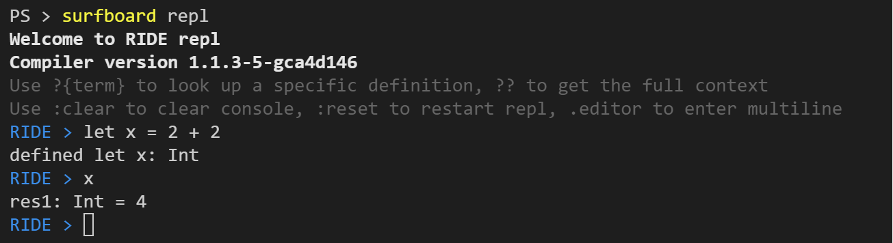
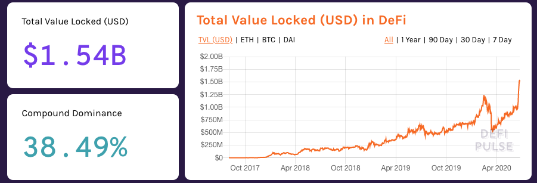

Chapter 1. A Brief History of the Web, or Web 1.0 to Web 3.0
Chapter 2. Waves node and how it works, its configuration
Chapter 6. The Ride Programming Language
Chapter 7. Workshop: Writing Web3 Applications
Chapter 8. Developer's best friends
Chapter 9. Looking to the future
This book can help you make your first Web3 application on the Waves blockchain as quickly as possible, avoiding fatal mistakes. This book focuses on examples, analysis of real cases, specific recipes that you can apply in your applications. But as with many aspects of life, getting to real-world tasks requires fundamental knowledge of the protocol. Therefore, the first three chapters talk about the specifics of Web3 and the Waves blockchain, how it differs from other blockchains, along with a discussion of "what" and "how" can affect the architecture of your application and what limitations there may be. The book focuses on the specifics of working with Web3 applications on Waves, but not on basic concepts like "what is blockchain?" and "how does the consensus algorithm work?", since there is a huge amount of materials on how the blockchain works, while finding the features of individual protocols, examples and recipes is quite problematic.
It is important to understand that the book is also not a "complete guide" to Waves, as it focuses on the applied aspects of the protocol. It does not try to compete with the protocol documentation, which has been around for a long time and covers many aspects of working with Waves.
After reading this book, you will be able to write smart contracts in the Ride language, understand the features of the Waves platform, and make your first decentralized Web 3 application.
You are holding a book on Web3 in your hands, but perhaps you first want to know what Web3 is, how it differs from Web2, and what does Waves have to do with it. In this chapter, we will look at all of these issues. You've probably heard that the Internet, as a signal transmission technology, appeared more than 50 years ago, or to be more precise, on September 2, 1969. It was on this day that 2 computers transmitted data to each other for the first time. But the world wide web, as we currently understand it, was invented by Sir Tim Berners Lee 20 years later, in 1989. In fact, he invented the Internet as we know it today, made up of millions of hypertext markup documents linked together by links. The Internet in 1989 was completely different, lacking social networks like Facebook, online shops like Amazon, or even search engines and memes sites.
The Internet was read-only back then. Sites were only at research centers, large universities and companies, and it was they who created all the content and distributed it in the form of static web pages, the only form of interaction with which was clicking on a link to another page. It was the wonderful world of Web 1.0.
** In other words, Web 1.0 is a read-only Internet for most of its users. **
As time went on and the speed of spread of technology only increased, in the 90s the Internet experienced a boom and the "crash of dot-coms", but it was this crash that gave the opportunity to the next evolution of web pages on the Internet. These web pages were different in that they offered users the tools to interact with each other. One of the first such forms of interaction were forums, which have now almost disappeared into oblivion, but were once very popular. In addition to forums, other platforms began to appear with content from users, not just site owners (user generated content). The Internet became not only for reading, but also for creation and creation, pages became interactive, technologies allowed users to interact without page reloads (AJAX appeared). We still live in the Web 2.0 world.
** Web 2.0 - Internet with content from users and the ability to interact with other users **
But what exactly is Web 3.0? How to define it? You may be old enough to remember the idea of the "semantic web". Semantic Web - a family of standards that aimed at creating protocols for exchanging data on the Web. A couple of years ago, this was what was meant by Web 3.0, but now the vision of the future has changed.
The world wide web is becoming more complex, connected, and even smart. The number of users, the number and quality of their interactions are growing. The number of challenges and problems facing the World Wide Web is also growing, especially in connection with hacks, data leaks, manipulations, sales of personal information, etc. This is largely due to the history of the web, because from the very beginning there were practically no monetization models on the Internet other than advertising, which leads to user tracking. And the most natural form of development of Internet platforms has become monopolies, because the Internet has no borders, physical restrictions, so it is much easier to capture markets. One of the answers to these problems is ** decentralization **. The web of the future must be focused on security, privacy, and focus on the user, not the corporation. For this, Web 3.0 can use technologies such as Blockchain, but, obviously, there will be a lot of Artificial Intelligence, Big Data, VR / AR on the web of the future.
The transition to Web 3.0 is different from the transition from Web1.0 to Web2.0. Web 3.0 isn't about speed, performance or convenience, it's about ** power **. Users have power over their data, not corporations have power over users.
One of the pioneers of Web 3.0 and co-founder of the Ethereum blockchain platform Gavin Wood back in 2014 in his [blog post] (http://gavwood.com/dappsweb3.html) described Web 3.0 with the following words:
“Rethinking things for which we already use the Web, but with a fundamentally different model of interaction between the parties. We publish information that we consider to be publicly available. We put the information that we want to negotiate in a distributed ledger. We keep information that is private and never disclose it. Communication always takes place over encrypted channels and only with aliases as endpoints; but never with tracked aliases (like IP addresses). In short, we are designing a system that ** mathematically ** enforces our assumptions about the availability of information, because no government or organization can be trusted. "
The mathematical compulsion to comply with our assumptions is the use of cryptography, and blockchain allows us to get rid of trust. In this book, we will practically not touch on the issues of cryptography, since we are more interested in the practical applicability of the ideas of Web3 and how we can start making web applications of the future today.
Web3 is now in its infancy, both in terms of the number of applications and the number of users of those applications. And that is why now is the time to start making applications that will help attract more users. At the same time, no one rules out the scenario that our current understanding of Web 3.0 will change in the future and the principles described in this book will become as irrelevant as the "semantic web" is not.
Let's take a look at what Web 3.0 currently consists of. The description of the layers of Web 3.0 technologies, which can be found on the [Web3 Foundation] website (https://web3.foundation/about/), will help us with this. At the moment, the Web3 stack describes everything related to the blockchain, without affecting other possible technologies. The stack consists of 5 layers, from level 0 to level 4.
Layer 0 is the backbone of the Web3 technology stack, which consists of how hosts interact and how they can be programmed at the lowest level. As part of this book, we will look at the Waves Blockchain and its node communication protocol. In many cases, level 0 is a black box for application developers that does not affect the user experience or development process in any way.
The next level is Level 1, which disseminates and interacts with data. The layer can also be referred to as the "zero trust interworking protocol". Basically, it is a protocol that describes how different nodes on the blockchain network interact with each other, it allows them to exchange and verify each other. This layer mainly deals with data distribution protocols and temporary / intermediate messages. Level 1 is required for the blockchain itself to function properly. This level can affect the user experience, for example, in terms of delays in getting information into the blockchain, so it is important to understand how the system works at this level.
When developing Web3 applications, you will definitely work with Layer 2 protocols. It is a series of protocols that include many interesting technical solutions such as State Channels, Plasma Protocols, oracles, and so on. This layer extends the capabilities of Layer 1 to provide scalability, encrypted messaging, and distributed computing. In this book we will describe working with oracles. Oracles are a way to get data from the real world within the blockchain system (for example, weather or stock prices). Web3 applications are very often tied to data that is outside the blockchain, so working with such data and oracles is extremely important. Chapter 7 will take a closer look at the oracle problem.
Level 3 focuses on programming languages and libraries that allow developers to create programs at the proper level of abstraction, without unnecessary low-level details. This layer is also known as "extensible protocols, APIs, and developer languages". There are many languages that can be used to develop applications without using real bytecode, such as Solidity for Ethereum, Plutus for Cardano, and Ride for Waves. In addition, there are many platforms and libraries that facilitate the development of blockchain interoperable applications. We will be using Ride and the Waves Blockchain JavaScript library. There are many libraries for different languages, for PHP, Java, Python, Kotlin, Swift and many others, but we will only cover the JavaScript / Typescript library.
Finally, we move on to the top level of the stack, level 4, which is the UI level. It contains technologies that allow the average user, non-developer, to interact with Web3 applications. Some common browsers (like Opera) allow users to interact directly with blockchains, but some of the most popular browsers: Chrome, Firefox and Microsoft Edge require additional tools from users, the most common tool being browser extensions. In Chapter 8 we'll look at an example of such a browser extension and see how to work with it.
The general layout of the Web3 stack looks like this:
In this book, we will look at all layers of the Web3 stack using the Waves protocol as an example.

We will start our examination with the most basic layers, then we will talk about the Ride programming language, development tools, oracles and ways of interacting with the user. In the course of considering technologies, we will also talk about philosophy and the reasons for certain technical solutions.
Waves is a Proof-of-Stake permissionless, general-purpose blockchain platform created since 2016 to help mainstream blockchain technology. Waves blockchain platform is one of the most mature (both in terms of age and in view of the large number of projects) and easy for beginner developers who want to take advantage of blockchain to the maximum benefit. Within the framework of this book, we will analyze the main technical features, talk about the advantages and consider a lot of real code, but before we do this, let's talk a little about the history of Waves in order to better understand the origins of certain features.
Waves as a blockchain began in 2016, when the founder of the platform Alexander Ivanov initiated a fundraising event as part of an ICO. From the very beginning, the platform has positioned itself as a general-purpose blockchain, without a focus on certain specific areas of application. The main task that the platform was going to solve (and in many ways successfully solved it) is throughput. At the beginning of 2016, there were very few blockchains that could process hundreds of transactions per second. In fact, only Bitcoin (and its forks like Litecoin) with 7 transactions per second and Ethereum with 15 transactions / sec fully worked on the market. So the problem of blockchain bandwidth was extremely urgent.
The successful fundraising for the ICO was only the beginning of the project, then it was necessary to implement everything promised as well as possible. Initially, the technological base of the Scorex framework was chosen . Almost nothing is left of the framework itself in the project's code base, but Scorex is written in Scala, which determined the technological stack of the protocol development for a long time. Until recently, the implementation of a node (that is, a protocol) in Scala was the only one, only relatively recently there was also an implementation in Go. It is worth noting that at the time of this writing, the Go version was lagging behind the Scala version in terms of capabilities, we will talk about this in the following sections. The Waves mainnet (hereinafter referred to as mainnet) was launched in December 2016. The project had features from the very beginning: easy release of its tokens / assets (by sending one transaction) and PoS with a leasing (staking) model. We will analyze these features in further sections.
Other notable milestones in the history of the protocol include the following dates:
The history of the creation of Waves strongly influenced the technical details of the project. For example, the Scorex framework is rooted in the Nxt project, another Proof-of-Stake blockchain with native tokens. Both features were inherited by Waves from Nxt. The ease of creating tokens and the speed of the protocol later made the project the second most popular platform for issuing tokens and launching ICOs (right after Ethereum). A large number of projects on Waves have used the blockchain specifically for working with tokens. Since 2019, projects related to financial services have been actively developing, so we can say that the focus of Web3 projects on the platform is now the task of creating an open ecosystem of financial products.
The developers of the Waves protocol have always been guided by some basic principles that strongly influence the further development of the protocol. Understanding these principles and the motivation behind them will make it easier to follow the further development of the project, so I will list these features.
The Waves mantra has long been "Blockchain for the people". It fully reflected and reflects what the team is doing. The main thing the platform wants to achieve is ** popularize blockchain technology for the masses **. At the moment, blockchain is a technology for a very small group of people who understand what this technology is and how to use it correctly. Waves wants to change this state of affairs and ensure that technology brings the maximum benefit to everyone.
Many people think that blockchain technology is extremely complex and knowledge-intensive (in many ways it is), while Waves tries to hide all the complexity behind a simple layer of abstraction. Blockchain is not the most user-friendly database, which has several important properties: decentralization, immutability and openness. These features are not values in themselves, but only if applied correctly by developers of specific applications. Waves' goal is to provide the tools to developers that will enable them to deliver value to end users faster, easier, without too much technical immersion.
We can say that the principle of orientation towards real application breaks down into several steps:
Always, during the development of a new functionality or product, ** practical applicability ** is at the forefront and how many people potentially will be able to solve their problems using this. The protocol developers try not to make "spaceships", solve "spherical problems in a vacuum" or over-engineer, choosing the applicability "here and now". It's better to have it working now than perfect in 10 years. Of course, this principle should not conflict with network security.
The Waves protocol is completely open and the development process is as decentralized as possible. All source codes are available on Github. In addition to the source code itself, the development of the protocol, various problems and options for their solution are discussed there. Protocol updates related to consensus changes are always discussed with Waves Enhancement Proposals ... But the discussion is only the first stage, because all consensus updates must still go through the activation procedure with a vote, which we will talk about in the next section. Now you know what to do if you want to change or add something in the protocol.
If you already have experience with other blockchains, you may be wondering how Waves differs from conditional Ethereum and why it is different. Let's quickly go over the differences, which will be explored in detail in the following sections.
One of the features of working with Waves from day one was the ease of issuing tokens. To do this, just send a transaction or fill out a 5-field form in any UI client. The issued token automatically becomes available for transfers, trading on a decentralized exchange, dApp use and burning.
Unlike Ethereum, Waves tokens are not smart contracts, but are "first-class citizens", that is, they are a separate full-fledged entity. This has both advantages and disadvantages, which we'll talk about in Section 4 Tokens.
Another distinctive feature of Waves is the large number of transaction types. For example, Ethereum has smart contracts that can be anything, depending on their implementation. The ERC-20 describing the token is just a description of the smart contract interface - what methods it should have. Waves assumes that it is better to have lightweight/narrow specific things than abstract "about everything and nothing". The specificity of the primitives makes development easier in many places, but this is sometimes a less flexible solution.
Below is a list of current transactions at the time of this writing:

In Chapter 5, "Transactions," we'll go over each of them in detail.
Waves has a staking mechanism called leasing. Any Waves token holder can lease tokens to any Waves node to produce blocks "on behalf of those tokens."
The lessor transfers the right to generate blocks on behalf of its tokens to the lessee (the owner of the node).
This is usually done when the user does not want or cannot deal with the deployment of his node and its support. Typically, the owners pay lizngovyh pools used about most of the earned through leasing by the lessor. You can lease funds instantly, but they will start to be taken into account in the generating balance of the node only after 1000 blocks.
You can pick up tokens from leasing instantly.
Waves uses the Proof-of-Stake algorithm to determine the right to generate a block. Blocks are generated on average every minute, and the probability of a block being generated by a node depends on 3 parameters:
To start generating blocks, it is enough to have 1000 Waves generating balance (own + leased). Why do you need to generate blocks? For each block, the node receives commissions from transactions in this block and a reward "out of thin air" on its balance sheet. Both of these points are not so simple, so we will look at them a little later.
A very common question that comes up - how many blocks will I generate per month with balance N? It is impossible to predict the exact number, as it depends on chances and changes in the network, but it is possible to predict approximately. To do this, you need to know the current network parameters:
To calculate the approximate number of blocks that we will generate, divide the number of blocks for the period by the generating network balance and multiply by our balance:
$ ForgedBlocks = BlocksCountInPeriod / NetworkGenBalance * NodeGenBalance $
Having done some simple calculations, we get:
43200/50000000 * 10000 = 8.64
That is, on average, a node will generate 8-9 blocks per month if it works stably and the network parameters do not change, but, of course, this does not happen, because a large number of transactions are constantly being made on the network, which change generating balances of the entire network in as a whole and each node separately.
At first, Waves had a limited emission of 100 million tokens, which were issued immediately at the time the mainnet was launched, but since the fall of 2019, the community decided that for the further growth of the ecosystem, it would be better to include the emission of tokens in the protocol. That is, new Waves tokens appear in each new block. The exact number of tokens is determined by the community, which votes for the size of the reward every 100 thousand blocks. At the time of this writing, the block reward was 6 Waves. At the same time, it is guaranteed that the size of the reward cannot change by more than 0.5 Waves after each voting period.
The token sponsorship feature is a way to reduce barriers to entry for users. The bottom line is that the account that issued the token can sponsor transactions with that token. Let's say there is token A, it was issued by Cooper and sponsored. For example, Alice has earned 100 A tokens and wants to send 10 of them to Bob. We know that for each transaction in the blockchain, you need to pay a commission, in the Waves network, miners accept only Waves in the form of a commission, and Alice does not have Waves. Have to go and buy Waves somehow?
No. Sponsoring a token allows its owner to say that he is ready to take on commissions for operations with this token (token A in our case). The owners of token A will pay the same token as a commission when sending a transaction. In our example, Alice will be able to indicate in her transaction that the recipient is Bob, the amount to be sent is 10 tokens A, the commission is 5 tokens A. As a result, 15 tokens will be debited from her account, 10 will receive Bob, 5 will receive Cooper as the issuer and the sponsoring token, and the miner will receive Waves from Cooper's account.
Why will Alice pay 5 tokens and how much will the miner receive? We'll talk about this in the next chapters. The main thing to remember now is there are ways to send a transaction in Waves without having Waves tokens on your balance sheet.
Waves is a general purpose blockchain that does not specialize in one thing, so the emergence of smart contracts was a logical continuation of the platform's development. We'll talk about smart contracts in Waves in Chapter 6 "Ride". Now it is worth noting that contracts are written in the Ride language, which was invented specifically for smart contracts and is not Turing complete. There are no cycles in the language, but there is no gas, there are no "Out of gas" errors like in Ethereum, and the cost of a transaction is always known in advance. Intrigued? This is just the beginning, we will talk about the Ride execution model and language syntax later.
Earlier, I already touched on the topic related to Waves NG and mentioned that it allows transactions to get into blocks faster and work on the blockchain so quickly that the platform is able to process hundreds of transactions per second on the mainnet. And there, for a minute, there are more than 400 nodes distributed around the world, on completely different hardware and with different bandwidth.

The easy and fast token issuance along with "class equality" (remember that tokens are first class citizens?) Make token trading easy. The Waves node (talking about the Scala version) supports the ability to create extensions, one of such extensions is the matcher. The matcher accepts orders to buy and sell tokens and stores them (centrally). For example, Alice wants to sell wBTC token and buy Waves, while Bob wants to do the opposite. They form orders (cryptographically signed primitives) and send them to the matcher, which determines that these orders are placed in one pair and that they can be matched at a certain price. As a result, the matcher forms an Exchange transaction that contains 2 orders (one from Alice, the other from Bob) and sends it to the blockchain. At the same time, the matcher takes a commission from users, and the node that will mine the block from the Exchange of transactions receives a commission from the matcher.

I would recommend starting a direct technical acquaintance with the Waves platform with installing and configuring a node. Not necessary for the main network, it is possible for testnet (full copy of technical capabilities) or stagenet (experimental network). Why do I recommend starting by installing a node? Firstly, I myself began my acquaintance with the Waves blockchain with this, and secondly, the installation and configuration make you understand what settings the node has and what parameters the network has.
As in almost all blockchains, a node is a software product that is responsible for accepting transactions, creating new blocks, synchronizing data between different nodes and reaching consensus between them. Each member of the network starts its own copy of the node and synchronizes with the rest. We'll talk about the rules of consensus a little later, now let's figure out what a node is from a software point of view.
By and large, a node is an executable file (a jar file for the Scala version and a binary for Go) that at the time of launch reads the configuration file in order to start communicating with other nodes in the network using the protocol over TCP based on these parameters. The node adds the received and generated data to LevelDB (key-value storage). By and large, that's all, but the devil is in the details. As you delve into the specifics of the work, you will realize that this is not as easy as it might seem. For now, let's talk about where the node starts its work at the time of launch - the configuration file.
In this book, we will not analyze the process of installing a node, since this has already been described many times in different sources (documentation, videos on youtube, posts on the forum). No book will be enough for us if we want to plunge into this topic, because there are many ways to launch a node:
jar file.deb fileapt- repositoryPersonally, I prefer running a Docker container as it makes it easier to maintain, configure, and configure. Another reason for my love for Docker may be that I made a Docker image hosted in the Docker Hub and I know perfectly well how what works there. Although unlikely, it's just more convenient! ![smiley]()
The configuration file of the Waves node is described in the HOCON format (it's like JSON, only with comments, the ability to compose several files and, no less important , with fewer quotes). The complete configuration file looks cumbersome, but I will still provide it here, the version at the time of this writing (the file is constantly changing, but the current version can be found in the Waves Github repository.
The file contains a large number of comments explaining each parameter, so we will not analyze all the parameters in detail. Let's talk only about the main points. The configuration contains the following sections:
The last 3 sections are service ones, which are responsible for logging parameters, sending metrics and the akka framework. We are only interested in the first section, which relates directly to the protocol and contains the following subsections at the first level:
type setting that allows you to set one of the predefined blockchain types (stagenet, testnet or mainnet). When specifying the value custom, you can change all the parameters of the blockchain, including the initial number of tokens, their distribution, network bytes (unique identifier of each network), supported functionality, etc.enable parameter. It can be useful if, for example, you need a node that will only validate blocks, but not generate them. Another useful parameter is quorum, which determines how many connections to other nodes are needed for a node to try to generate blocks. If you set this parameter to 0, then you can start a blockchain consisting of 1 node. Why do you need such a blockchain, if this one node can rewrite the whole history and do whatever it wants? For testing! The perfect sandbox for blockchain games.enable parameter is responsible for this) allows you to make HTTP requests to receive data from the blockchain or write new transactions to it. This API has both methods open to all and those that require an API key, which is specified in the same settings section. The port parameter specifies on which port the node will listen for incoming HTTP requests, on the same port the Swagger UI will be available with a description of all API methods. api-key-hash allows you to specify a hash from the API key with which private methods will be available. That is, in the configuration file we specify not the key itself, but the hash from it. What hash should you take? SHA-1? SHA-512? Or, God forgive me, MD5? None of the above, because Waves uses a secure hash, which is a sequential computation of the Blake2b256 and Keccak256 -keccak256 (blake2b256 (data))hashes. The REST API has a method /utils/hash/secure that allows you to pass a value and get a ready-made hash.max-rollback parameter, which specifies how many blocks can be rolled back and by default equals 100. In fact, we can say that the transaction finalization time, after which exactly you can be sure that the transaction will not disappear from the network, is 100 minutes (average block time is 1 minute).max-size parameter, which specifies the maximum number of transactions in the pending list, is 100,000 by default, and max-bytes-size has the value 52428800. Upon reaching any of these limits, the node will stop accepting transactions on its waiting list. We'll talk about UTX separately in Chapter 5 "Transactions".supported array in this part of the configuration. Also, a node can automatically shutdown if the entire network has accepted some update that is not supported by this version using the auto-shutdown-on-unsupported-feature flag.In the section waves, at the first level, there are also some parameters:
directory - path to the directory in which the node will save all the files that refer to it, including LevelDB files with datantp-server - time synchronization serverextensions-shutdown-timeout is the time that is given to extensions connected to the node to exit correctly when the node itself is shut downIn the next sections, we will analyze in more detail which parameters affect the behavior of the node and how.
You have already seen that the configuration of a node is done using HOCON files, which support the ability to compose. In other words, you can use the include filename.conf statements in the configuration file, which can load different configuration sections from another file. Some sections can be repeated in different files, so there is also a conflict resolution mechanism there (the lower the file is connected, the higher priority it has). If you have experience with CSS, the principle is the same. In some places in the Waves documentation, a notation like waves.network.port is given, as you might guess, this means a parameter in the configuration along with the path:
hocon waves { network { port = 6868 } } ``
When configuring a node, it is important to pay special attention to those parameters that directly affect security - the wallet and rest-api sections. It is considered good practice to specify the seed phrase and password in the base58 configuration file, start the node, and then delete the phrase from the file (without restarting the node). Thus, the launched node will know the private key and password (this is in RAM), but nothing will remain in the configuration file. If suddenly someone gets access to your configuration or even the wallet file, he will not be able to decrypt the key.
The node's API key is equally important, because it allows you to send transactions from the node, signed by the keys stored in the node. Unlike account data, only the hash is stored in the configuration, so there is no point in deleting from there after launch, but it makes sense to use the most complex key and not the default one (in older versions there was a key by default, in the latter it is already not).
A very frequently asked question - what are the optimal settings? First of all depends on what kind of network we are talking about - stagenet, testnet, mainnet or custom? For example, there are no optimal ones for custom because of the different network requirements. But you need to understand that the Waves node is not omnipotent, it is empirically shown that when the block time is less than 12 seconds (waves.blockchain.genesis.average-block-delay), the microblock time is less than 3 seconds ( waves.miner.micro-block -interval) and a relatively large number of nodes in the network (10+), the network can quickly split into several. This behavior is caused by delays in the transmission of network messages.
An important parameter that needs to be adjusted taking into account the peculiarities of the environment is the maximum number of transactions in UTX. 100,000 transactions is optimal for a node that meets the minimum system requirements.
I described above only the most basic parameters, we will consider many others in the following sections, as we dive into the protocol and its features. Now I will give a complete configuration file with comments:
# Waves node settings in HOCON
# HOCON specification: https://github.com/lightbend/config/blob/master/HOCON.md
waves {
# Node base directory
directory = ""
db {
directory = $ {waves.directory} "/ data"
store-transactions-by-address = true
store-invoke-script-results = true
# Limits the size of caches which are used during block validation. Lower values slightly decrease memory consummption,
# while higher values might increase node performance. Setting ghis value to 0 disables caching alltogether.
max-cache-size = 100000
max-rollback-depth = 2000
remember-blocks = 3h
}
# NTP server
ntp-server = "pool.ntp.org"
# P2P Network settings
network {
# Peers and blacklist storage file
file = $ {waves.directory} "/ peers.dat"
# String with IP address and port to send as external address during handshake. Could be set automatically if UPnP
# is enabled.
#
# If `declared-address` is set, which is the common scenario for nodes running in the cloud, the node will just
# listen to incoming connections on `bind-address: port` and broadcast its` declared-address` to its peers. UPnP
# is supposed to be disabled in this scenario.
#
# If declared address is not set and UPnP is not enabled, the node will not listen to incoming connections at all.
#
# If declared address is not set and UPnP is enabled, the node will attempt to connect to an IGD, retrieve its
# external IP address and configure the gateway to allow traffic through. If the node succeeds, the IGD's external
# IP address becomes the node's declared address.
#
# In some cases, you may both set `decalred-address` and enable UPnP (e.g. when IGD can't reliably determine its
# external IP address). In such cases the node will attempt to configure an IGD to pass traffic from external port
# to `bind-address: port`. Please note, however, that this setup is not recommended.
# declared-address = "1.2.3.4:6863"
# Network address
bind-address = "0.0.0.0"
# Port number
port = 6863
# Node name to send during handshake. Comment this string out to set random node name.
# node-name = "default-node-name"
# Node nonce to send during handshake. Should be different if few nodes runs on the same external IP address. Comment this out to set random nonce.
# nonce = 0
# List of IP addresses of well known nodes.
known-peers = ["52.30.47.67:6863", "52.28.66.217:6863", "52.77.111.219:6863", "52.51.92.182:6863"]
# How long the information about peer stays in database after the last communication with it
peers-data-residence-time = 1d
# How long peer stays in blacklist after getting in it
black-list-residence-time = 15m
# Breaks a connection if there is no message from the peer during this timeout
break-idle-connections-timeout = 5m
# How many network inbound network connections can be made
max-inbound-connections = 30
# Number of outbound network connections
max-outbound-connections = 30
# Number of connections from single host
max-single-host-connections = 3
# Timeout on network communication with other peers
connection-timeout = 30s
# Size of circular buffer to store unverified (not properly handshaked) peers
max-unverified-peers = 100
# If yes the node requests peers and sends known peers
enable-peers-exchange = yes
# If yes the node can blacklist others
enable-blacklisting = yes
# How often connected peers list should be broadcasted
peers-broadcast-interval = 2m
# When accepting connection from remote peer, this node will wait for handshake for no longer than this value. If
# remote peer fails to send handshake within this interval, it gets blacklisted. Likewise, when connecting to a
# remote peer, this node will wait for handshake response for no longer than this value. If remote peer does not
# respond in a timely manner, it gets blacklisted.
handshake-timeout = 30s
suspension-residence-time = 1m
# When a new treansaction comes from the network, we cache it and doesn't push this transaction again when it comes
# from another peer.
# This setting setups a timeout to remove an expired transaction in the elimination cache.
received-txs-cache-timeout = 3m
upnp {
# Enable UPnP tunnel creation only if you router / gateway supports it. Useful if your node is runnin in home
# network. Completely useless if you node is in cloud.
enable = no
# UPnP timeouts
gateway-timeout = 7s
discover-timeout = 3s
}
# Logs incoming and outgoing messages
traffic-logger {
# Codes of transmitted messages to ignore. See MessageSpec.messageCode
ignore-tx-messages = [23, 25] # BlockMessageSpec, TransactionMessageSpec
# Codes of received messages to ignore. See MessageSpec.messageCode
ignore-rx-messages = [25] # TransactionMessageSpec
}
}
# Wallet settings
wallet {
# Path to wallet file
file = $ {waves.directory} "/ wallet / wallet.dat"
# Password to protect wallet file
# password = "some string as password"
# The base seed, not an account one!
# By default, the node will attempt to generate a new seed. To use a specific seed, uncomment the following line and
# specify your base58-encoded seed.
# seed = "BASE58SEED"
}
# Blockchain settings
blockchain {
# Blockchain type. Could be TESTNET | MAINNET | CUSTOM. Default value is TESTNET.
type = TESTNET
# 'custom' section present only if CUSTOM blockchain type is set. It's impossible to overwrite predefined 'testnet' and 'mainnet' configurations.
# custom {
# # Address feature character. Used to prevent mixing up addresses from different networks.
# address-scheme-character = "C"
#
# # Timestamps / heights of activation / deactivation of different functions.
# functionality {
#
# # Blocks period for feature checking and activation
# feature-check-blocks-period = 10000
#
# # Blocks required to accept feature
# blocks-for-feature-activation = 9000
#
# reset-effective-balances-at-height = 0
# generation-balance-depth-from-50-to-1000-after-height = 0
# block-version-3-after-height = 0
# max-transaction-time-back-offset = 120m
# max-transaction-time-forward-offset = 90m
# pre-activated-features {
# 1 = 100
# 2 = 200
#}
# lease-expiration = 1000000
#}
# # Block rewards settings
# rewards {
# term = 100000
# initial = 600000000
# min-increment = 50,000,000
# voting-interval = 10000
#}
# # List of genesis transactions
# genesis {
# # Timestamp of genesis block and transactions in it
# timestamp = 1460678400000
#
# # Genesis block signature
# signature = "BASE58BLOCKSIGNATURE"
#
# # Initial balance in smallest units
# initial-balance = 100000000000000
#
# # Initial base target
# initial-base-target = 153722867
#
# # Average delay between blocks
# average-block-delay = 60s
#
# # List of genesis transactions
# transactions = [
# {recipient = "BASE58ADDRESS1", amount = 50000000000000},
# {recipient = "BASE58ADDRESS2", amount = 50000000000000}
# ]
# }
# }
}
# New blocks generator settings
miner {
# Enable / disable block generation
enable = yes
# Required number of connections (both incoming and outgoing) to attempt block generation. Setting this value to 0
# enables "off-line generation".
quorum = 1
# Enable block generation only in the last block is not older the given period of time
interval-after-last-block-then-generation-is-allowed = 1d
# Mining attempts delay, if no quorum available
no-quorum-mining-delay = 5s
# Interval between microblocks
micro-block-interval = 5s
# Max amount of transactions in key block
max-transactions-in-key-block = 0
# Max amount of transactions in micro block
max-transactions-in-micro-block = 255
# Miner references the best microblock which is at least this age
min-micro-block-age = 4s
# Minimal block generation offset
minimal-block-generation-offset = 0
# Max packUnconfirmed time
max-pack-time = $ {waves.miner.micro-block-interval}
}
# Node's REST API settings
rest-api {
# Enable / disable REST API
enable = yes
# Network address to bind to
bind-address = "127.0.0.1"
# Port to listen to REST API requests
port = 6869
# Hash of API key string
api-key-hash = ""
# Enable / disable CORS support
cors = yes
# Enable / disable X-API-Key from different host
api-key-different-host = no
# Max number of transactions
# returned by / transactions / address / {address} / limit / {limit}
transactions-by-address-limit = 1000
distribution-address-limit = 1000
}
# Nodes synchronization settings
synchronization {
# How many blocks could be rolled back if fork is detected. If fork is longer than this rollback is impossible.
max-rollback = 100
# Max length of requested extension signatures
max-chain-length = 101
# Timeout to receive all requested blocks
synchronization-timeout = 60s
# Time to live for broadcasted score
score-ttl = 90s
# Max baseTarget value. Stop node when baseTraget greater than this param. No limit if it is not defined.
# max-base-target = 200
# Settings for invalid blocks cache
invalid-blocks-storage {
# Maximum elements in cache
max-size = 30000
# Time to store invalid blocks and blacklist their owners in advance
timeout = 5m
}
# History replier caching settings
history-replier {
# Max microblocks to cache
max-micro-block-cache-size = 50
# Max blocks to cache
max-block-cache-size = 20
}
# Utx synchronizer caching settings
utx-synchronizer {
# Max microblocks to cache
network-tx-cache-size = 1000000
# Max scheduler threads
max-threads = 8
# Max pending queue size
max-queue-size = 5000
# Send transaction to peers on broadcast request even if it's already in utx-pool
allow-tx-rebroadcasting = yes
}
# MicroBlock synchronizer settings
micro-block-synchronizer {
# How much time to wait before a new request of a microblock will be done
wait-response-timeout = 2s
# How much time to remember processed microblock signatures
processed-micro-blocks-cache-timeout = 3m
# How much time to remember microblocks and their nodes to prevent same processing
inv-cache-timeout = 45s
}
}
# Unconfirmed transactions pool settings
utx {
# Pool size
max-size = 100000
# Pool size in bytes
max-bytes-size = 52428800 // 50 MB
# Pool size for scripted transactions
max-scripted-size = 5000
# Blacklist transactions from these addresses (Base58 strings)
blacklist-sender-addresses = []
# Allow transfer transactions from the blacklisted addresses to these recipients (Base58 strings)
allow-blacklisted-transfer-to = []
# Allow transactions from smart accounts
allow-transactions-from-smart-accounts = true
# Allow skipping checks with highest fee
allow-skip-checks = true
}
features {
auto-shutdown-on-unsupported-feature = yes
supported = []
}
rewards {
# desired = 0
}
extensions = [
# com.wavesplatform.matcher.Matcher
# com.wavesplatform.api.grpc.GRPCServerExtension
]
# How much time to wait for extensions' shutdown
extensions-shutdown-timeout = 5 minutes
}
# Performance metrics
kamon {
# Set to "yes", if you want to report metrics
enable = no
# A node identification
environment {
service = "waves-node"
# An unique id of your node to distinguish it from others
# host = ""
}
metric {
# An interval within metrics are aggregated. After it, them will be sent to the server
tick-interval = 10 seconds
instrument-factory.default-settings.histogram {
lowest-discernible-value = 100000 # 100 microseconds
highest-trackable-value = 2000000000000 # 200 seconds
significant-value-digits = 0
}
}
# Reporter settings
influxdb {
hostname = "127.0.0.1"
port = 8086
database = "mydb"
# authentication {
# user = ""
# password = ""
# }
}
}
# Non-aggregated data (information about blocks, transactions, ...)
metrics {
enable = no
node-id = -1 # ${kamon.environment.host}
influx-db {
uri = "http://"${kamon.influxdb.hostname}":"${kamon.influxdb.port}
db = ${kamon.influxdb.database}
# username = ${kamon.influxdb.authentication.user}
# password = ${kamon.influxdb.authentication.password}
batch-actions = 100
batch-flash-duration = 5s
}
}
# WARNING: No user-configurable settings below this line.
akka {
loglevel = "INFO"
loggers = ["akka.event.slf4j.Slf4jLogger"]
logging-filter = "akka.event.slf4j.Slf4jLoggingFilter"
log-dead-letters-during-shutdown = false
http.server {
max-connections = 128
request-timeout = 20s
parsing {
max-method-length = 64
max-content-length = 1m
}
}
io.tcp {
direct-buffer-size = 1536 KiB
trace-logging = off
}
}
include "deprecated-settings.conf"
The mining process is key for a node, after all, its main task is to produce blocks with transactions. To do this effectively, a node must also receive information about blocks from other nodes and send them its blocks. Let's take a look at a simplified Waves mining model. For more information on the mining process, including formulas, see the article Fair Proof of Stake.
Mining is based on the Proof-of-Stake algorithm, which implies that the probability of generating a block by any account is directly proportional to the balance of this account. Let's consider the simplest case: let's say we have an account with a balance of 10 million Waves (out of 100 million issued at the time of creation). The probability of mining a block will be 10%, in other words, we will generate approximately 144 blocks per day (1440 total blocks per day appear on the network on average).
Now let's complicate things a little. Although only 100 million tokens were issued, not all of them participate in mining (for example, tokens can be on the exchange, and not on the node's account). If 50 million are involved in mining, then a node with a balance of 10 million will already generate 288 blocks per day. But in fact, the number of tokens that participate in mining is constantly changing, so it is impossible to directly predict how many blocks will be mined.
The question that arose from the most curious - in what order will the nodes generate blocks?. To answer this question, you will need to delve into the specifics of the PoS implementation in Waves, so buckle up and cheer up.
We can say that to answer the question "Who will be the next generator of the block?" nodes use information about balances, time between blocks and a pseudo-random number generator. Let's start with the latter, using urandom in this case will not work, since it is non-deterministic, and each node will receive its own result. Therefore, the nodes "agree" about the randomness. Each block in the chain contains, along with transactions, the address of the node that generated the block, version and time, a field called generation-signature. Take a look at what block number 1908853 looks like in the mainnet in JSON representation (without transactions):
{
"blocksize": 22520,
"reward": 600000000,
"signature": "2kCWg8HMhLPXGDi94Y6dm9NRx4aXjXpVmYAE4y4KaPzgt1Z5EX9mevfWoiBLLr1cc1TZhTSqpozUJJZ3BpA5j3oc",
"generator": "3PEFQiFMLm1gTVjPdfCErG8mTHRcH2ATaWa",
"version": 4,
"reference": "3Jcr6m6SM3hZ1bu6xXBmAVhA2VEUHMvE6omhEiRFn3VhEuDkgb6sgeJUC1VNRB3vTSwPb5qh576a8DwGt3Ts72Tx",
"features": [],
"totalFee": 28800000,
"nxt-consensus": {
"base-target": 74,
"generation-signature": "6cVJBZsjzuSqp7LPD3ZSw5V1BZ25hZQHioh9gHjWPKNq"
},
"desiredReward": 600000000,
"transactionCount": 70,
"timestamp": 1580458301503,
"height": 1908853
}
Note that for convenience, the data structures in this book are presented in JSON format, but the nodes themselves work with blocks, transactions, signatures, etc. in binary format. For this, there are descriptions of binary data structures in the documentation, and more recently the binary data format is Protobuf.
Generation signature is the SHA256 hash of the generation-signature of the previous block and the public key of the generator of this block. The first 8 bytes of the generting-signature hash are converted to a number and used as a kind of random, called hit. The base-target value is responsible for the average time between blocks and is recalculated during the generation of each block. If the network constantly had all the nodes with the entire network stake, ready to generate a block, then base-target would not be needed, but if this is not the case, a synthetic parameter is needed, which changes depending on the current time between blocks and automatically align the average time between blocks is 60 seconds.
So, we have the parameters hit, which is a pseudo-random number, the balance of each account and the value of base-target, but what should the node do with all this? Each node, at the moment of receiving a new block over the network, starts the check function when it is its turn to generate a block.
Δt = f(hit, balance, baseTarget)
As a result of executing this function, the node gets the number of seconds until the moment when it is time to generate the block. In fact, after this, the node sets a timer, upon the occurrence of which it will start generating a block. If it receives the next block before the timer occurs, then the operation will be performed again and the timer will be reset to the new value Δt.
Blocks are validated in the same way, with one exception that the balance is not substituted into the formula of this node, but of the one that generated the block.
If you know anything about Waves at all, you may have heard of Waves NG, which makes the Waves blockchain fast and responsive. Waves-NG gets its name from the article Bitcoin-NG: A Scalable Blockchain Protocol, which was published in 2016 and offered a way to scale the Bitcoin network by changing the block generation protocol. NG in the name stands for Next Generation, and indeed the proposal would have helped the Bitcoin network reach a new level of bandwidth, but this initiative was never implemented in Bitcoin. But it was embodied in the Waves protocol at the end of 2017. Waves NG affects how blocks are generated and how nodes communicate with each other.
At the moment of its mining time, the node generates the so-called * key block *, becoming the leader. The key block does not contain transactions, it is only the beginning of the block that will change. Then the leader gets the right to generate the so-called * microblocks *, which add new transactions to the end of the block and change its signature. For example, the leader generates a key block with the following parameters:
{
"blocksize": 39804,
"reward": 600000000,
"signature": "4oBqMB7szmsbSYYguiaAXSE7ZLy13e4x97EKMmA4gs6puRqPKzCVJkuC6Py9eTpiovhcLAYuUSsnEYAi4i73tvoA",
"generator": "3P2HNUd5VUPLMQkJmctTPEeeHumiPN2GkTb",
"version": 4,
"reference": "4KEFeMDQgPdntzqmSNZ92NBSMcNft1o4EyQexNLXEdN3976XbdYwDgqaucd9gu2PJWt9tpt1wuvRcTMiiDtkZaX7",
"features": [],
"totalFee": 0,
"nxt-consensus": {
"base-target": 66,
"generation-signature": "HpFc5qqVftyjKbqhADkQGWBg38CVR9Bz29c7uDZKKvYV"
},
"desiredReward": 600000000,
"transactionCount": 0,
"timestamp": 1580472824775,
"height": 1909100
}
There are no transactions in the block, as can be seen from the transactionCount value, but the basic parameters such as the signature and the link to the previous block (the reference field) are already there. The creator of this block will be able in a few seconds to generate a microblock with all the transactions that appeared on the network during those seconds, and send it to the rest of the nodes. In this case, some fields in the block will change:
{
// unchanged parameters were omitted
"blocksize": 51385,
"signature": "4xMaGjQxMX2Zd4jMUUUs5cmemkVwT8Jc5sqx6wzMUokVqWg5jvWSDF6SBF1P7x4UNQjYsgsCs4csa2qtRmG8j3g4",
"totalFee": 65400000,
"transactionCount": 167,
"tranasctions": [{...}, {...}, ..., {...}]
}
167 transactions were added to the block, which increased the block size, the block signature and the commission that the leader will earn has also changed.
A few important points to understand:
waves.miner.micro-block-interval field in the configuration sets a value for each node). By default, the leader will generate microblocks every 5 seconds.The block leader will generate microblocks and change the liquid block until another key block in the network is generated (that is, the mining start timer is triggered for some other node) or the block size limits (1 MB) are reached.
Thanks to Waves NG, the time it takes for a transaction to enter a block is reduced. That is, you can provide a much better user experience in your application. The user can receive feedback on his transaction in ~ 5 seconds, if there is no long queue for hitting the block. You just need to understand that hitting a block is not a guarantee of finalization and the block can be canceled (up to 100 blocks deep, but in practice 2-3 blocks in extremely rare cases).
Waves NG makes the load on the network more even. In the absence of Waves NG, blocks would be generated once a minute (1 MB of data at once) and sent over the network as a whole. That is, you can imagine situations when for 50 seconds the nodes (except for the miner) do nothing and wait, and then accept the block and validate it for 10 seconds. With Waves NG, this load is more spread out over time, the nodes receive a new portion of data every 5 seconds and validate it. This generally improves throughput.
Waves NG, however, can sometimes behave not very conveniently. As you remember, each block contains a reference field, which is a reference to the signature field of the previous block. reference is fixed at the moment of generation of the key block, and it may happen that the new miner puts in his key block a link not to the last state of the liquid block. In other words, if the new miner of block N did not manage to get and apply the last microblock of block N - 1 from the previous miner, then it will refer to the "old" version of block N - 1, transactions from the last microblock will be deleted from the block N - 1 for the whole network.
But do not be alarmed, this will only lead to the that the excluded transactions will fall into the N block, instead of the N - 1 block, in which we could already have time to see these transactions in our client code.
Waves NG also affects the distribution of commissions in the block. The miner receives 60% of the commissions from the previous block and 40% from his block. This was done in order to exclude a possible "dirty game" of nodes, when they specifically refer to the very first version of the previous block in order to take all transactions from there and put them in their own block, and therefore receive commissions.

The resulting commission can be spent by the miner in the same block. He can add a transaction to the block, for which he will receive a commission of 0.1 Waves and, in the next transaction, put it in a block that transfers these 0.1 Waves from his account.
As you could understand from the previous section, the blockchain protocol, especially Waves NG, is a completely non-trivial thing. But like any protocol, it can and should change over time to get better. But everything is not so simple here. The Waves development team cannot just release updates and order everyone to upgrade, or say that those who do not upgrade will stop working - this is against the principles of decentralization. Many blockchains follow the path of hard forks, just a new functionality is released with a new version of the node, then whoever needs it installs it and starts mining with the support of the new feature. Whoever agrees switches to a new chain, who does not continue to mine the old one. This path is far from the best and can lead to countless forks, so adding new functionality or changing the consensus rules in Waves is possible only through the procedure for proposing new functionality and voting.
The procedure for changing the parameters of consensus through voting is often called governance. We will not use this word, because governance in Waves is now limited to two types of voting, while in many other blockchains there are much more possible changes (account bans, hard changes in account balances and other atrocities that do not get along well with the principles of decentralization).
There is an unwritten rule in the Waves ecosystem (there can be no written rule, because decentralization) that all new functions and consensus changes must go through a discussion procedure. All proposals for changes are so-called Waves Enhancement Proposal or WEP. Each WEP has a sequential number, a well-defined structure and questions that the proposal must answer. The WEP form was suggested on the Waves forum in a dedicated section, but at the moment the main discussions and suggestions are on github.
So, each proposal is formulated in the form of a WEP, then this proposal is discussed by all interested parties, corrections are made, the wording is clarified, etc. In the end, anyone can implement the proposed WEP in the code of a node (the repository is open) and send a Pull Request to add changes to the main development branch. The Waves team is responsible for the quality of the code in the repository, so if there are no quality problems, the code will be added to the main branch and will be included in the build of the next release, which are also published on github. But this does not mean that the new code will start working, because each new functionality (hereinafter a feature, from the word "feature") must be approved not only by the developers, but also by the community, for this a voting procedure is launched.
Here is a link to Waves WEP
As soon as the owner of the node installs a new version, he will have the opportunity to vote for the new feature to be activated. Each feature has an order of the number by which the voting and identification goes, usually the numbers of new features are listed in the release descriptions on Github, but you can also look at the API of the node. A node owner can add a supported feature number to his configuration in the waves.features.supported array. After that (or rather, after restarting the node), the number of the supported feature is added to each generated block from this node. That is, in the binary representation of the block (in which the work is in progress), a new value appears with the feature number.
In order for a feature to be activated, it is necessary that its support is at least 80% - at least 80% of the blocks during the voting period must contain information about the support of the feature. The voting periods begin at each multiple of ten thousand blocs (block number 100,000, 110,000, 120,000, etc.). Simply put, at least 80% of blocks with numbers 100000-109999 contain information about support for a new feature.
In fact, the governance at Waves is very close to how the US presidential election system works. Residents of the country do not directly vote for the president, they elect representatives from each state (the number of representatives varies from state to state. Representatives already directly vote for the president of the United States.
In Waves, token holders can directly vote on feature activation, however, in most cases they do not have their own nodes and lease their tokens, thus transferring their voting rights to the owner of the leasing pool. It is important to understand that they can cancel the lease at any time if the pool owner does not vote the way they would like, which will reduce the number of blocks that this pool will generate. The largest pools in Waves often vote among leasers using decentralized apps (we'll look at an example of such voting in section 7), so representative democracy / decentralization can be transparent.
If the feature has been supported by more than 80% of the steak, then it will be activated 10,000 blocks after the end of the voting period. For example, if the voting was during blocks 10000-19999, then the feature will become active at an altitude of 30,000. This delay allows you to check once again that everything is normal and the new feature will not cause forks.
<! - TODO: why is this delay actually needed? ->
If you look at the code of the node or in the API (/ activation / status), you will notice that each feature has the following possible statuses:
As you can see, the feature does not have the REJECTED status, that is, voting for a feature can go on indefinitely.
There is another type of node voting in Waves that is not found almost anywhere - block reward voting. In 2016, the Waves blockchain was launched with a limited emission of 100 million tokens, which had already been created at the time of the network launch. But in the fall of 2019, the community realized that, after all, the emission model is more lively, so there was a proposal for an update - WEP-7, which went through the voting procedure and the feature was activated on block N. Now, for each block generated, the miner receives not only commissions (and that is 40% of his block and 60% of the previous one, do you remember about Waves NG?), But also receives Waves "generated from the air". Approximately every minute, the total number of Waves in nature increases by a certain value. Which value is the subject of the node vote.
Every 100 thousand blocks (approximately 2 and a half months), a vote begins for the amount of the reward. At the moment of feature activation, N was set to 6 Waves. Every 100,000 blocks, this value can change by no more than 0.5 Waves, and then provided that more than 50% of miners are supported.
Voting for block rewards is done in a slightly different way from features. Node owners can set the reward value that they would like to see in the long term in their configuration file in the waves.reward.desired parameter. At the end of the voting period, it is calculated how many blocks contain the desired reward more than the current one, and if more than 50%, then the reward is increased by 0.5 Waves for the next 110,000 blocks (the beginning of a new voting period + the voting period itself).
Some community members asked why waves.reward.desired simply did not include+or -, since the reward will not be changed by more than 0.5 Waves anyway. Specifying the desired reward in the long run eliminates the need for frequent configuration changes. You can set the value to 10 and not go into the configuration every voting period, since you will vote for an increase until the reward reaches 10 Waves per block. And as soon as it reaches (if it does), the node will stop voting for increasing the reward. So simple.
Here is a link to WEP 7 - An alternative proposal for Block Generation Reward <! - TODO: Add a link to what height WEP-7 was the activation ->
The first thing a person encounters when he starts using the blockchain is working with keys. Unlike classic web applications, where we have a username and password, blockchains only have keys that allow us to identify the user and the validity of his actions. Each account has a public key and a corresponding private key. The public key is actually the account identifier (ID), while the private key allows you to form a signature. Waves uses signatures with curve Curve25519-Ed25519 with X25519 keys (which is sometimes a problem, because not all libraries for languages have support for X25519 keys programming).
The public and private keys are 32 byte values that correspond to each other according to certain rules (you can find more details in the EdDSA description... It is important to understand several things that make Waves different from other blockchains:
Most users still come across keys not in the form of an array of bytes, but in the form of a seed phrase, often also called a mnemonic phrase. Any combination of bytes can be a seed, but Waves clients typically use 15 English words. Based on the seed phrase, the private key is calculated as follows:
1.the string is translated into a byte array
2.calculated hash blake2b256 for the given array of bytes
3.calculate hash keccak256 for the result of the previous step
4.the private key is calculated based on the previous step, an example of the function for this step is presented below
func GenerateSecretKey (hash [] byte) SecretKey {
var sk SecretKey
copy (sk [:], hash [: SecretKeySize])
sk [0] & = 248
sk [31] & = 127
sk [31] | = 64
return sk
}
In other words, or rather the code:
privateKey = GenerateSecretKey (keccak256 (blake2b256 (accountSeedBytes)))
Public and private keys are usually represented as base58 strings like 3kMEhU5z3v8bmer1ERFUUhW58Dtuhyo9hE5vrhjqAWYT.
When sending transactions (for example, sending tokens), the user deals with the address, not the recipient's public key. The address is generated from the recipient's public key with some additional parameters: version of the address specification, network byte and check-sum. At the moment, there is only one version of the addresses on the Waves network, so the first byte in this sequence is 1, the second byte is a unique network identifier that allows you to distinguish addresses in different networks (mainnet, testnet, stagenet, etc.). Network bytes for the above networks W, T, S, respectively. Thanks to the network byte, it is impossible to make a mistake and send tokens to an address that cannot exist on the network in which the transaction is sent (you cannot send tokens in the mainnet to an address in the testnet network). After the first two overhead bytes, there are 20 bytes obtained as a result of the blake2b256 and keccak256 hashing functions over the public key. This operation keccak256 (blake2b256 (publicKey)) returns 32 bytes, but the last 12 bytes are discarded. The last 4 bytes in the address are the check sum, which counts as keccak256 (blake2b256 (data)), where data are the first 3 parameters (version, network byte and 20 bytes of the public key hash). The resulting sequence of bytes is converted to base58 representation to get something like this: 3PPbMwqLtwBGcJrTA5whqJfY95GqnNnFMDX.
Experienced developers at Waves use the features of address generation to determine which network the address belongs to by the type alone. Due to the fact that the first 2 bytes in the address are similar for all addresses in the same network, you can roughly understand which network the address belongs to. If the address looks like
3P ..., then the address most likely belongs to the mainnet, and if the address starts with3M ...or3N, then you are most likely an address from testnet or stagenet.
If, for some reason, the application needs to generate keys for the user, then you can use libraries for different programming languages. For example, in the JavaScript / TypeScript waves-transactions library, you can generate a seed phrase using the following code:
import {seedUtils} from '@ waves / waves-transactions'
const seedPhrase = seedUtils.generateNewSeed (24);
console.log (seedPhrase);
// infant history cram push sight outer off light desert slow tape correct chuckle chat mechanic jacket camp guide need scale twelve else hard cement
The console will display a string of 24 words, which are the seed phrase of the new account. These words are a random subset of the dictionary found in the @ waves / ts-lib-crypto library code and which contains 2048 words.
In this example, I've generated 24 words, but by default, many Waves apps generate a set of 15 words. Why exactly 15 and does the safety increase if more words are generated?
15 words out of 2048 in any order is enough for the probability of generating two identical seed phrases to be negligible. At the same time, 24 words further reduce this probability, why not use larger meanings? The answer is simple - the more words we use, the more the user needs to write down and / or memorize and the more difficult it will be for him. The point of using a seed phrase (rather than a private key) is to simplify the user experience, and with 24 words, we noticeably degrade the user experience.
What is the likelihood that someone will be able to pick up 15 words of a wallet? This question is asked by many users, so the user
deemruon one of the forums about Waves even carried out [calculations] (https://wavestalk.ru/t/bezopasnost-koshelka-waves/123/2). I will give them below.
Now let's get back to how to work with the seed phrase. Having a seed phrase, you can get a private key, public key and address. I'll show you again how to do this in JS, but do you remember that there are libraries for other languages too?
import {seedUtils} from '@ waves / waves-transactions';
import {
address,
privateKey,
publicKey
} from '@ waves / ts-lib-crypto'
const seedPhrase = seedUtils.generateNewSeed (24);
console.log (privateKey (seedPhrase)); // 3kMEhU5z3v8bmer1ERFUUhW58Dtuhyo9hE5vrhjqAWYT
console.log (publicKey (seedPhrase)); // HBqhfdFASRQ5eBBpu2y6c6KKi1az6bMx8v1JxX4iW1Q8
console.log (address (seedPhrase, 'W')); // 3PPbMwqLtwBGcJrTA5whqJfY95GqnNnFMDX
Please note that in the privateKey and publicKey functions we pass only the seed phrase, while in the address we pass one more chainId parameter (aka the network byte). As you remember from the explanation above, the address itself contains such an additional parameter.
We examined how the keys work, how the seed phrase, private and public keys are related, as well as how the address relates to them, but I did not mention one very important point that some novice developers forget about. Until the moment of performing any action with the account (sending a transaction from it or to it), the blockchain knows nothing about this account. If you generated an account (locally or in any client), but there were no transactions associated with this account (incoming or outgoing) in the blockchain, you will not be able to find any information about your account in the explorer or using the API. This is different from the behavior in centralized systems and APIs, so it might not be as intuitive or straightforward, but it's important to keep this in mind.
As you probably already understood from the previous section, Waves uses the account model, and not the inputs and outputs (input and output) as in Bitcoin. But the Waves model differs not only from Bitcoin, but, for example, from Ethereum, which also has accounts. The main difference is that Waves has several account types. Let's break them down in order.
The work of regular accounts is as simple and intuitive as possible. Each account (with a certain public key) "possesses" certain tokens and stores the data in its own storage. To make an action from an account, you need to form a transaction, sign it with the private key of this account and send it to the network. ** A valid transaction signature allows you to perform operations from this account. ** When validating a transaction, nodes actually verify that the signature and the body of the transaction match. They also need to check some parameters from the blockchain, for example, if an account wants to send tokens, does it have them on its balance. The easiest way to understand how it works is by analogy - an account is a barn with which you can do anything (take away cheese tokens from there, for example) if you have a key to the barn lock.
But a regular account can be turned into a smart account that behaves differently.
If you put a script on a regular account that sets other validation rules for outgoing transactions, then it will become a ** smart account. ** The smart account will also "own" tokens, but in order to do something with them ( translate, burn, exchange, etc.), you must not provide a signature, but satisfy the conditions described in the body of the script. The model is very similar to that in Bitcoin, with one exception - Waves does not use a primitive Bitcoin script, but the much more powerful Ride language. This book will have a separate section devoted to Ride, so now let's talk more about the concept of smart accounts. The code on the Ride is sent to the network using a script install transaction (SetScript) and turns a regular account into a smart one.
Smart accounts are a type of smart contracts. In general, there are 3 types of smart contracts that occur in nature:
Smart accounts are representatives of the first category, being intended for basic account operations. Waves has tools for creating complex contracts, which will be discussed in Section 6, and Waves does not require contracts at all to create tokens, which will also be discussed in Chapter 4.
Smart accounts only allow outgoing transactions (not incoming) to be validated. The smart contract script is a predicate that is executed when an attempt is made to send a transaction from an account, and the transaction is considered valid only if the body of the script returns true. The body of the script can contain various logic based on:
Continuing the analogy with the barn, we can say that a smart account is a barn with a different type of lock, which is not opened by a key (or not only by a key), but can also rely on time, the contents of the barn (or any other barns), the identity of the opening etc. I think many barns in many collective farms would be safer if there were locks that can only be opened with 5 keys from different people.
Smart accounts are very lightweight, do not require a lot of computing power from the nodes, while at the same time they cover a large number of cases. The most common uses for smart accounts are:
After we talked about accounts, it is quite logical to talk about another important entity in the Waves blockchain - tokens. For me personally, it seems necessary to start with the background, because many people still know Waves as a platform for issuing tokens. During the ICO boom era (2017), Waves was the second most popular platform for issuing tokens, because it made it very easy and simple. In the first place was Ethereum, in which a smart contract must be written in order to issue tokens (simple and most often in accordance with ERC-20, but still). In Waves, issuing a token is very simple - sending one transaction of a special type Issue.
In some Waves clients (for example, Waves.Exchange), it is enough to fill out one small form to issue a regular token, which will automatically be available for transfers between accounts, work with decentralized applications, or trade on the DEX decentralized exchange. At the moment, more than 20,000 different types of tokens have been issued on the Waves blockchain.
In Waves, all tokens are "first-class citizens", they are right in the core of the blockchain, as there are, for example, accounts. Some (especially those with experience with Ethereum) are surprised by this, but this approach has several advantages:
You should already have a question, what if I want to not just issue a token, but make my own logic for it?
This is also possible by creating smart assets, which we will look at later in this chapter.
A lot of new developers are asking how a asset differs from a ** token **. In the code of the Waves node, you will more often come across the word asset than token, but for convenience, for the sake of this book, I suggest that these two concepts be considered interchangeable. Yes, in real life, asset is more of an asset, and token is more like something close to a token / coin, but in the world of blockchain the border between the concepts has become blurred.
Waves has only one token that is not an asset - the Waves token itself, which is paid as a commission to miners. We can say that all tokens in Waves are equal in capabilities, but the Waves token is a little "more equal" and its behavior differs from other assets.
As I wrote above, to issue a token, it is enough to send a transaction of type Issue, which can be easily done using a JavaScript library:
const {issue} = require ('@ waves / waves-transactions')
const seed = 'seed phrase of fifteen words'
const params = {
name: 'Euro',
description: 'It is an example of token',
quantity: 1000000,
// senderPublicKey: 'by default derived from seed',
reissuable: false,
decimals: 2,
script: null,
timestamp: Date.now (),
fee: 100000000,
}
const signedIssueTx = issue (params, seed)
console.log (signedIssueTx)
As a result of executing this code, the following JSON transaction object will be displayed in the console:
{
"id": "CZw4KCpPUv5t1Uym3rLc9yEaQyDsP3VVPspdpmWKvVPE",
"type": 3,
"version": 2,
"senderPublicKey": "HRQUmzJKgHDGbsfS23kSA1VRuudy5MY3wGCroUmNhKuJ",
"name": "Euro",
"description": "It is an example of token",
"quantity": 1000000,
"decimals": 2,
"reissuable": false,
"script": null,
"fee": 100000000,
"timestamp": 1575034734086,
"chainId": 87,
"proofs": [
"2ELbuezHiaHUDCuWpfhULwqSA8SUm4vGzWQe5QUmLEPZTA5WMXctiaXaoF9aUbr8TBSBreQxa8WYMsp6Sy2qSSGU"
]
}
Let's take a look at the main parameters:
0, then the token will be indivisible. In the example above, the minimum unit will not be 1 token, but one hundredth of the token, which is logical, since we are issuing an analogue of the euro as an example. To be more precise, we issue 1 million tokens under the name Euro, the minimum unit of which will be the euro cent.true, then the owner of the token at any time can add as many new tokens of this type as he wants. At the time of re-release, the owner can change the value of this flag, thus fixing the number of tokens in the blockchain.null, since we don't want to set any rules for token circulation.By sending such a signed transaction, you can create a new token called Euro. Of course, there is no value in such a token, but value is the next question. The newly created token will receive a unique identifier assetId equal to the ID of the transaction that generated it, in our case CZw4KCpPUv5t1Uym3rLc9yEaQyDsP3VVPspdpmWKvVPE.
This rule can be extremely useful, so I propose to remember - the assetId of the token is equal to the ID issue of the transaction that created it. In the future, when working with this token, in the overwhelming majority of cases, you will have to use its assetId, and not its name.
Another important parameter to remember is that the Waves token (native / system for paying transaction fees) does not have an assetId, so in places where a long string is inserted for other tokens, you need to set null for Waves.
Non-fungible tokens are very often used for various mechanics, most often gaming. NFTs differ in that each token is unique and has its own unique identifier.
The easiest way to explain the essence of NFT is with a simple analogy. For example, if you take one coin, put it in a bag with 100 of the same coins and mix the bag, then you cannot later determine which coin you put in the bag last. It would be another matter if the coins had numbers. NFT are coins with a unique identifier (number), when they can never be confused with others of the same.
In Waves, the issuance of Non-fungible tokens is carried out in the same way as the issuance of fungile tokens, but with several restrictions:
quantity must be equal to onedecimals must always be 0reissuable must be set to falseIf the conditions above are met, it is already possible to issue a token with a commission not in 1 Waves, but a thousand times less - 0.001 Waves. For convenient work with NFT tokens, there is a JavaScript library @ waves / waves-games, which simplifies the creation and storage of meta-information about the token. An example of NFT release using this library can be found below:
import {wavesItemsApi} from '@ waves / waves-games'
const seed = 'my secret backend seed'
const items = wavesItemsApi ('T') // testnet, use 'W' for mainnet
const item = await items
.createItem ({
version: 1,
quantity: 100,
name: 'The sword of pain',
imageUrl: 'https://i.pinimg.com/originals/02/c0/46/02c046b9ec76ebb3061515df8cb9f118.jpg',
misc: {
damage: 22,
power: 13,
},
}). broadcast (seed)
console.log (item)
Note that in the example above, 100 tokens are issued, not a token with a quantity of 100, but 100 different ones, each of which will have a unique ID. In other words, the library will send 100 issue transactions. The minimum commission for each token will be 0.001 Waves, and for all 100 - 0.1 Waves. You can find more examples on working with the library for NFT in their tutorials.
If the token at the time of creation had the value true for the reissuable field, then the creator can send transactions of the Reissue type, which will allow additional tokens to be issued. The example of generating a reissue transaction is very similar to the example from the issue:
const {reissue} = require ('@ waves / waves-transactions')
const seed = 'example seed phrase'
const params = {
quantity: 1000000,
assetId: 'CZw4KCpPUv5t1Uym3rLc9yEaQyDsP3VVPspdpmWKvVPE',
reissuable: false
}
const signedReissueTx = reissue (params, seed)
The main difference is that we cannot change the title or description. In our example, we add another million to the already issued one million Euro tokens.
You may also notice that this transaction also has a reissuable flag. If you send a reissue transaction with the reissuable field equal to false, then it will no longer be possible to send such reissue transactions for this token in the future.
In the example above, the field for the commission (fee) is omitted, but the library @ waves / waves-transactions will automatically substitute the minimum value in 1 Waves. I often write the "minimum value" of the commission to show that this value can be increased, but the Waves network is not experiencing any bandwidth problems right now, so even transactions with the lowest commission almost instantly fall into blocks.
Please note that there was a bug in the history of Waves for a short time, which allowed reissuing tokens for which the reissuable was false. The bug was promptly fixed, but some tokens may be embedded in the blockchain, which were always unreleased, but were reissued. It will not be possible to remove them from there, because the blockchain is immutable. So it's only worth knowing about this if you suddenly do an explorer or some kind of analytics.
Sometimes it happens that a token gets in the way and you don't want to see it in your portfolio, but very often you need to burn it according to some business logic. For this, Waves has a Burn transaction that allows you to burn tokens (but only from your account, of course).
const {burn} = require ('@ waves / waves-transactions')
const seed = 'example seed phrase'
const params = {
assetId: 'CZw4KCpPUv5t1Uym3rLc9yEaQyDsP3VVPspdpmWKvVPE',
quantity: 100
}
const signedBurnTx = burn (params, seed)
The burn transaction is as simple as possible and allows you to set the assetId of the token that you want to burn and the amount. Actually, that's all.
Many users ask if it is possible to change the name or description of their token. There can be many reasons for this - renaming the company, changing the website address (the website address could be in the token description). Until recently, such a change was impossible and the name and description set at the very beginning of life were forever with the token, but at the beginning of 2020 the UpdateAssetInfo transaction appeared, which allows you to update the name and description, but not more often than once every 100,000 blocks. which is about 2.5 months. At the time of this writing, the functionality was activated only in stagenet and the UpdateAssetInfo transaction was not yet supported by the libraries.
The release of a token in most cases is just the beginning of the integration, so in the future we will talk about how to use Ride to define the logic and API for integrating your business logic with the blockchain.
There are several topics among developers of decentralized applications, the discussion of which leads to pronounced pain on the faces. These topics are:
These problems lead to a very high cost of attracting one user. For example, one of the popular dApps in the Waves ecosystem had a customer acquisition cost of about $ 80 (!), With LTV (Lifetime Value or customer profit for all time) less than $ 10. The conversion was spoiled by the barriers with the need to install an extension for working with keys and commission.
The first problem is often solved with browser extensions like Metamask and Waves Keeper, but this solution is not user friendly and requires a lot of effort, which is why Signer appeared in the Waves ecosystem. It does not require dApp keys to be provided, and at the same time does not force browser extensions to be installed. See @Vladimir Zhuravlev's article about this and how to integrate Waves Signer into your application.
What about the second problem? Many dApp creators simply do not care about this issue, users have to get tokens for commissions from somewhere. Others require you to bind your bank cards during registration, which greatly reduces motivation.
Now I will tell you how to solve the problem with fees. How can you create such an application on the blockchain that does not require a user to have a native token? This would allow, for example, to make trial periods for your projects on the blockchain!
If you have your own token that the users of your application need, then you can use the Waves transaction sponsor mechanism. Users will pay a commission in your token, but since miners always receive commission only in Waves, Waves will actually be debited from the account that issued this token. Let's take the steps again, as it is important to understand:
SetSponsorship)
A question that should have immediately arisen - how many tokens will the user pay and how many tokens will be debited from the sponsor's account?
Answer: the owner can set the ratio himself. At the start of sponsoring, the creator of the token sets how many of his tokens correspond to the minimum commission (0.001 Waves or 100,000 in the minimum fraction). Let's move on to examples and code to make it clearer.
To enable sponsorship, you need to send a transaction of type Sponsorship. Using the UI this can be done in Waves.Exchange, and using waves-transactions the following code can be executed:
const {sponsorship} = require ('@ waves / waves-transactions')
const seed = 'example seed phrase'
const params = {
assetId: '...',
minSponsoredAssetFee: 100
}
const signedSponsorshipTx = sponsorship (params, seed)
The code above will form (but not send to the blockchain) a transaction:
{
"id": "...",
"type": 14,
"version": 1,
"senderPublicKey": "3SU7zKraQF8tQAF8Ho75MSVCBfirgaQviFXnseEw4PYg",
"minSponsoredAssetFee": 100,
"assetId": "4uK8i4ThRGbehENwa6MxyLtxAjAo1Rj9fduborGExarC",
"fee": 100000000,
"timestamp": 1575034734209,
"proofs": [
"42vz3SxqxzSzNC7AdVY34fM7QvQLyJfYFv8EJmCgooAZ9Y69YDNDptMZcupYFdN7h3C1dz2z6keKT9znbVBrikyG"
]
}
The most important parameter in the transaction is minSponsoredAssetFee, which sets the correspondence that 100 A tokens are equal to 0.001 Waves. Thus, to send a Transfer transaction, the user will have to attach 100 A tokens as a commission.
It is important to understand some of the limitations associated with sponsoring. You can use sponsored tokens as a commission only for transactions of types Transfer and Invoke. Only the account that issued this token can sponsor a token. That is, you will not be able to sponsor tokens not issued by you. As soon as the balance of the token creator becomes less than 1.005 Waves, sponsorship will automatically turn off (and turn back on when the balance becomes more than this value again).
Before including sponsorship, there are several important points to understand.
A tokens on the balance can send B tokens, and apply A tokens as a commission.minSponsoredAssetFee parameter to 100, then the user will be able to specify all his 100,000 tokens as a commission for 1 transaction. You will receive 100,000 A tokens, and the miner will receive 1000 Waves from your account (100,000 / 100 = 1000), if you have them on your account.The sponsorship feature has been in Waves for a long time and works great, but there is a WEP-2 Customizable Sponsorship that has ideas for it. improvement. If you have anything to add - join the discussion on the forum.
Tokens on Waves are not smart contracts by default (unlike Ethereum), so they are freely tradable, and token holders can do whatever they want with them. But if you really want to change the behavior of the token and add any restrictions, then this can be done by turning a regular asset into a smart asset. We have already considered smart accounts, whose behavior differs from ordinary accounts in that before sending a transaction from such an account, its script is executed and it must return true. Smart assets are very similar to smart accounts. In the same way, a script on Ride is added to the asset, which is executed for each operation with this token and must return true for the transaction to be considered valid. But there are several distinctive features of a smart asset.
The main difference between smart assets and smart accounts is that if a token is issued without a script, then it cannot be added to it later. This is done so that the creators of tokens do not have the ability to deceive users, for example, by sending them tokens, the circulation rules of which may change. It is also important to clarify that if a token is issued with a script and this script does not directly prohibit, then such a script can be updated. You can say that the owners of tokens can also cheat in this way, but in this case, users will at least see from the very beginning that the token is a smart asset and can mean it.
Another reason for the impossibility of adding a script to assets released without this is that the functionality of smart assets appeared in the third year of the life of the Waves blockchain, and to give simple tokens, which have been living on the network for several years, the ability to change the rules of the game on the go without considering opinions users, it would not be entirely correct.
But what if we want to issue a token, but have not yet written its script? It is enough to put true in the form of a script (or rather a compiled version of such a script in base64 format - AwZd0cYf) as a script. Such a script will not prohibit any operations with the token, but will allow you to update the script in the future and set the rules you need.
In Sections 5 (Transactions) and 6 (Ride), we will take a closer look at the specifics of setting a script for assets and the distinctive features of Ride for tokens.
An example of a smart asset used in the Waves ecosystem is the Waves Reward Token, which was released by the Waves team and distributed to many platform users so that they can later transfer them to ambassadors (and only them) as a thank you for their help. The Waves team buys these tokens in the future. Thus, the most active ambassadors earn tokens from users and sell them to the Waves team. The WRT token code ensures that it can only be transferred to ambassadors whose list is administered by the Waves team and stored in one of their accounts.
After the possibility of creating your own tokens appeared, it was logical to make it possible to trade them (or, to be more precise, exchange) without the participation of intermediaries. To do this, a matcher was created in Waves (from the English "match" - match, match), which for a long time was part of the node, disabled by default (it was enough to enable the waves.matcher.enabled flag in the node configuration), which is now distributed as a node extension.
The matcher accepts applications for exchanging tokens from users; in the Waves ecosystem, such applications are called Order. An example of such an "order" or "intention" of a user to make an exchange is presented below:
{
"version": 3,
"senderPublicKey": "FMc1iASTGwTC1tDwiKtrVHtdMkrVJ1S3rEBQifEdHnT2",
"matcherPublicKey": "7kPFrHDiGw1rCm7LPszuECwWYL3dMf6iMifLRDJQZMzy",
"assetPair": {
"amountAsset": "BrjUWjndUanm5VsJkbUip8VRYy6LWJePtxya3FNv4TQa",
"priceAsset": null
},
"orderType": "buy",
"amount": 150000000,
"timestamp": 1548660872383,
"expiration": 1551252872383,
"matcherFee": 300000,
"proofs": [
"YNPdPqEUGRW42bFyGqJ8VLHHBYnpukna3NSin26ERZargGEboAhjygenY67gKNgvP5nm5ZV8VGZW3bNtejSKGEa"
],
"id": "Ho6Y16AKDrySs5VTa983kjg3yCx32iDzDHpDJ5iabXka",
"sender": "3PEFvFmyyZC1n4sfNWq6iwAVhzUT87RTFcA",
"price": 1799925005,
}
In addition to information about the sender, service fields and signature, each order contains information about which pair of tokens should be exchanged, the type of order (buy or sell), the expiration date of the order, the number of tokens to be exchanged and the price the user wants to exchange. Looking at the example above, you can understand that the user wants to exchange Waves, because assetPair.priceAsset is null and the order type is buy, for a token with assetId equal to BrjUWjndUanm5VsJkbUip8VRYy6LWJePtxya3FNv4TQca and [] with the name https://wavesexplorer.com/tx/BrjUWjndUanm5VsJkbUip8VRYy6LWJePtxya3FNv4TQa) which can be found in the explorer.
The number of tokens for exchange is indicated as 150,000,000 (we always remember that Waves has 8 decimal places, so he actually wants to exchange 1.5 Waves) for Zcash at a price of 17.99925005 per unit (Zcash also has 8 decimal places). In other words, if there is a person willing to sell 1 Zchah token in exchange for 17.99925005 Waves no later than the specified expiration date (1551252872383 or 02/27/2019 @ 7:34 am UTC), then the exchange will be made.
Let's imagine that another user sent a counter order for the same pair with the following parameters:
{
"version": 3,
"senderPublicKey": "FMc1iASTGwTC1tDwiKtrVHtdMkrVJ1S3rEBQifEdHnT2",
"matcherPublicKey": "7kPFrHDiGw1rCm7LPszuECwWYL3dMf6iMifLRDJQZMzy",
"assetPair": {
"amountAsset": "BrjUWjndUanm5VsJkbUip8VRYy6LWJePtxya3FNv4TQa",
"priceAsset": null
},
"orderType": "sell",
"amount": 3000000000,
"timestamp": 154866085334,
"expiration": 1551252885334,
"matcherFee": 300000,
"proofs": [
"YNPdPqEUGRW42bFyGqJ8VLHHBYnpukna3NSin26ERZargGEboAhjygenY67gKNgvP5nm5ZV8VGZW3bNtejSKGEa"
],
"id": "Ho6Y16EFvFmyyZC1n4sfNWq6iwAVhzUT87RTFcAabXka",
"sender": "3PAKDrySs5VTa983kjg3yCx32iDzDHpDJ5i",
"price": 1799925005,
}
The sender of this order wants to make a reverse exchange operation (Zcash -> Waves) at the same price, but wants to exchange 30 Zcash.
Both orders are sent to one matcher with the public key 7kPFrHDiGw1rCm7LPszuECwWYL3dMf6iMifLRDJQZMzy, which, after seeing the match of parameters (pair, price) and the validity of the signature and expiration date, will form an exchange transaction - Exchange. At the same time, the first order will be fully executed (all 1.5 Waves will be exchanged for Zcash), and the second will only partially wait for a suitable order for the exchange. An approximate scheme of work is shown in the figure:
We will look at an example of an Exchange transaction in the next chapter, which is devoted to transactions, let's now talk about the features of the matcher.
Matcher is the heart of Waves-based decentralized exchanges (DEXs), the most popular of which is waves.exchange. Let's take a look at how the matcher works and the whole decentralized exchange procedure.
The matcher accepts orders for the purchase or sale of tokens from everyone who wants them, stores them in the orderbook and, when a match is found, forms an exchange transaction and sends it to the blockchain (sends it to the node, which already adds to the block, directly exchanging tokens on user balances) ...
Let's describe the entire path for exchanging tokens:
true. In case of receiving false or an exception, the matcher considers the order invalid and it is rejected.Exchange transaction, signs it and sends it to the blockchain node. If there was no suitable order in the order book, then the newly created order is added to the order book, where it will remain until a correct counter order is found or the order expires. It is worth noting that the exchange transaction is done on behalf of the match and with the signature of the match, and not on behalf of the users; accordingly, the commission for getting into the blockchain is paid by the matcher.Exchange transaction, it validates it and the orders included in it (the exchange transaction includes the orders themselves too) and adds it to the block.Exchange transaction.Decentralized exchange in Waves can be carried out without a matcher: two users can combine their orders in an Exchange transaction and send them to the network on behalf of a third account (or one of them), but in view of the inconvenience of this method, most exchange transactions are made using a matcher ...
Each individual matcher is a centralized entity and is controlled by one person or team, but why then do we call the exchange decentralized, and exchanges using the matcher - DEX? It is necessary to understand the main difference between ordinary centralized exchanges and DEX - control over user funds. Centralized exchanges have direct access to users' funds and their keys, so they can do whatever they want with them, while the matcher in Waves has access only to user intentions (orders) and cannot do anything with your tokens directly. The worst thing that a matcher can do is exchange at a not the best price available on the market or not complete an exchange transaction, although the counter order was in the order book.
Are there more decentralized solutions? Of course there are, there are completely decentralized exchanges, but with full decentralization, it is impossible to solve the problem of front-running blockchain nodes (in the Waves matcher scheme, nodes cannot implement such an attack, however, the matcher itself, which you trust).
Another feature of the exchange is that there are many matchers in the Waves ecosystem, but they do not exchange orders with each other. In fact, you trust one matchmaker when you send him your order. You trust him that he will perform the operation and he will do it honestly (for example, he will not let your order forward, which came later). It is this trust that prevents the exchange of orders between matchers: most likely, you are ready to trust one match, but you are not ready to trust all of them, because any of the many may turn out to be a "pest".
The presence of centralized matching allows to achieve excellent throughput of thousands of generated Exchange transactions per second. The maximum possible speed of the matcher is now much higher than the throughput of the blockchain. Of course, trading in high-frequency trading (HFT) will not work, but there are a large number of bots that make hundreds of transactions per second. You can find examples of bots in Github, the most popular of which are Scalping Bot and Grid Trading Bot.
Unlike many other blockchains where there are 1 (Bitcoin) or 2 (Ethereum) types of transactions, Waves at the time of this writing, there are 17 of them. Below is a diagram with a conditional division of all current types of transactions into categories:
You may already have questions: "Why do transactions have such a chaotic numbering order? Why does the numbering not go sequentially within at least one category?"
The fact is that transactions received numbers (aka IDs) as they were added to the protocol. In this part, we will consider transactions in the same order, that is, as they appear on the blockchain.
** Important: Many types of transactions have multiple versions, in this book we will look at the latest current versions on the Mainnet. **
Working with transactions is carried out using the node's API, which allows you to both receive information about transactions and send them. For you as a developer, a transaction in most cases will look like plain JSON:
{
"senderPublicKey": "CRxqEuxhdZBEHX42MU4FfyJxuHmbDBTaHMhM3Uki7pLw",
"amount": 1000000000, "signature": "4W9nWkfRm62rTQiuZX6bowWmDnz5n3cKhCZmLcYgivK53mBt3TzH6Z52fV6fXPSZn5bZc97rNo76usnNEoQcTHaq",
"fee": 100000,
"type": 4,
"version": 1,
"attachment": "",
"sender": "3NBVqYXrapgJP9atQccdBPAgJPwHDKkh6A8",
"feeAssetId": null,
"proofs": ["4W9nWkfRm62rTQiuZX6bowWmDnz5n3cKhCZmLcYgivK53mBt3TzH6Z52fV6fXPSZn5bZc97rNo76usnNEoQcTHaq"],
"assetId": null,
"recipient": "3N78bNBYhT6pt6nugc6ay1uW1nLEfnRWkJd",
"feeAsset": null,
"id": "8W9BkioPSWmPfDjcTFGaCy8vLEmcwkzJeSWno1s3Wra7",
"timestamp": 1485529237072,
"height": 56
}
The node itself stores transactions in a binary representation, not in the form of JSON, but at the time of an API request it encodes in JSON and sends it in that form. She also accepts it in the form of JSON. REST API nodes have the following useful endpoints:
GET / transactions / info / {id} - get information about one transaction
GET / transactions / address / {address} / limit / {limit} - get transactions at
GET / blocks / at / {height} - get a list of all transactions in the block
All transactions have an important field - senderPublicKey, which defines on behalf of which account the action is performed. For a transaction ("action") to be considered valid, the signature of the transaction must match this public key (we are not considering cases with smart accounts now).
Cryptographic signature functions do not know anything about transactions, since they work with bytes. In the case of Waves, to sign transactions, it is necessary to arrange the bytes of the transaction in the correct order and transfer the signature functions along with the private key, as a result, we will receive the signature.
signature = sign (transactionBytes, privateKey)
The correct byte order for each transaction is described in the documentation. Cryptography is outside the scope of this book, but you can find examples of correct byte ordering for different types of transactions in the Marshall JS Library on Github.
Signing transactions is usually done on the side of the client application, but the node itself is also able to sign transactions sent via the API. You need to understand that a node will sign such a transaction with the private key that is specified in its configuration. ** You cannot sign a transaction from an arbitrary sender using the REST API. ** Many developers think that they need to get an API key in order to sign their transaction using a node, but this will only work if there is a private key from of the account that should perform the action.
Let's take a look at all the stages of working with a transaction using the example of one action - sending a token from one user to another. We had a desire to send tokens from our account, from which we know the seed phrase (A in our example). We will send to an account with a public key B. First of all, we need to set the transaction parameters:
const params = {
amount: 300000000,
recipient: address ('B'),
feeAssetId: null,
assetId: null,
attachment: 'TcgsE5ehTSPUftEquDt',
fee: 100000,
}
We'll look at the transaction fields in the next part of this chapter. Now let's focus on the sequence of actions. To get the transaction along with the signature for our parameters, we use the waves-transactions library. To the transfer function, we pass the above parameters and the seed phrase. As a result, we get a JavaScript object that will contain all the fields we specified, as well as the signature in the proofs array, the transaction signing time ( timestamp) and the sender's public key (account with the seed phrase A) in the senderPublicKey.
const signedTransferTx = transfer (params, 'A');
broadcast (signedTransferTx);
The library hides cryptography from us and the preparatory stage - the formation of the correct byte order for the signature. A signed transaction in the form of a JS object can be sent to any node that has an open API. The request is sent to POST / transactions / broadcast as JSON. The node will accept the transaction if there are no problems - the signature is valid, there are enough tokens on our account balance to complete the transaction, etc. A validated transaction will go to the UTX nodes where we sent the request, and it will then send information about this transaction to all the nodes with which it is connected.
UTX is a list of transactions that are awaiting block hits. That is, someone sent them and the node accepted the transaction, but the transaction has not yet entered the block. Waves has certain quirks related to how these transactions are processed. How can a transaction end up in UTX? There are only 2 ways to do this:
Ultimately, we can say that almost always transactions in the network come through the API, but it is not necessary that it was the API of this particular node.
A transaction that got into UTX has 2 options for further development of events:
false, etc.), the transaction lifetime has expired (now in the Waves network the timestamp` of the transaction may differ by -2 or +1.5 hours from the current blockchain time).The lifetime of a transaction can only expire because the network is 100% loaded. Nodes in Waves add transactions to the block one by one, starting with the most profitable for them (with the highest commission per byte). If at the time of sending our token transfer transaction, there were many transactions with a higher commission in UTX, then the miners will not add ours to the block, because the block has a size (1 MB) and number (6000 transactions) limit. Miners will produce blocks of maximum size with the most profitable transactions for them. If this continues for 90 minutes, then our transaction will become invalid. In fact, the sorting of a transaction in UTX by miners is done not only on the basis of the size of the commission, so we will consider the features of UTX operation in the future.
** For many newbies, it comes as a surprise that Waves blocks may contain transactions "from the past" and "from the future", which have timestamp 120 minutes less or 90 minutes longer than the present time. ** In some cases, this must be taken into account when developing your applications.
To use the Waves blockchain as efficiently as possible and understand all of its capabilities, you need to understand the types of transactions and their features. In this section, we'll break down all types and discuss potential pitfalls.
There are two types of transactions in Waves that are currently not used and that you will definitely not use when working on the main network - Genesis and Payment transactions.
Genesis transactions were only in the [very first block of the blockchain] (http://nodes.wavesplatform.com/blocks/at/1) and were responsible for the distribution of pre-issued tokens (there were 100 million of them). Let's see what the genesis block looked like.
** Note: ** Many people confuse the genesis block and the genesis transaction. The Genesis block is the very first block in the blockchain network (in all blockchains it is customary to call it that), which differs from the rest of the blocks only by the absence of a reference to the previous block, since the previous block simply did not exist. The Genesis block contains the genesis transactions that are responsible for the initial distribution of issued Waves tokens. The very first block on the Waves network is shown below:
{
"reference": "67rpwLCuS5DGA8KGZXKsVQ7dnPb9goRLoKfgGbLfQg9WoLUgNY77E2jT11fem3coV9nAkguBACzrU1iyZM4B8roQ",
"blocksize": 500,
"signature": "FSH8eAAzZNqnG8xgTZtz5xuLqXySsXgAjmFEC25hXMbEufiGjqWPnGCZFt6gLiVLJny16ipxRNAkkzjjhqTjBE2",
"totalFee": 0,
"nxt-consensus": {
"base-target": 153722867,
"generation-signature": "11111111111111111111111111111111"
},
"fee": 0,
"generator": "3P274YB5qseSE9DTTL3bpSjosZrYBPDpJ8k",
"transactionCount": 6,
"transactions": [
{
"type": 1,
"id": "2DVtfgXjpMeFf2PQCqvwxAiaGbiDsxDjSdNQkc5JQ74eWxjWFYgwvqzC4dn7iB1AhuM32WxEiVi1SGijsBtYQwn8",
"fee": 0,
"timestamp": 1465742577614,
"signature": "2DVtfgXjpMeFf2PQCqvwxAiaGbiDsxDjSdNQkc5JQ74eWxjWFYgwvqzC4dn7iB1AhuM32WxEiVi1SGijsBtYQwn8",
"recipient": "3PAWwWa6GbwcJaFzwqXQN5KQm7H96Y7SHTQ",
"amount": 9999999500000000
},
{
"type": 1,
"id": "2TsxPS216SsZJAiep7HrjZ3stHERVkeZWjMPFcvMotrdGpFa6UCCmoFiBGNizx83Ks8DnP3qdwtJ8WFcN9J4exa3",
"fee": 0,
"timestamp": 1465742577614,
"signature": "2TsxPS216SsZJAiep7HrjZ3stHERVkeZWjMPFcvMotrdGpFa6UCCmoFiBGNizx83Ks8DnP3qdwtJ8WFcN9J4exa3",
"recipient": "3P8JdJGYc7vaLu4UXUZc1iRLdzrkGtdCyJM",
"amount": 100000000
},
{
"type": 1,
"id": "3gF8LFjhnZdgEVjP7P6o1rvwapqdgxn7GCykCo8boEQRwxCufhrgqXwdYKEg29jyPWthLF5cFyYcKbAeFvhtRNTc",
"fee": 0,
"timestamp": 1465742577614,
"signature": "3gF8LFjhnZdgEVjP7P6o1rvwapqdgxn7GCykCo8boEQRwxCufhrgqXwdYKEg29jyPWthLF5cFyYcKbAeFvhtRNTc",
"recipient": "3PAGPDPqnGkyhcihyjMHe9v36Y4hkAh9yDy",
"amount": 100000000
},
{
"type": 1,
"id": "5hjSPLDyqic7otvtTJgVv73H3o6GxgTBqFMTY2PqAFzw2GHAnoQddC4EgWWFrAiYrtPadMBUkoepnwFHV1yR6u6g",
"fee": 0,
"timestamp": 1465742577614,
"signature": "5hjSPLDyqic7otvtTJgVv73H3o6GxgTBqFMTY2PqAFzw2GHAnoQddC4EgWWFrAiYrtPadMBUkoepnwFHV1yR6u6g",
"recipient": "3P9o3ZYwtHkaU1KxsKkFjJqJKS3dLHLC9oF",
"amount": 100000000
},
{
"type": 1,
"id": "ivP1MzTd28yuhJPkJsiurn2rH2hovXqxr7ybHZWoRGUYKazkfaL9MYoTUym4sFgwW7WB5V252QfeFTsM6Uiz3DM",
"fee": 0,
"timestamp": 1465742577614,
"signature": "ivP1MzTd28yuhJPkJsiurn2rH2hovXqxr7ybHZWoRGUYKazkfaL9MYoTUym4sFgwW7WB5V252QfeFTsM6Uiz3DM",
"recipient": "3PJaDyprvekvPXPuAtxrapacuDJopgJRaU3",
"amount": 100000000
},
{
"type": 1,
"id": "29gnRjk8urzqc9kvqaxAfr6niQTuTZnq7LXDAbd77nydHkvrTA4oepoMLsiPkJ8wj2SeFB5KXASSPmbScvBbfLiV",
"fee": 0,
"timestamp": 1465742577614,
"signature": "29gnRjk8urzqc9kvqaxAfr6niQTuTZnq7LXDAbd77nydHkvrTA4oepoMLsiPkJ8wj2SeFB5KXASSPmbScvBbfLiV",
"recipient": "3PBWXDFUc86N2EQxKJmW8eFco65xTyMZx6J",
"amount": 100000000
}
],
"version": 1,
"timestamp": 1460678400000,
"height": 1
}
You can see that there were 6 public keys-recipients of the newly issued Waves tokens. All transactions have the same timestamp and they were all free (the fee is zero) because there was nothing else to pay the fee at the time these transactions were created.
These transactions are not created manually, they are generated automatically by the special utility genesis-generator, which is in the node repository. You may need to do this if you want to launch your private blockchain. How to do this (and why) we will look at in one of the next chapters.
Attentive readers may ask why
9999999500000000tokens are sent in the very first transaction if only 100 million were issued? In Waves, all transactions are invoiced in minimal indivisible token units (fraction). The Waves token has 8 decimals, so the minimum unit is one hundred millionth. If theamountfield of any transaction contains the value100000000(10 ^ 8), this actually means one whole Waves token. In the case of agenesistransaction,9999999500000000means 99,999,995 tokens or 9999999500000000 minimum units. Waves' smallest units are often referred to as WAVELET.
At the time of the launch of the Waves blockchain, only 2 types of transactions were implemented - the already considered type genesis and payment, which allowed transferring Waves tokens from one account to another. Examples of the payment transaction in JSON representation can be found in block 2000.
{
"senderPublicKey": "6q5VhGeTanU5T8vWx6Jka3wsptPKSSHA9uXHwdvBMTMC",
"amount": 10000000000,
"sender": "3PGj6P4Mfzgo24i8cG3nhLU6uktF6s5LVCT",
"feeAssetId": null,
"signature": "3gzk9QyfqQGvsU8A4zMMorpKTcFpdG7UtC4c5E7ds9MGMCMSyp6JZymQJoCjUSJQ8AaSWQDQwNmQ5F46ud4ofA5o",
"proofs": [
"3gzk9QyfqQGvsU8A4zMMorpKTcFpdG7UtC4c5E7ds9MGMCMSyp6JZymQJoCjUSJQ8AaSWQDQwNmQ5F46ud4ofA5o"
],
"fee": 1,
"recipient": "3P59ixWkqiEnL7RJoXtZewgbatKBZo8bG15",
"id": "3gzk9QyfqQGvsU8A4zMMorpKTcFpdG7UtC4c5E7ds9MGMCMSyp6JZymQJoCjUSJQ8AaSWQDQwNmQ5F46ud4ofA5o",
"type": 2,
"timestamp": 1465865163143
}
A Payment transaction can only send Waves tokens (not other ones issued on the platform) from one address to another. It became obsolete with the advent of Transfer transactions that can send both Waves tokens and custom tokens, so now Payment is no longer used anywhere.
In the section about tokens, we have already discussed in detail how to release your asset using the Issue transaction, so now I will not dwell on how to use it. One has only to say that the distinctive feature of the Issue transaction is that there are 2 fundamentally different options for issuing a token:
Issuing a unique token differs in that the parameters amount, reissuable, decimals must have predefined values - 1, false and 0, respectively. If this condition is met, the minimum commission will be 0.001 Waves. If these parameters differ (at least one of the parameters), then the token is considered normal and the minimum issue commission will be 1 Waves.
An example JSON representation of the Issue transaction is shown below:
{
senderPublicKey: "7nSKRN4XZiD3TGYsMRQGQejzP7x8EgiKoG2HcY7oYv6r",
quantity: 210000000,
signature: "3Vj8M9tkVZmnjdYAKKN3GzAtV9uQDX5hhgUfXQDdvZsk2AmvqQum3oGBJqdjALVHXX2ibLAZHeruwjNXR46WgBnm",
fee: 100000000,
description: "",
type: 3,
version: 1,
reissuable: true,
sender: "3PAJ6bw7kvSPf6Q9kAgfSLzmpFspZmsi1ki",
feeAssetId: null,
proofs: [
"3Vj8M9tkVZmnjdYAKKN3GzAtV9uQDX5hhgUfXQDdvZsk2AmvqQum3oGBJqdjALVHXX2ibLAZHeruwjNXR46WgBnm"
],
script: null,
assetId: "oWgJN6YGZFtZrV8BWQ1PGktZikgg7jzGmtm16Ktyvjd",
decimals: 1,
name: "ihodl",
id: "oWgJN6YGZFtZrV8BWQ1PGktZikgg7jzGmtm16Ktyvjd",
timestamp: 1528867061493,
height: 1039500
}
Important: if a token is issued without a script, then it cannot be added to it later, so if you want to add a script in the future, but do not have this script yet, then specify
AwZd0cYfas a script (truein the compiled base64 version)
The Tranfser transaction came to replace the Payment transaction, because Payment did not allow sending tokens created with the Issue transaction. Currently, the Transfer transaction is the most frequent one according to dev.pywaves.org and accounts for about 70% of transactions on the network. Sending a Transfer transaction is similar to sending most token-related transactions:
const {transfer} = require ('@ waves / waves-transactions');
const seed = 'example seed phrase';
// Transfering 3 WAVES
const params = {
amount: 300000000,
recipient: '3P23fi1qfVw6RVDn4CH2a5nNouEtWNQ4THs',
feeAssetId: null,
assetId: null,
attachment: 'TcgsE5ehTSPUftEquDt',
fee: 100000,
}
const signedTransferTx = transfer (params, seed);
broadcast (signedTransferTx);
The example above will generate a transaction from the account with the seed phrase example seed phrase, automatically substitute additional fields ( timestamp, senderPublicKey, proofs) into the created transaction, sign it with a private key from the specified seed phrase and add the transaction signature to the array proofs.
The recipient of the transaction is the address 3P23fi1qfVw6RVDn4CH2a5nNouEtWNQ4THs, and we send Waves tokens. To calculate how many tokens are sent, we need to remember that the transaction indicates the value of amount in the minimum fractions of this token. To get it in whole units, you need to divide 300000000 by 10 ^ decimals. 300000000 / (10 ^ 8) = 3.
The Transfer transaction has several interesting features:
feeAssetId you can specify the assetId of some token that you have and is sponsored by the creator, then you will pay a fee in this token. In our case, null is specified, so the commission will be paid in Waves tokens.attachment field that can contain up to 140 bytes of information. In the waves-transactions library, the attachment value must be passed in the base58 format, so you see TcgsE5ehTSPUftEquDt, although in the "human" representation it can be read as HelloWavesBook.The Transfer transaction allows you to specify 0 in the amount field, that is, to send 0 tokens to the recipient. Some users use this feature to send Transfer transactions as" messages "or events that may trigger other actions outside the blockchain.
An example of a Transfer transaction is shown below:
{
senderPublicKey: "CXpZvRkJqBfnAw3wgaRbeNjtLJcithoyQQQSzGQZRF3x",
amount: 32800000000,
signature: "4cR2NAor9WjeTbysg2QMerkgymc5RLrX8PPjdXkUkWEc7BFBKMCCj8RKF7X1UchbvtEGoqGyQh62MDq5KoXsnCzg",
fee: 100000,
type: 4,
version: 1,
attachment: "",
sender: "3P4FoAakEyk78TxUBcXH4uZXLaSE5BiDgjz",
feeAssetId: null,
proofs: [
"4cR2NAor9WjeTbysg2QMerkgymc5RLrX8PPjdXkUkWEc7BFBKMCCj8RKF7X1UchbvtEGoqGyQh62MDq5KoXsnCzg"
],
assetId: null,
recipient: "3PNX6XwMeEXaaP1rf5MCk8weYeF7z2vJZBg",
feeAsset: null,
id: "JAutkv1Nk4xVrkb4fkacS4451VvyHC3iJtEDfBRD7rwr",
timestamp: 1528867058828,
height: 1039500
}
If, when issuing a token using the Issue transaction, set the reissuable flag to true, then the creator of the token gets the opportunity to reissue the token. The history of reissuable transactions in Waves is a bit strange, as you can find tokens on the blockchain that had the reissuable flag equal to false at the time of creation, but were reissued. These tokens was only 4, so their assetId: 6SGeUizNdhLx8jEVcAtEsE7MGPHGYyvL2chdmPxDh51K, UUwsxTvvG7LiN7yaAKvNU48JHcSwQ3q1HvsXyAgc9fL, 3DhpxLxUrotfXHcWKr4ivvLNVQUueJTSJL5AG4qB2E7U, CH1LNr9ASLVqSHDb482ZzSA5rBVLDtF5QbfECGgwE8bh. This became possible thanks to a bug in the node's code, which allowed re-issuing non-reissued tokens. Don't be surprised if you find reissued non-reissuable tokens in the history of mainnet Waves.
An example of a Reissue transaction is shown below:
{
senderPublicKey: "4X2Fv5XaDwBj2hjRghfqmsQDvBHqSa2zBUgZPDgySSJG",
quantity: 10000000000000000,
signature: "5nNrLV46rVzQzeScz3RmZF4rzaV2XaSjT9kjtHoyrBzAj3iVZM9Gy6t5Paho7xRx9dyqzj1AKyWYQsgL2nFa7jYU",
fee: 1000000,
type: 5,
version: 1,
reissuable: true,
sender: "3P6ms9EotRX8JwSrebeTXYVnzpsGCrKWLv4",
feeAssetId: null,
chainId: null,
proofs: [
"5nNrLV46rVzQzeScz3RmZF4rzaV2XaSjT9kjtHoyrBzAj3iVZM9Gy6t5Paho7xRx9dyqzj1AKyWYQsgL2nFa7jYU"
],
assetId: "AC3KZWmywTEYrcQwpjg4sQiWxkZ2TZmv81JAvDmsoQvy",
id: "6qd8QbnFrKEibTr26JyNh1hc4KaafGQYStyShtXdNk3v",
timestamp: 1528733511933,
height: 1037381
}
A token burn transaction allows you to burn any number of tokens of the same type. The only condition is that these tokens must be on your account and the token script must not prohibit burning.
An example of a Burn transaction is shown below:
{
senderPublicKey: "EhuzuzEWHhZGo1th6YGy34AecoRP4sVi863xXCQUmgUT",
amount: 10000000000,
signature: "5HdfqY47Pm4G6h67K9ZpN7jQ4NKr9hsNsmTAtyFD5FhBPr3J9kNxodhYn6hMSieKE7UmYZvSohv7XJpyjKvGCfTC",
fee: 100000,
type: 6,
version: 1,
sender: "3PAjApsrjJWGmRDbGo65gGgrN2hFJroAZDC",
feeAssetId: null,
proofs: [
"5HdfqY47Pm4G6h67K9ZpN7jQ4NKr9hsNsmTAtyFD5FhBPr3J9kNxodhYn6hMSieKE7UmYZvSohv7XJpyjKvGCfTC"
],
assetId: "56w2Jbj8MGKwSWyTXvCzkqKKHiyX7C2zrgCQb2CEwM52",
id: "EzeiYzYPwyJNEgofQrE23rpqaYERjUSnCaXZ84vUDoec",
timestamp: 1528814759445,
height: 1038647
}
In the previous chapter, we talked a lot about the token exchange procedure, the work of the order matcher and the Exchange transactions. Among other things, they touched upon the topic that a transaction contains orders, and that is why this transaction is the most complex in JSON representation:
{
senderPublicKey: "7kPFrHDiGw1rCm7LPszuECwWYL3dMf6iMifLRDJQZMzy",
amount: 74,
signature: "2p1BS5BPkMW4C3C6vL8MsrQ8CBQRQqDoYieaZcxeMAq5zvAsm6T4N5DDN6MfPx8emVmbHfibZRsok2v2Ss45e1mj",
fee: 300000,
type: 7,
version: 1,
sellMatcherFee: 63610,
sender: "3PJaDyprvekvPXPuAtxrapacuDJopgJRaU3",
feeAssetId: null,
proofs: [
"2p1BS5BPkMW4C3C6vL8MsrQ8CBQRQqDoYieaZcxeMAq5zvAsm6T4N5DDN6MfPx8emVmbHfibZRsok2v2Ss45e1mj"
],
price: 103526336,
id: "GHKhG3CWNfXAPWprk9bHSE4rxN6QfNDe3d3rZGaDLWhm",
order2: {
version: 1,
id: "5C8qLi2eK92CJtBqXbL9pMuQ2R9VpRMaJ6NGACfxMBCn",
sender: "3P7DsCo8TN5t1PNz45exhLe6vKFkTQJYrNb",
senderPublicKey: "6mYVd69bZsLYW9gpxu3Vjneaf4xpZPnKYiLFuGXJQKQw",
matcherPublicKey: "7kPFrHDiGw1rCm7LPszuECwWYL3dMf6iMifLRDJQZMzy",
assetPair: {
amountAsset: "725Yv9oceWsB4GsYwyy4A52kEwyVrL5avubkeChSnL46",
priceAsset: null
},
orderType: "sell",
amount: 349,
price: 103526336,
timestamp: 1528814695617,
expiration: 1528814995617,
matcherFee: 300000,
signature: "4DSQvXBLA4U4mtTRzjz62Ci757TZsys8phWbfnCmwvrKDhYFfB8kEknJ9fknAfWkJua7wN4EPbdrSLPgRShaxTsj",
proofs: [
"4DSQvXBLA4U4mtTRzjz62Ci757TZsys8phWbfnCmwvrKDhYFfB8kEknJ9fknAfWkJua7wN4EPbdrSLPgRShaxTsj"
]
},
order1: {
version: 1,
id: "Eiy6wSzu3aZu3V5Mi7VN54Vmu5KQE18nEQ3j5bJU2WYK",
sender: "3PMFLMN9GG1coCXRn26vUmF2vtCCd4RDWRR",
senderPublicKey: "Dk3r1HwVK1Ktp3MJCoAspNyyRpLFcs2h5SKsoV5F3Rvd",
matcherPublicKey: "7kPFrHDiGw1rCm7LPszuECwWYL3dMf6iMifLRDJQZMzy",
assetPair: {
amountAsset: "725Yv9oceWsB4GsYwyy4A52kEwyVrL5avubkeChSnL46",
priceAsset: null
},
orderType: "buy",
amount: 74,
price: 103526336,
timestamp: 1528814695596,
expiration: 1528814995596,
matcherFee: 300000,
signature: "5kM8NRVxu4xtDUwz7GCVqyHbeszjXheJn1f7Q5Kpa4zdkeXe8k1kNENAU1YVNXyxNjMHCwtY9mwUkBpZWPo2CHWf",
proofs: [
"5kM8NRVxu4xtDUwz7GCVqyHbeszjXheJn1f7Q5Kpa4zdkeXe8k1kNENAU1YVNXyxNjMHCwtY9mwUkBpZWPo2CHWf"
]
},
buyMatcherFee: 300000,
timestamp: 1528814695635,
height: 1038644
}
As you can see, the transaction contains the fields order1 (an order of the buy type) and order2 (an order of the sell type). There is also a signature in the proofs array, which is the signature of the matcher (not the order senders!), The size of the commission for the match ( sellMatcherFee), the commission for the node that will mine the block (the fee field for the entire transaction and not for the order ).
The values of the matcherPublicKey fields in the orders must match the senderPublicKey field for the Exchange transaction, which ensures that no other matcher can perform an exchange operation using these orders.
Forming an Exchange transaction in most cases is not necessary for users and developers, therefore it is not supported in many libraries for different programming languages. Another thing is orders, the formation of which is necessary for bots and many user interfaces. Formation of an order using waves-tranasctions does not fundamentally differ from the formation of a transaction:
const {order} = require ('@ waves / waves-transactions')
const seed = 'b716885e9ba64442b4f1263c8e2d8671e98b800c60ec4dc2a27c83e5f9002b18'
const params = {
amount: 100000000, // 1 waves
price: 10, // for 0.00000010 BTC
priceAsset: '8LQW8f7P5d5PZM7GtZEBgaqRPGSzS3DfPuiXrURJ4AJS',
matcherPublicKey: '7kPFrHDiGw1rCm7LPszuECwWYL3dMf6iMifLRDJQZMzy',
orderType: 'buy'
}
const signedOrder = order (params, seed)
Please note that unlike the examples with transactions, the example does not use the broadcast function to send the transaction, because the broadcast sends the transaction to the node, and we need to send the order to the matcher. You can find information about the matcher API in the waves.exchange documentation, since Waves.exchange works on the basis of the matcher.
At the very beginning of this book, we touched on the topic of leasing a little, which allows you to lease your tokens to other nodes "for rent" to generate blocks. To do this, you need to send a transaction of type Lease.
const {lease} = require ('@ waves / waves-transactions')
const seed = 'example seed phrase'
const params = {
amount: 100,
recipient: '3P23fi1qfVw6RVDn4CH2a5nNouEtWNQ4THs',
fee: 100000
}
const signedLeaseTx = lease (params, seed)
broadcast (signedLeaseTx);
As you can see, the transaction is extremely simple, we indicate the recipient in the recipient field in the form of an address or an alias (we'll talk about them below) and the amount we want to lease. It should be borne in mind that these tokens will participate in mining only 1000 blocks after they are leased.
The sender of the lease can cancel the lease at any time, again gaining access to them for trading, transfers or mining at their address. To do this, you need to send the transaction LeaseCancel:
const {cancelLease} = require ('@ waves / waves-transactions')
const seed = 'example seed phrase'
const params = {
leaseId: '2fYhSNrXpyKgbtHzh5tnpvnQYuL7JpBFMBthPSGFrqqg',
senderPublicKey: '3SU7zKraQF8tQAF8Ho75MSVCBfirgaQviFXnseEw4PYg', // optional, by default derived from seed
timestamp: Date.now (), // optional
fee: 100000, // minimal value
chainId: 'W' // optional
}
const signedCancelLeaseTx = cancelLease (params, seed)
broadcast (signedCancelLeaseTx);
A lease cancellation transaction requires the transfer of the ID of the lease transaction. You can only cancel the entire lease transaction. For example, if you lease 1000 Waves to any node of one transaction, you will not be able to withdraw part of this amount - it can only be canceled in its entirety.
Please also note that this transaction specifies the chainId, while in the lease sending transaction, this is not required. Try to guess why.
The answer is simple: in the lease sending transaction there is a
recipientfield, where the address is indicated (which already contains the chainId in itself), and in the lease cancellation transaction there is norecipientfield, therefore, to make it impossible to send the same transactions in different networks, you have to specify the network byte. But if you use thewaves-transactionslibrary, then it will substitute the network byte for the Mainnet itself to simplify development and make your code cleaner and easier.
Another difference between canceling a lease and sending it on lease is that the cancellation takes effect as soon as it enters the blockchain, without waiting for 1000 blocks.
Waves has a unique feature that many other blockchains do not have - the presence of aliases. It is sometimes extremely inconvenient to use addresses for transactions, they are long and impossible to remember, so each account can create aliases for itself. Alias can be simple and easy to remember. In any transaction on the Waves network, in the recipient field, you can specify not only the address, but also the alias.
Ethereum has a slightly similar concept of ENS, which is built on the principles of DNS, with different levels (namespace) and management through smart contracts. In Waves, aliases are part of the protocol and all are in the global namespace, without division into domains and subdomains. One account can create an unlimited number of aliases by sending a special type of transaction:
const {alias} = require ('@ waves / waves-transactions')
const seed = 'example seed phrase'
const params = {
alias: 'new_alias',
chainId: 'W'
}
const signedAliasTx = alias (params, seed)
broadcast (signedAliasTx)
Alias can consist of:
@The alias must be between 4 and 30 characters long. The problem with aliases on the Waves network is that they are all in the global space and cannot be repeated, so there are accounts with more than 2,000 aliases - a kind of cybersquatting in the blockchain.
At the dawn of its history, Waves was known as a blockchain with very easy token issuance, and the community's natural desire was to simplify the next step of many token issuance campaigns - distributing tokens to recipients. To meet this demand, a transaction was created that allows you to send tokens from one address to many. There are only 2 restrictions - there can be no more than 100 recipients, and only 1 type of token is sent to all of them (you cannot make a MassTransfer and send the A token to the first half of the addresses, and B to the second).
const {massTransfer} = require ('@ waves / waves-transactions')
const seed = 'example seed phrase'
const params = {
transfers: [
{
amount: 100,
recipient: '3P23fi1qfVw6RVDn4CH2a5nNouEtWNQ4THs',
},
{
amount: 200,
recipient: '3PPnqZznWJbPG2Z1Y35w8tZzskiq5AMfUXr',
},
],
// senderPublicKey: 'by default derived from seed',
// timestamp: Date.now (),
// fee: 100000 + transfers.length * 50000,
}
const signedMassTransferTx = massTransfer (params, seed);
broadcast (signedMassTransferTx);
In addition to the convenience of working with such a transaction, compared to sending 100 transactions of the Transfer type, such a transaction is also cheaper. If the minimum commission for Transfer is 0.001 Waves (100000 Wavelet), then the minimum commission for MassTransfer is calculated by the formula:
100000 + transfers.length * 50000
That is, sending 100 Transfer transactions will cost us 0.1 Waves, while sending one MassTransfer with 100 recipients in just 0.051 Waves is almost 2 times cheaper.
A feature of Waves that makes it an extremely convenient blockchain for working with data is the presence of Data transactions, which appeared in April 2018 and made it possible to write data to the blockchain in a very convenient format.
With the introduction of Data transactions, each account now has a key-value storage, into which you can write data of four types: strings, numbers, boolean values and byte arrays.
Account storage does not have a limit on the total size of data that can be written there, but there are limits on:
100000 + bytes.length * 100000.Let's see how to write data using the JavaScript library:
const {data} = require ('@ waves / waves-transactions')
const seed = 'example seed phrase'
const params = {
data: [
{key: 'integerVal', value: 1},
{key: 'booleanVal', value: true},
{key: 'stringVal', value: 'hello'},
{key: 'binaryVal', value: [1, 2, 3, 4]},
],
// senderPublicKey: 'by default derived from seed',
// timestamp: Date.now (),
// fee: 100000 + bytes.length * 100000
}
const signedDataTx = data (params, seed);
broadcast (signedDataTx);
It should be understood that the state of the storage with all the keys and values can be read by any user, moreover, the value for any key is available to all smart contracts on the network, be it a decentralized application, smart asset or smart account.
Key data can be rewritten an unlimited number of times, unless otherwise specified in the account contract. In the future, we will consider how to implement read-only pairs on an account that can be written only once and cannot be changed or deleted.
Many users expect that assets also have their own key-value stores, but this is not the case. Only an account has such storage, so if you need to record data for use by an asset, write to the account that issued the token. You can also write to any other account, because you can read any keys of any accounts in the code of your smart asset.
Another frequent question is "Can a key be deleted from the repository?" Until recently, this was not possible, but with the release of the Ride programming language version 4, it becomes possible. To avoid confusing both Ride and transactions for now, let's defer reviewing the Ride code until the next chapter. Better now let's talk about getting data from the account storage. This can be done using a REST request to the node's API:
/ addresses / data / {address}? Matches = {regexp} allows you to get all data from the repository, if necessary, filtering keys by the regular expression passed as the parameter matches. Filtering by values is not yet supported in the node./ addresses / data / {address} / {key} allows you to get the value of one key in the storage of one account.There are additional methods in the waves-transactions library that allow you to do this without having to write the logic for sending a request to the API yourself. Below is an example of getting the entire storage state and value by one key:
const {nodeInteractions} = require ('@ waves / waves-transactions')
const address = '3P23fi1qfVw6RVDn4CH2a5nNouEtWNQ4THs'
const wholeStorage = await accountData (address);
const oneKeyValue = await accountDataByKey (address, "demoKey");
console.log (wholeStorage, oneKeyValue);
As you can see, everything is quite simple. The Waves API node has several features, some of which it would be good to know before starting work, so that at the most inopportune moment you do not get an error at the time of your code execution. These features of work, I would include the following:
base64 representation. In fact, when writing data like an array of bytes to the blockchain using waves-transactions, it also converts the bytes to a base64 string and sends it, and not an array of bytes in the form of numbers or zeros and ones. For example, this is how the generated transaction looks for sending to the API using the POST request:
{
"type": 12,
"version": 1,
"senderPublicKey": "3SU7zKraQF8tQAF8Ho75MSVCBfirgaQviFXnseEw4PYg",
"fee": 100000,
"timestamp": 1592905798005,
"proofs": [
"KAQ9jhokgsZ8akvBbHjA8nDjR2PedkRvWZqf9ySRqjWi7dFXBpHga12CirpGeHJ3d4ATT92raZzqv2xbLetrCdZ"
],
"id": "6wHqcdQeZpYWLxHj9nC7YpT7WBzpzNyrXxWZHxVCpViz",
"data": [
{
"type": "integer",
"key": "integerVal",
"value": 1
},
{
"type": "boolean",
"key": "booleanVal",
"value": true
},
{
"type": "string",
"key": "stringVal",
"value": "hello"
},
{
"type": "binary",
"key": "binaryVal",
"value": "base64: AQIDBA =="
}
]
}
As a DevRel at Waves, I received a lot of questions about the potentially uncontrolled growth of blockchain size due to account storage. Many people, especially those who have experience with other blockchains, are confused by the fact that it is possible to record a lot of data at a fixed and fairly low price, as well as the scalability of such a solution. In some cases (especially long-term storage), the Waves blockchain can be more cost effective than Amazon S3 storage, potentially dangerous for network scalability. There really is no simple answer to this question, while the size of the Waves blockchain is about 40 gigabytes (not ~ 2.8 TB as in Ethereum), so the problem is not relevant, but the ease of writing allows you to make a "blockchain for people", which we talked about at the very beginning books. The problem will become relevant only if the popularity of the Waves blockchain grows rapidly, but in this case the price of tokens will also grow, respectively, the cost of storage will also, which will lead to fewer people willing to write large amounts of data to the blockchain. Where technology cannot completely solve the problem, the economy comes to the rescue, which will happen if popularity grows.
We indirectly touched on the transactions of the SetScript type when we talked about smart accounts. We describe the logic of the behavior of a smart account and decentralized applications using the Ride language, which is compiled into a base64 representation in one of the available ways (JS library ride-js, API nodes, Java package in Maven, online IDE, plugin for Visual Studio Code or console utility Surfboard) and sent as part of the SetScript transaction:
const {setScript} = require ('@ waves / waves-transactions')
const seed = 'example seed phrase'
const params = {
script: 'AQa3b8tH', // TRUE in base64 representation
// senderPublicKey: 'by default derived from seed',
// timestamp: Date.now (),
// fee: 100000,
// chainId: 'W'
}
const signedSetScriptTx = setScript (params, seed)
broadcast (signedSetScriptTx);
The SetScript transaction is used only for accounts to make Smart Accounts or a decentralized application (dApp) out of them, but not for tokens. Installing a script using a SetScript transaction changes the behavior of an account, not only in terms of which transactions will go to the blockchain, but also in terms of fees. A smart account pays 0.004 Waves more for each type of transaction compared to a regular account.
To turn a smart account into a regular account without a script, you need to send a SetScript transaction with the script parameter equal to null. But not every smart account can become regular accounts again. The smart account script can explicitly prohibit making a SetScript transaction or impose other restrictions.
We discussed the specifics of transaction sponsorship and the SetSponsorship example of a transaction in Chapter 4, but let's briefly recall the main point.
Create a token has the ability to send a transaction that includes sponsoring transactions using that token as a commission. Users will pay commission in token, but since miners always receive commission only in Waves, Waves will be debited from the account that issued the token.
Submitting a sponsorship enable transaction is quite simple:
const {sponsorship} = require ('@ waves / waves-transactions')
const seed = 'example seed phrase'
const params = {
assetId: 'A',
minSponsoredAssetFee: 100
}
const signedSponsorshipTx = sponsorship (params, seed)
The code above will form (but not send to the blockchain) a transaction:
{
"id": "A",
"type": 14,
"version": 1,
"senderPublicKey": "3SU7zKraQF8tQAF8Ho75MSVCBfirgaQviFXnseEw4PYg",
"minSponsoredAssetFee": 100,
"assetId": "4uK8i4ThRGbehENwa6MxyLtxAjAo1Rj9fduborGExarC",
"fee": 100000000,
"timestamp": 1575034734209,
"proofs": [
"42vz3SxqxzSzNC7AdVY34fM7QvQLyJfYFv8EJmCgooAZ9Y69YDNDptMZcupYFdN7h3C1dz2z6keKT9znbVBrikyG"
]
}
To cancel sponsoring a transaction, it is enough to send a transaction with the minSponsoredAssetFee field equal to null.
This transaction is in its essence similar to the SetScript transaction, with one exception - it allows you to change the script for the token, not the account.
const {setAssetScript} = require ('@ waves / waves-transactions')
const seed = 'example seed phrase'
const params = {
script: 'AQa3b8tH', // TRUE in base64 representation
assetId: '4uK8i4ThRGbehENwa6MxyLtxAjAo1Rj9fduborGExarC',
// senderPublicKey: 'by default derived from seed',
// timestamp: Date.now (),
// fee: 100000,
// chainId: 'W'
}
const signedSetAssetScriptTx = setAssetScript (params, seed)
broadcast (signedSetAssetScriptTx);
SetAssetScript is only possible for assets that already have a script. If you issued a token using the Issue transaction that does not have a script, then you will not be able to install a script on it in the future.
Installing a script on a token increases the minimum commission for operations with this token by 0.004 Waves (just like in the case of smart accounts and decentralized applications).
For example, the minimum Transfer transaction fee is 0.001, but for smart assets it is 0.005 Waves. If we want to transfer a smart asset from a smart account, then we will have to pay at least 0.009 Waves (0.001 base cost, 0.004 increments for executing the smart account / decentralized application script and the same amount for executing the smart asset code).
The InvokeScript transaction is one of the most important transactions on the network, as it is designed to call functions in decentralized applications.
const {invokeScript} = require ('@ waves / waves-transactions')
const seed = 'example seed phrase'
const params = {
call: {
args: [{type: 'integer', value: 1}],
args: [{type: 'binary', value: 'base64: AAA ='}],
args: [{type: 'string', value: 'foo'}],
args: [{type: 'boolean', value: true}],
function: 'foo',
},
payment: [
{
amount: 16,
assetId: '73pu8pHFNpj9tmWuYjqnZ962tXzJvLGX86dxjZxGYhoK'},
{
amount: 10,
assetId: null
}
],
dApp: '3Fb641A9hWy63K18KsBJwns64McmdEATgJd',
chainId: 'W',
fee: 500000,
feeAssetId: '73pu8pHFNpj9tmWuYjqnZ962tXzJvLGX86dxjZxGYhoK',
// senderPublicKey: 'by default derived from seed',
// timestamp: Date.now (),
// fee: 100000,
// chainId:
}
const signedInvokeScriptTx = invokeScript (params, seed)
console.log (signedInvokeScriptTx)
The example above will call the foo function of the decentralized application on the account with the address 3Fb641A9hWy63K18KsBJwns64McmdEATgJd. When calling the function, 4 arguments are passed. The arguments in InvokeScript are unnamed, but their order must match the order declared in the code of the decentralized application. InvokeScript also allows you to attach up to 2 types of tokens to the call as payment. In the example above, the token 73pu8pHFNpj9tmWuYjqnZ962tXzJvLGX86dxjZxGYhoK and Waves (with assetId = null) are attached as payment.
InvokeScript along with Transfer can be sponsored, so in the example above the contract call is paid for with the token 73pu8pHFNpj9tmWuYjqnZ962tXzJvLGX86dxjZxGYhoK, which must be sponsored.
When working with some applications, there may be a desire to send transactions like InvokeScript with large ** and ** arguments, but this will not work, since the size limit for the entire transaction is 5Kb (including all arguments). If the functions in the decentralized application need to be passed arguments that are larger than this limit, then the following scenario is possible:
Data transaction (up to ~ 140kb of data)InvokeScript, pass as an argument the keys that were written using the Data transaction.The new transaction UpdateAssetInfo (type = 17) is only available on Stagenet at the time of this writing. It allows you to update the data on the issued token. The protocol has long had a Reissue transaction, which allows to reissue tokens and prohibit reissue in the future, but there was no possibility to change the name or description of the token before.
To avoid misunderstandings, let's capture the differences between the Reissue and UpdateAssetInfo transactions:
Reissue allows you to reissue a token (the amount is set by the creator) and change the reissuable flag (only to false), if the creator set reissuable = true at the time the token is issued.UpdateAssetInfo allows you to update the name and description of the token, but not more often than once every 100,000 blocks.const {updateAssetInfo} = require ('@ waves / waves-transactions')
const seed = 'example seed phrase'
const params = {
script: 'AQa3b8tH', // TRUE in base64 representation
assetId: '4uK8i4ThRGbehENwa6MxyLtxAjAo1Rj9fduborGExarC',
description: "New description",
name: "New name"
// senderPublicKey: 'by default derived from seed',
// timestamp: Date.now (),
// fee: 100000,
// chainId: 'W'
}
const updateAssetInfoTx = updateAssetInfo (params, seed)
broadcast (updateAssetInfoTx);
When forming transactions using libraries, you often want to specify the minimum number of parameters so that the library itself will fill all the rest. The waves-transactions library does just that, offering to fill in only the most important fields and substituting the rest of the parameters by default. However, there are fields in the library, which you do not need to fill in yourself, but it is advisable to understand them and know about their existence.
For all types of transactions there is an additional field additionalFee, which allows you to add an additional fee to the default values. This can be useful in 2 cases:
Transfer transaction is 0.001 Waves and this value will be indicated by the waves-transactions library, but in the case of working with smart assets, you need to pay an additional 0.004. The library does not know that the transaction is being sent using a smart asset, so the developer must provide an additional fee himself. Of course, you can use the fee field to indicate the entire fee, but using additionalFee is more convenient, because you don't have to remember the minimum fees for each type of transaction yourself.The table below shows the minimum fees for different types of transactions (when sending from a regular account and without interacting with smart assets):

In the transaction examples above, you may have noticed the chainId field, which was most often specified as W. Each transaction in the Waves network contains a byte of the network either directly or indirectly (when the recipient's address is involved in transactions). We considered the network byte when we talked about addresses in section 3.
Network byte is a unique network identifier that allows you to distinguish addresses and transactions on different networks (mainnet, testnet, stagenet). The network bytes for the networks listed above are W, T, S, respectively. Thanks to the network byte, it is impossible to make a mistake and send tokens to an address that cannot exist on this network on which the transaction is sent. If there were no network byte, it would be possible to attack users who use one pair of private and public keys in several networks (stagenet and mainnet, for example). An attacker could copy the transaction from the stagenet from the user and send it to the mainnet, performing an action that the user did not want to do in the mainnet. Thanks to the network byte, this is impossible.
Each transaction has its creation time, which is recorded in the transaction and signed by the sender along with other fields. waves-transactions will default to the time that is set in the operating system where the code is run. In the Waves protocol, the nodes synchronize time with each other using the NTP protocol, so the difference between them is no more than 1 second. We can say that the Waves network knows the current time, and the current time is written in the body of the block at the time of its creation by the node. If any generator tries to make a block "from the past" or "from the future", then other generators and validators will not accept such a block.
As for the transaction time, it may differ from the block time by no more than 90 minutes in the past and 120 minutes in the future. You can send a transaction in which the timestamp will be from the future for 120 minutes and the generators will try to add it to the block, but if you send it with a time that is 121 minutes longer on the nodes, the transaction will already be rejected.
The timestamp parameter can be used to regulate how long a transaction can be in the waiting list to hit a block. If the network is loaded, transactions enter the block very slowly and we do not want to pay a large commission, but we are ready to wait, then we can put a timestamp, which is 120 minutes longer on the nodes. Such a transaction will be valid for 210 minutes (3 and a half hours) and only if it does not hit the block during this time, it will be rejected. There may be a reverse situation, when it is important for us that a transaction can only quickly get into a block or not get it at all. In this case, setting a timestamp 85 minutes less than the current time ensures that it is only valid for 5 minutes, and if it does not hit the block during these 5 minutes, it will be cleared from UTX and never hit block.
When using the field timestamp of transactions in the code of smart contracts, remember that it may differ from the present by [-90; +120] minutes. In section 7 we will talk about how to use time correctly, if you still need it in the contract code.
The proofs field is an array for transaction signatures. There can be up to 8 signatures. In fact, not only signatures can be stored in this field, but also used to pass them as arguments to smart accounts or decentralized applications. This can be especially useful when working with smart accounts that cannot accept arguments as functions.
Every transaction on the network has a unique ID, which is a hash based on the fields of the transaction. There cannot be 2 identical transactions with two identical IDs in the network. The transaction ID is calculated by waves-transactions automatically and it can be used to work with the API - to wait for a block hit or check the status.
Not only are there many different types of transactions on the Waves network, but there may be several different versions for each type. For example, there are 3 versions for types like Transfer or Issue. It is important to keep in mind that the JSON representation of transactions when working with an API may differ for different versions of the same type.
Each transaction of the latest versions may have not one signature, but up to 8. In the examples above, we always used a seed phrase, from which the waves-transactions library itself received the public key senderPublicKey and the signature in the proofs array. There are situations when you need to send a transaction from one account, and sign with the key of another. In this case, you need to form a transaction with an explicit indication of the senderPublicKey of the sender as follows:
const {setScript} = require ('@ waves / waves-transactions')
const seed = 'example seed phrase'
const params = {
script: 'AQa3b8tH', // TRUE in base64 representation
senderPublicKey: '4VStEwhXhsv6wQ6PBR5CfEYD8m91zYg2pcF7v17QGSbJ',
}
const signedSetScriptTx = setScript (params, seed)
If you need to sign with several keys, then there are 2 options to do this:
addProof (tx: ITransaction, seed: string) function, which accepts the body of the generated transaction and adds the signature from the seed passed as the second argumentconst {setScript} = require ('@ waves / waves-transactions')
const seeds = ['0 - example seed phrase', '1 - example seed phrase', null, '3 - example seed phrase']
const params = {
script: 'AQa3b8tH', // TRUE in base64 representation
senderPublicKey: '4VStEwhXhsv6wQ6PBR5CfEYD8m91zYg2pcF7v17QGSbJ',
}
const signedSetScriptTx = setScript (params, seeds)
In this case, the created transaction will contain 3 signatures in the proofs array under indexes 0, 1 and 3, and under index 2 there will be null:
{
"type": 13,
"version": 1,
"senderPublicKey": "4VStEwhXhsv6wQ6PBR5CfEYD8m91zYg2pcF7v17QGSbJ",
"chainId": 82,
"fee": 1000000,
"timestamp": 1587883659092,
"proofs": [
"4cajf7tKFJR2rvzWpsufytU1p1dTtstbnRLg1A89eCgg2ezFRqe1UKyux5vzK1BeFeoiGFpZ8Vu6epzFTdhZQqWe",
"3PVzmWVnS2CJWpXDonCuWGgE48FsxZWQVriwNJXmstxZvqWQaowsebnAC5zca7j71cHQpZxB5yizmhzzKT9cvWXh",
null,
"2d6yyeTzjF5J8frSyuyBf3B2qKyoKuHEJq4X22joghjyeW7nZJBWdQhLVfxaUYQ6GnAhjXA7Mz7FXXkhRz7n5Zh9"
],
"id": "8btD3NufMo8VApFi4opTPPdfa2ej6w2SFTojCaMcaqQq",
"script": "base64: ..."
}
Waiting list transactions are never fun, they want to get into a block! How do you determine which transaction should get into the block first? It would be possible to make a simple queue and be guided by the principle "Who got up first, that and the slippers", but this approach is not optimal for miners in the network. It is much more profitable for them to put transactions with a higher commission in the block. But here, too, everything is not so simple, you remember that there are different types of transactions in Waves. Each type has its own minimum commission, set in consensus, so processing depending on the size of the commission will also not lead to the expected result. For example, sending InvokeScript transactions with a minimum commission of 0.005 Waves will always hit the block before a Transfer transaction with a 0.001 Waves commission. What to do?
The first thing you can think of is sorting transactions based on cost per transaction byte. A node spends resources on validating a signature for a transaction, and the larger the transaction is in size, the more resources will be spent on it. For example, a 140 kb data transaction will be validated several tens of times longer than a Transfer transaction less than a kilobyte in size. Let's talk with examples. Let's say we have 2 transactions:
Which transaction will be the first in the queue? The one that was received first, because in terms of 1 byte of a transaction, the commissions for these 2 transactions are equal.
The diagram below shows how exactly the node processes transactions before entering the block, as well as while it is there. In the diagram, you can see the cleanup function, which is constantly executed in the background and checks if the transactions in UTX have become invalid (expired, the sender's balance has become zero due to another transaction and cannot pay the commission, etc.). and whether there is a need to remove them from there.
Ride is a compiled, statically typed, lazy execution functional programming language for building decentralized applications. The language was created with the goal of helping developers write error-free code.
Ride is not a Turing complete language. It has no loops (in the classical sense), recursions, and provides many restrictions that make applications easy to understand and debug. At the same time, using Ride and all the capabilities of the Waves blockchain, you can build Turing-complete systems.
The main ideological inspirer of the creation of Ride is Ilya Smagin. The language was originally aimed at implementing simple cases like multi-signature and first appeared on the Mainnet in the summer of 2018, allowing you to write scripts to create smart accounts. In January 2019, it became possible to write scripts for smart assets on Ride, and in July 2019 it became possible to write full-fledged decentralized applications thanks to a release called Ride4dapps.
The philosophy of the language and its creators comes down to a few simple rules:
The language has been heavily influenced by Scala and F #. This is not to say that Ride is very similar to any of these languages, but people who know these languages will find it easier to start writing in Ride. At the same time, the language is simple for developers in all other languages, the initial acquaintance with the language and tools usually takes about an hour. By the end of this chapter, you will have learned almost the entire language and all the basic constructs.
Although Ride is simple, it provides many options for the developer. Let's move on to the syntax of the language.
func say () = {
"Hello world!"
}
Functions are declared using the func keyword. Functions return types, but they do not need to be declared, since the compiler will infer them. In the example above, the say function will return the string"Hello World!" There is noreturn` keyword in the language because Ride is expression-based (everything is an expression) and the last expression is the result of a function.
Ride is intended to be used inside the blockchain and there is no way to access the file system.
Ride functions can read data from the blockchain and return transactions as a result, which will be written to the blockchain.
# This is a comment
# Multi-line comments cannot be created in the language
"Hello world!" # You can write comments in such places too
Every Ride script must start with a compiler directive. There are 3 possible types of directives with different possible meanings.
{- # STDLIB_VERSION 4 # -}
{- # CONTENT_TYPE DAPP # -}
{- # SCRIPT_TYPE ACCOUNT # -}
STDLIB_VERSION specifies the version of the standard library. The latest version in mainnet is 3, in stagenet it is 4.
CONTENT_TYPE specifies the type of file you are working on. Currently there are types DAPP and EXPRESSION. The DAPP type allows you to declare functions, terminate the execution of the script with some transactions (changes in the blockchain) and use annotations, while EXPRESSION ends with a boolean expression (true or false).
SCRIPT_TYPE specifies the type of entity to which we want to add the script and change the default behavior. Ride scripts can be attached to ACCOUNT or ASSET.
{- # STDLIB_VERSION 4 # -}
{- # CONTENT_TYPE DAPP # -}
{- # SCRIPT_TYPE ASSET # -} # dApp type cannot be used for ASSET
Not all combinations of directives are correct. The example above will not work, because the DAPP content type is only valid for accounts, while the EXPRESSION type is available for tokens (assets) and accounts.
func greet (name: String) = {
"Hello," + name
}
func add (a: Int, b: Int) = {
a + b
}
The type must follow the name of the argument.
As with many other languages, functions cannot be overloaded. This helps keep the code readable and easy to modify.
Functions can only be used after they have been declared.
let a = "Bob"
let b = 1
Variables are declared and initialized using the let keyword. This is the only way to declare variables in Ride. All variables in Ride are immutable. This means that you cannot change the value of the variable after the declaration.
The type of the variable is determined, or more precisely, it is inferred (type inference) based on the value on the right side.
Ride allows you to define variables within any function or in the global scope.
a = "Alice"
The above code will not compile because the variable a is undefined. All variables in Ride must be declared using the let keyword.
func lazyIsGood () = {
let a = "Bob"
true
}
The above function will compile and return true as a result, but the a variable will not be initialized because Ride is lazy, which means that all unused variables are not evaluated.
func callable () = {
42
}
func caller () = {
let a = callable ()
true
}
The callable function will also not be called, since the a variable is not used.
Unlike most languages, variable reuse is not allowed. Declaring a variable with a name that is already in use in the parent scope will result in a compilation error.
The main base types are shown below:
Boolean # true
String # "Hey"
Int # 1610
ByteVector # base58 '...', base64 '...', base16 '...', fromBase58String ("..."), etc.
let name = "Bob"
name + "is cool!" # lines will be concatenated because the + sign is used
name.indexOf ("o") # 1
In Ride, a string is a read-only byte array. String data is encoded using UTF-8.
Only double quotes can be used to denote strings. Strings are immutable like all other types. This means that the function of finding a substring in a string is very efficient: no copying is done, no additional selections are required.
All operators in Ride must have values of the same type on both sides. The code below will not compile because age is of type Int and"Bob is"is a string:
let age = 21
"Bob is" + age # won't compile
To make the code work, we have to convert age to String:
let age = 21
"Alice is" + age.toString () # this is how it works!
List # [16, 10, "hello"]
Nothing #
Unit # unit
Ride has several types that "** look ** like ~~ ducks ~~ in Scala, swim like ~~ ducks ~~ in Scala, and quack like ~~ ducks ~~ in Scala". For example, the types Nothing and Unit.
Ride does not have a null type like many other languages. Usually, built-in functions return type Unit instead of null.
"String" .indexOf ("substring") == unit # true
let list = [16, 10, 1997, "birthday"] # collection can contain different data types
let second = list [1] # 10 - the second value from the list
To work correctly with lists in Ride, they must always have a known size, because there are no loops or recursions.
List has no fields, but there are functions in the standard library that make them easier to work with.
let list = [16, 10, 1997, "birthday"]
let last = list.getElement (list.size () - 1) # "birthday", postfix function call size ()
let lastAgain = getElement (collection, size (collection) - 1) # same as above
The .size () function returns the length of the list. Note that this value is read-only and cannot be changed.
let initList = [16, 10] # init value
let newList = cons (1997, initList) # creates a new list with initLinit elements and a new value - [1997, 16, 10]
let newestList = initList ++ newList # merges 2 lists into one
You can add a new element to an existing list using the cons function. The original list will not be changed, cons will return a new list. You can concatenate two lists using the ++ operator.
The Ride standard library has functions that make it easier to work with lists, for example:
containsElement (list: List [T], element: T): Boolean - checks if there is an element in the listindexOf (list: List [T], element: T): Int | Unit - returns the first index of the element or Unit if the element is not foundlastIndexOf (list: List [T], element: T): Int | Unit - - returns the last index of the element or Unit if the element is not foundmin - returns the minimum value in the listmax (List [Int]): Int - returns the maximum value in the listmedian (List [Int]): Int - returns the median value in the listmakeString (List [String], separator: String): String - return a string with all elements of the delimited listlet valueFromBlockchain = getString ("3PHHD7dsVqBFnZfUuDPLwbayJiQudQJ9Ngf", "someKey") # Union (String | Unit)
Union types are a very convenient way to work with abstractions, Union (String | Unit) shows that the value is the intersection of these types.
If Ride had custom types, the following example could be parsed:
type Human: {firstName: String, lastName: String, age: Int}
type Cat: {name: String, age: Int}
Unioin (Human | Cat) is an object with one field age. Usually, Union is returned as a result of function calls when, depending on the parameters, the language runtime could receive different types.
Human | Cat => {age: Int}
We can use pattern matching to figure out the real type:
let t = ... # Union (Cat | Human)
let age = t.age # OK
let name = t.name # Compiler error
let name = match t {# OK
case h: Human => h.firstName
case c: Cat => c.name
}
For example, the getString function for reading strings from the account store returnsUnion (String | Unit)because some keys (and their values, respectively) may not exist.
let valueFromBlockchain = getString ("3PHHD7dsVqBFnZfUuDPLwbayJiQudQJ9Ngf", "someKey")
let realStringValue = valueFromBlockchain.extract ()
# or
let realStringValue2 = getStringValue (this, "someKey")
To get the real type and value from Union, you can use not only pattern matching, but also the extract function, which will interrupt the script if the value is Unit. Another option is to use specialized functions such as getStringValue, getIntegerValue, etc., whose behavior will be identical (an exception will be thrown if the value is not in the storage or a different data type is stored for the specified key).
{- # STDLIB_VERSION 3 # -}
{- # CONTENT_TYPE EXPRESSION # -}
{- # SCRIPT_TYPE ACCOUNT # -}
match (tx) {
# example of a script with a ban on updating key values
# read-only storage
case t: DataTransaction => {
if (getInteger (this, t.data [0] .key) .isDefined ()) then throw ("Key is already used")
else true
}
case _ => false
}
let amount = 1610
if (amount> 42) then "I claim that amount is bigger than 42"
else if (amount> 100500) then "Too big!"
else "I claim something else"
The if statements are quite simple and similar to most other languages, except for two differences: if can be used as an expression (the result is assigned to a variable) and the else clause is always required.
let a = 16
let result = if (a> 0) then a / 10 else 0 #
let readOrInit = match getInteger (this, "someKey") {
case a: Int => a
case _ => 0
}
Pattern matching is a pattern matching mechanism. Ride allows pattern matching only for predefined types.
Pattern matching in Ride looks the same as in Scala, but the only use case for now is to get the real type from a variable of type Union. Pattern matching can be useful when, as a result of calling a variable, we can get a value with the type Union, for example,Union (Int | Unit)or it even happens likeUnion (Order | ReissueTransaction | BurnTransaction | MassTransferTransaction | ExchangeTransaction | TransferTransaction | SetAssetScriptTransaction | InvokeScriptTransaction | IssueTransaction | LeaseTransaction | LeaseCancelTransaction | CreateAliasTransaction | SetScriptTransaction | SponsorFeeTransaction | DataTransaction).
let amount = match tx {# tx - current outgoing transaction object in global scope for smart account
case t: TransferTransaction => t.amount
case m: MassTransferTransaction => m.totalAmount
case i: InvokeScriptTransaction => if (i.payment) i.payment.extract (). amount else 0
case _ => 0
}
The above code shows an example of using pattern matching when we want to get the number of tokens transferred in the current transaction from a given account. Depending on the type of transaction, the actual amount of transferred tokens can be stored in different fields. If the transaction is of type Transfer, MassTransfer or InvokeScript, we will take the correct field, otherwise we will get 0.
Ride functions are pure by default, which means that their return values are determined only by their arguments, and their execution has no side effects. In all fairness, there has been a lot of controversy among the Ride developers about the "purity" of the Ride features. The fact is that in Ride there are two variables in the global scope - height, which stores the current blockchain height (the number of the current block into which this transaction falls) and lastBlock, which stores information about the current block. In theory, the result of a function depends not only on its parameters, but also on the environment (those variables height and lastBlock), so some will say that functions are "not completely clean" or even "not clean at all".
In any case, Ride is not a pure functional language, since there is also a throw () function that terminates the script at any time. That is, the function may not complete at all, and not just complete with an error, therefore, it will still not work to call the language fully functional.
let a = getInteger (this, "key"). extract ()
throw ("I will terminate it!")
let result = if a <0 then
"a is negative"
else
"a is positive or 0"
In the above example, the script terminates on line 2 with the message I will terminate it! And never reaches the if expression.
Functions can only be defined in a script of type DAPP -{- # CONTENT_TYPE DAPP # -}. Functions can be without annotations, or with @ Callable or @ Verifier annotations.
func getPayment (i: Invocation) = {
let pmt = extract (i.payment)
if (isDefined (pmt.assetId)) then
throw ("This function accetps waves tokens only")
else
pmt.amount
}
@Callable (i)
func pay () = {
let amount = getPayment (i)
WriteSet ([DataEntry (i.caller.bytes, amount)])
}
Functions with the @Callable annotation can be called from outside the blockchain. To call such functions, you need to send an InvokeScript transaction.
Annotations can "bind" some values to a function. In the above example, the i variable was bound to the pay function and stored all information about the fact of the call (public key, address, payment attached to the transaction, commission, transaction id, etc.).
Functions without annotations ** cannot ** be called "from outside", only the script itself can call them. That is, a Callable or a Verifier function starts execution, during which the function can be called without annotation.
@Verifier (tx)
func verifier () = {
match tx {
case m: TransferTransaction => tx.amount <= 100 # no more than 100 tokens can be sent
case _ => false
}
}
Functions with the @Verifier annotation set the rules for outgoing transactions of a decentralized application (dApp) or smart account. Verifier functions cannot be called externally, but they are executed every time an attempt is made to send a transaction from this account.
Verifier functions must always return a Boolean value as a result, depending on whether the transaction enters the blockchain or not.
The verifier function can "bind" a variable that is an object with all fields of the current outgoing (and verified) transaction (tx in the example above).
In one script, only one verifier function with the @ Verifier annotation can be defined.
@Callable (i)
func callMeMaybe () = {
let randomValue = getRandomValue ()
[IntegerEntry ("key", randomValue)]
}
func getRandomValue () = {
16101997 # quite a random number
}
This code will not compile because functions ** without ** annotations must be defined ** before ** functions with annotations.
Ride has many predefined specific data structures for the Waves blockchain, such as: Address, Alias, IntegerEngry, StringEntry, Invocation, ScriptTransfer, AssetInfo, BlockInfo, etc.
let keyValuePair = StringEntry ("someKey", "someStringValue")
StringEntry is a data structure that describes a key-value pair, as in an account store, where the value is a string.
let ScriptTransfer = ScriptTransfer ("3P23fi1qfVw6RVDn4CH2a5nNouEtWNQ4THs", amount, unit)
All built-in data structures can be used for type checking and pattern matching.
@Verifier (tx)
func verifier () = {
"Returning some string"
}
Expression scripts (with the {- # CONTENT_TYPE EXPRESSION # -} directive) must always return a boolean expression along with the @ Verifier functions. Depending on this value, the transaction will be accepted (in the case of true) or rejected (in the case of false) by the blockchain.
@ Callable functions can end with 5 types of blockchain changes:
@Callable (i)
func giveAway (age: Int) = {
let callerAddress = i.caller
let reissuable = false
let assetScript = Unit
let decimals = 0
let amount = 100
let nonce = 0
let newAsset = Issue (assetScript, decimals, "Description here", reissuable, "MyCoolToken", amount, nonce)
[
ScriptTransfer (callerAddress, age, unit),
IntegerEntry ("ageof_" + callerAddress.toBase58String (), age),
BooleanEntry ("booleanKey", true),
StringEntry ("stringKey", "somevalue"),
BinaryEntry ("binaryKey", base58'3P '),
DeleteEntry ("ScriptTransfer (i.caller, 100, newAsset.calculateAssetId ()),"),
newAsset,
ScriptTransfer (i.caller, 100, newAsset.calculateAssetId ()),
Reissue (base58'81hNyHLFU7Z7PRUeKAfGVPca5CMmFWTxLByHcNAS8i9W ', reissuable, amount),
Burn (base58'81hNyHLFU7Z7PRUeKAfGVPca5CMmFWTxLByHcNAS8i9W ', amount)
]
}
Everyone who calls the giveAway function will receive as many Waves as he is (the user passes the number of years as an argument), and the dApp will store information about the transfer in its storage, besides this, the script will write several key pairs in the storage of this decentralized application -values (boolean, byte array, string) and will delete the entire pair with the deleteKey key. The script will also issue a new token called MyCoolToken, send 100 such tokens to the calling account, add 100 tokens with assetId equal to 81hNyHLFU7Z7PRUeKAfGVPca5CMmFWTxLByHcNAS8i9W and burn 100 tokens with the same assetId.
Each resulting Issue increases the commission for calling such a function by 1 Waves (if a non-NFT token is issued).
The resulting array can contain up to 100 data changes in the storage and 10 operations with tokens (release, burn, send, re-release).
throw ("Here is exception text")
The throw function will immediately terminate the script execution with the provided text. There are no ways to catch thrown exceptions
The main idea if throw function is to stop script execution and send an informative feedback message to a user.
let a = 12
if (a != 100) then throw ("a is not 100, actual value is " + a.toString())
else throw("A is 100")
throw the function can be used to debug the code when developing dApps, since there is no debugger for Ride yet.
{- # STDLIB_VERSION 4 # -}
{- # CONTENT_TYPE EXPRESSION # -}
{- # SCRIPT_TYPE ACCOUNT # -}
let a = this # Current account address
a == Address (base58'3P9DEDP5VbyXQyKtXDUt2crRPn5B7gs6ujc ') # true if the script is executed on an account with a specific address
Ride scripts in the waves blockchain can be linked to accounts and tokens (using the directive {- # SCRIPT_TYPE ACCOUNT | ASSET # -}), and depending on the SCRIPT_TYPE keyword this can refer to different entities. For script type ACCOUNT - this is Address
For type ASSET - this is type AssetInfo
{- # STDLIB_VERSION 4 # -}
{- # CONTENT_TYPE EXPRESSION # -}
{- # SCRIPT_TYPE ASSET # -}
let a = this # AssetInfo for the current token being operated on
a == assetInfo (base58'5fmWxmtrqiMp7pQjkCZG96KhctFHm9rJkMbq2QbveAHR ') # true if the script is executed for the asset with the specified ID
The lack of Turing completeness (we will talk about this in more detail a little later) does not allow Ride to have full-fledged loops, but the language has a macro FOLD, which allows you to execute the specified function several times and" collect "the result into one variable.
func sum (acc: Int, el: Int) = acc + el
let arr = [1, 2, 3, 4, 5]
let sum = FOLD <5> (arr, 0, sum) # result: 15
The parameter in angle brackets (5 in the example above) sets the maximum number of times the sum function will be called. Each new call will pass the next element of the arr array as an argument. The second parameter of the macro FOLD sets the initial value. The sum function takes 2 arguments:
acc - the sum after the previous iterationel - next element of the arraysum will be called with the following parameters:
sum (0, 1) # 1
sum (1, 2) # 3
sum (3, 3) # 6
sum (6, 4) # 10
sum (10, 5) # 15
FOLD <N> is a macro, that is, syntactic sugar. The Ride interpreter does not know anything about FOLD, because at the time of compilation, FOLD turns into the following code:
let result = {
let size = arr.size ()
if (size == 0) then acc0 else {
let acc1 = function (acc0, arr [0])
if (size == 1) then acc1 else {
let acc2 = function (acc1, arr [1])
if (size == 2) then acc2 else {
let acc3 = function (acc2, arr [2])
if (size == 3) then acc3 else {
let acc4 = function (acc3, arr [3])
if (size == 4) then acc4 else {
let acc5 = function (acc4, arr [4])
if (size == 5)
then acc5
else
throw ("Too big array, max 5 elements")
}}}}}}
Looks much worse than FOLD <N>. The N parameter must always be an integer greater than 0 and is required. That is, the developer must know the maximum size of the list that will be processed with FOLD.
If in FOLD <N> you pass an array with dimensions greater than N, then an exception will be thrown.
Not all operations possible with other loops can be done with FOLD.
The development of any application starts with an idea, and decentralized applications are no exception here, however, when it comes to code, it would be good to have a clear sequence of steps, how to launch the idea implemented in the code and make it public. In the case of decentralized apps on Ride, the full lifecycle looks like this:
@ Callable functions are erased at compile time, but can be saved as meta information). There are 2 compilers for Ride - JavaScript and Scala. You can compile the code using different tools - online IDE, REST API nodes, surfboard or ride-js libraries, an extension for Visual Studio Code. We'll talk about these tools a little later in this section.script field that accepts the compiled code in base64 representation.@ Verifier functions, the contract code will be executed every time a script account sends a transaction or a transaction with a scripted token is made.@ Callable functions, their execution starts at the moment when any user calls the function using the InvokeScript transaction.Smart contracts and decentralized applications in Waves are different from those in Ethereum and many other blockchains. Let's take a look at the main differences and their reasons.
All functions and operations in Ride, including operations of addition, subtraction, division, branching, as well as functions of the standard library have complexity. The complexity of each operation is expressed in arbitrary units (let's call it complexity, otherwise we will have to call it parrots). For example, the addition operation has a complexity of 1, and the signature verification function sigVerify () has a complexity of 200.
Since each script has many execution options due to branches, the complexity of a script is considered the complexity of the most complex branch. If you use, for example, an online IDE, then it will show the complexity of the script in real time.
Ride has a limit on the maximum complexity of the script, and it is different for different types of functions. For @ Verifier functions, smart accounts and smart assets, the maximum script complexity is 3000 units, and for @ Callable functions, the most complex branch can have 4000 units. Unlike other smart contract languages, such as Ethereum's Solidity, the complexity of a script in Ride is always known in advance, since there is no Turing completeness. In the case of Ethereum, it quite often happens that we use a loop in the code, but do not know how many iterations this loop will have at the time of execution (the code can read a collection of arbitrary length and iterate over it). Another possible scenario in Ethereum is the use of recursion. In Ride and Waves, this is impossible, since there are no full-fledged loops - the FOLD macro limits the maximum number of executions in advance, and there are simply no recursions as such.
The well-known complexity eliminates Ethereum's Out of gas problem. Everyone who wrote smart contracts and made decentralized applications on Solidity faced such a situation when the transaction became invalid due to the "out of gas". In Waves, this situation is simply impossible.
In addition to the limitation on the maximum complexity of the contract, there is also a limitation on the maximum contract size, at the time of writing it is 32 kb. That is, the code of a decentralized application cannot be more than 32 kb.
Ride is * not * Turing complete, not because it is difficult or time-consuming to make Turing complete, but because this approach has its advantages. The blockchain is not the most high-performing system, because all transactions are performed on each node, and a large amount of resources are spent on network communications. There are various approaches to scaling, for example, sharding, creating sidechains, etc., but they are all compromises - when the bandwidth increases, the level of decentralization or security always suffers. This is exactly what the blockchain trilemma claims. Of the 3 characteristics of the blockchain - decentralization, speed and security, only 2 can be fully ensured. Or in other words, you need to choose one side of the triangle:

As you may remember, Waves values always be the most friendly platform for developers and users, so the speed of work should not be a bottleneck, but at the same time, the Waves blockchain will not allow tens of thousands of transactions per second, since the blockchain must remain secure and decentralized.
The lack of Turing completeness allows Waves to offer the optimal combination of these 3 characteristics:
Thus, the lack of Turing completeness carries a lot of advantages, however, it affects the development experience, let's look at exactly how.
The lack of Turing completeness sometimes does not allow implementing all the necessary functionality within one function, so often in Waves you have to split the logic of a decentralized application into several functions and call them sequentially using several InvokeScript transactions. For example, one of the most complex applications on the Waves network - stablecoin Neutrino consists of 5 contracts.
Contracts cannot call each other directly (as in Ethereum), but they can communicate with each other by storing data and intermediate states in the key-value store. Any contract can read the storage of any other contract or account, so the logic for processing complex computations is often the following:
InvokeScript transaction, the result of execution is written to the storage of account A.InvokeScript transaction, reads the data written to the storage of application A and uses it to calculate its result.The ability to read the storage state of another account in Waves is a powerful tool that allows you to compose logic, build applications that rely on other existing ones.
In Section 5, we discussed how transactions are sorted in the UTX pool, but at that moment we omitted some details. Now that you are familiar with the concept of script complexity, let's go into all the details.
As we have already said, the sorting of transactions in the queue for hitting the block occurs according to the size of the commission per 1 byte of the transaction, but there is a second parameter that must be taken into account - the complexity of the script execution. The miner's task is to maximize the profit received from commissions, so it may not be profitable for the miner to validate transactions with a script and waste precious time on them, when you can put many transactions in a block without a script, just by checking the signature. At the moment, complexity is not taken into account in any way when sorting transactions in UTX, however, in the future, such a parameter must appear.
There are several parameters in the Waves blockchain that limit block sizes, that is, indirectly limit the maximum bandwidth:
It is important to understand that these parameters may be revised in the future if necessary to serve all users. However, this will lead to an increase in system requirements for nodes.
Execution of scripts when sending transactions (smart asset, smart account or decentralized application) can be successful or fail. If the script ends with an error or the result is false for smart accounts and smart assets, scenarios are possible when the transaction enters the blockchain and the commission is debited from the sender, but the opposite is also possible. Let's take a look at the peculiarities of transactions with errors.
Scripts for decentralized applications and smart assets are not executed when they are added to UTX, but are executed only when they are added to the block. Therefore, such scripts, ending with an exception, will enter the blockchain if they successfully hit UTX. In other words, the transaction will not complete successfully, but the sender will still pay the fee. The Waves node API has a special POST / debug / validate method that helps pre-check transactions to minimize potential financial losses.
Thus, adding a transaction to the blockchain does not guarantee that it has completed and performed any actions. You can check the status of the script call using the REST API node, which, when requesting a transaction by ID, returns the applicationStatus field.
Scripts executed for smart accounts and the @ Verifier functions work differently - they are validated at the moment of adding to UTX, and even if they returned an error at the time of adding to the block, the transaction will not fall into the block and the sender will not pay the commission.
Many Waves app developers do not fully understand the load on the blockchain their apps can create. Let's count how many scripts can be executed when sending one InvokeScript transaction (in the order in which it actually happens):
payment to the call - up to 2It turns out that one call to the application function can lead to the execution of 14 scripts, each of which can have a complexity of 4000 units.
A similar situation occurs when sending an Exchange transaction, where 2 scripts of the accounts of order senders, 2 scripts of assets, 2 scripts of assets in the commission, 1 script on the matcher's account can be executed, up to 7 scripts in total.
The Ride standard library includes a relatively small set of functions, many of which are related to cryptography (hash functions, signature verification functions, etc.). Let's take a look at the most commonly used and what features these functions have.
The first versions of Ride were designed for such simple smart accounts as multisignature, freezing of funds and work with escrow, so the standard library was minimal. Let's take a look at a basic example of a smart contract - multisignature.
The main idea of multisignature 2 of 3 is that on one account we accumulate funds that are managed by 3 other accounts. The decision to transfer funds from an account with funds can be made subject to the consent of at least 2 manager accounts. Consent in terms of blockchain and cryptography means the presence of a signature from the given public keys. Let's say Alice, Bob and Cooper manage a multi-signature account and only if at least 2 of them are signed, funds from the account can be transferred.
The first thing we need to do is to define in advance 3 public keys that can sign transactions from an account with funds. Public keys are byte arrays that can be represented in Ride by three types of primitives base16 '', base58 '' and base64 ''. The default representation for keys is base58 ''.
{- # STDLIB_VERSION 4 # -}
{- # CONTENT_TYPE EXPRESSION # -}
{- # SCRIPT_TYPE ACCOUNT # -}
@Verifier (tx)
func verify () = {
#define public keys
let alicePubKey = base58'5AzfA9UfpWVYiwFwvdr77k6LWupSTGLb14b24oVdEpMM '
let bobPubKey = base58'2KwU4vzdgPmKyf7q354H9kSyX9NZjNiq4qbnH2wi2VDF '
let cooperPubKey = base58'GbrUeGaBfmyFJjSQb9Z8uTCej5GzjXfRDVGJGrmgt5cD '
true
}
Note that the function will return the value true, which will allow all transactions from this account, without any signature checks. But don't be alarmed, this is an intermediate state of our script, and true (or false) as a return value is necessary so that the online IDE does not show us a script compilation error. Let's continue with the implementation of our multisignature script.
The Ride standard library has a sigVerify function that verifies the signature of a message. It takes 3 arguments:
And it returns a boolean value (true if the signature matches the public key and message, false otherwise).
The public keys in our example have already been declared, it remains to find 2 more arguments - the message and transaction signatures. The object of the current outgoing transaction tx has a field bodyBytes that contains the message to be signed. Also, the tx object has a proofs field that contains the transaction signatures in a list. The simplest verification of the message signature looks like this:
sigVerify (tx.bodyBytes, tx.proofs [0], base58'5AzfA9UfpWVYiwFwvdr77k6LWupSTGLb14b24oVdEpMM ')
Signature verification for Alice, Bob and Cooper might look like this:
(sigVerify (tx.bodyBytes, tx.proofs [0], alicePubKey) && sigVerify (tx.bodyBytes, tx.proofs [1], bobPubKey)) # alice & bob
||
(sigVerify (tx.bodyBytes, tx.proofs [0], alicePubKey) && sigVerify (tx.bodyBytes, tx.proofs [2], cooperPubKey)) # alice & cooper
||
(sigVerify (tx.bodyBytes, tx.proofs [1], bobPubKey) && sigVerify (tx.bodyBytes, tx.proofs [2], cooperPubKey)) # bob & cooper
However, a more elegant way is to verify the signature and write to the variable 1 or 0, depending on the result. By adding these 3 variables and making sure that the sum is greater than 2, we can be sure that at least 2 signatures were correct.
{- # STDLIB_VERSION 4 # -}
{- # CONTENT_TYPE EXPRESSION # -}
{- # SCRIPT_TYPE ACCOUNT # -}
@Verifier (tx)
func verify () = {
#define public keys
let alicePubKey = base58'5AzfA9UfpWVYiwFwvdr77k6LWupSTGLb14b24oVdEpMM '
let bobPubKey = base58'2KwU4vzdgPmKyf7q354H9kSyX9NZjNiq4qbnH2wi2VDF '
let cooperPubKey = base58'GbrUeGaBfmyFJjSQb9Z8uTCej5GzjXfRDVGJGrmgt5cD '
#check whoever provided the valid proof
let aliceSigned = if (sigVerify (tx.bodyBytes, tx.proofs [0], alicePubKey)) then 1 else 0
let bobSigned = if (sigVerify (tx.bodyBytes, tx.proofs [1], bobPubKey)) then 1 else 0
let cooperSigned = if (sigVerify (tx.bodyBytes, tx.proofs [2], cooperPubKey)) then 1 else 0
#sum up every valid proof to get at least 2
aliceSigned + bobSigned + cooperSigned> = 2
}
The proofs array is always 8, however, values may not be present anywhere in this array. That is, when sending a transaction, signatures can lie both in the first 3 fields of the array, and in the last three, or under indices 1, 4 and 5. In the next section, we will consider how to use FOLD <N> so as not to imply the presence of keys in some fields, but check all the options.
Important: the list of
proofsin transaction fields always has a dimension of 8, regardless of how many elements it actually contains.
In addition to the sigVerify signature verification function, there is a RSA verification function - rsaVerify. sigVerify, which works with the signature for the Curve25519 curve (ED25519 with X25519 keys, hereinafter for simplicity we will call" Waves signature ") is not deterministic, that is, there can be an unlimited number of signatures for the same key-message pair. The RSA signature is deterministic, in other words, there can be only one valid RSA signature for the same message and private key.
There is one more data verification function in Ride - groth16Verify. This function is intended for verification [zero-expansion proofs] (https://en.wikipedia.org/wiki/Non-interactive_zero-knowledge_proof).
The purpose of zero knowledge proofs is for the verifier to verify that the verifier possesses knowledge of a secret parameter called evidence that satisfies some relationship without disclosing the evidence to the verifier or anyone else.
The groth16Verify function is similar to the crypto primitives used in the Zcash blockchain. An example of using groth16Verify for a prototype decentralized application that anonymizes a sender of funds can be found in the Anonymous transactions prototype repository.
There are 4 main primitive data types in Ride:
For the last 2 types (string and byte vector) there are functions that make it easier to work with them. For example, the function drop (data: ByteVector | String, n: Integer) can remove the first N bytes or characters from a byte array or string. The take (data: ByteVector | String, n: Integer) function can, on the contrary, leave only the first N bytes. If you need to take bytes or characters not from the beginning, but from the end, then there are the functions dropRight and takeRight. And for even more convenience there is a size () function.
Working with strings in Ride has become more convenient with the release of the standard library version 3, which introduced the following features:
contains (substring: String) - check if the substring is included in the stringindexOf (substring: String) - returns the index of the first occurrence of a substringlastIndexOf (substring: String) - returns the index of the last occurrence of a substringsplit (delimiter: String) - splits the string by delimiter and returns an array of stringssize () - returns the number of characters in the stringA common need for programming in strongly typed languages is type conversions. To do this, Ride has a huge number of functions that allow you to do toBytes, toInt, toString, toUtf8String (for an arbitrary byte array). There are also more specific functions like toBase16String, toBase58String, toBase64String, which convert an array of bytes to a string in one of the representations - HEX, base58 or base64.
One of the most commonly used types in Ride code is Address, and there is a function addressFromString for convenience of working with it.
In Ride scripts, it is quite often necessary to work not only with the parameters of the called function or the transaction being sent, but also with data from the blockchain, which can be divided into 2 categories:
The most commonly used functions from the first category are assetInfo (assetId: ByteVector) and blockInfoByHeight (N: Integer). The first returns information about the token with the specified assetId. This includes parameters such as the public key of the asset creator or the title and description. The second function returns information about the block with the specified number. To get information about the current (last) block, you can use the global variable lastBlock, which also contains a structure with information about the block. The most useful block parameter can definitely be called timestamp, which contains the block generation time and is the best field to orient to the time in the code of your decentralized application (not the transaction timestamp).
The second category of functions allows you to read data from the storage of any account (not only the current one on which the script is running). As you might have guessed, there are 4 functions for reading different data types - getInteger, getBinary, getBoolean, getString. Each function takes an address and a key as an argument - address: Address, key: String. To read from the account on which the script is executed, it is enough to pass this as the first argument. All functions return Union (T | Unit) since the specified key may not exist. If you are sure that the function will exist, then you can use the functions getIntegerValue, getBinaryValue, getBooleanValue and getStringValue. The difference between the latter is that in the absence of a key, they will return an exception and the function will terminate.
If you do use getInteger, getBinary, getBoolean or getString, then Ride has functions that allow you to extract data from Union or return a default value or an error:
value () and extract () - get data from a variable or return an error without a descriptionvalueOrElse (a: T | Unit, b: T) - return data from a variable, if there is not Unit, otherwise return the second argumentvalueOrErrorMessage (a: T | Unit, b: String) - return data from a variable, if there is not Unit, otherwise throw an error with the message bThe isDefined () function may also be useful, which checks that its argument is not Unit (remember that Unit can be considered an analogue of null).
Ride lists can be declared with square brackets [] and contain any data type. Some functions in the standard library (for example, split for strings) return lists as the result of execution. For the convenience of working with them, the standard library has functions:
containsElement (list: List [T], element: T): Boolean - checks if there is an element in the listindexOf (list: List [T], element: T): Int | Unit - returns the first index of the element or Unit if the element is not foundlastIndexOf (list: List [T], element: T): Int | Unit - - returns the last index of the element or Unit if the element is not foundmin - returns the minimum value in the listmax (List [Int]): Int - returns the maximum value in the listmedian (List [Int]): Int - returns the median value in the listmakeString (List [String], separator: String): String - return a string with all elements of the delimited listcons (T, List [T]): List [T] - adds a new element to the beginning of the arraysize (List [T]): Int - returns the number of elements in the arraygetElement (List [T], Int): T - returns the element of the array at the given indexIn addition to the functions of the standard library, Ride also has operators for working with lists:
: + - operator for adding an item to the end of the list++ - operator for concatenating listsIn this book, we will not consider all the available functions, but I consider it necessary to mention 2 more categories of functions. Much of the blockchain is related to hashing functions, and Ride also has such functions - keccak256, blake2b256 and sha256.
The second category of functions that are very often useful are the mathematical functions pow for exponentiation, log for calculating the logarithm and fraction (value: Int, numerator: Int, denominator: Int), which multiplies the first 2 arguments and divides to the third, avoiding integer variable overflow.
Remember, every feature in Ride has a complexity that determines its complexity. For some functions in Ride there are analogues that have less complexity due to the fact that they have a limit on the size of the argument. For example, the sigVerify function has a complexity of 200 and the maximum size of the first argument is 150 kb, but the standard library contains the functions sigVerify_16kb, sigVerify_32kb, sigVerify_32kb, sigVerify_128kb, with the values complexity 100, 110, 125 and 150, respectively. If you are sure that your argument cannot be larger than the values specified in the function name, then you can use them and your script will have less complexity.
Not only is sigVeriry a family of functions, but also hashing functions, rsaVerify and groth16Verify, for example. You can always find a complete list of function families in the documentation.
For the convenience of developing decentralized applications on Waves, there are a large number of different tools. It is worth starting, first of all, with the blockchain explorer, which is located at wavesexplorer.com and allows you to analyze data in blocks, all transactions and UTX both in the main network and in stagenet and testnet.
However, if we are talking about the development of decentralized applications, and not just use, then several basic questions arise:
Let's take a look at what tools are available for this.
The easiest way to get started writing code, testing and working with accounts is to use the online IDE, which is available at https://waves-ide.com. It has Ride syntax highlighting, smart hints, type inference, a compiler, a console for working with the waves-transactions library, and even a REPL (read-eval-print loop) for Ride, which allows Ride expressions to be executed right in the browser. There are also examples of code on Ride, examples of integration tests in JavaScript, the ability to manage accounts and send transactions using the web interface. The online IDE is great for testing contracts in stagenet and testnet. Waves tokens for these networks can be obtained for free using the faucet in wavesexplorer at the addresses https: // wavesexplorer.com / stagenet / faucet and https: // wavesexplorer.com / testnet / faucet, but no more than 10 Waves every 10 minutes.
However, for a more professional contract development, I recommend using other tools.
The Ride for Visual Studio Code extension is the first essential tool for professional development using the Waves blockchain. Installing this extension allows you to get syntax highlighting and hints for files with the .ride extension.

In addition to syntax highlighting, the extension adds an interactive console to VS Code (just like in an online IDE), which allows you to run functions from waves-transactions, waves-crypto and several other specialized ones.

During development, you can interact with nodes from stagenet or testnet, which are available at the addresses http: // nodes-stagenet.wavesnodes.com / and https: // nodes-testnet.wavesnodes.com /, but the most convenient option is the use of a private blockchain from one single node.
You can run such a blockchain if you have Docker installed. The launch is carried out with a simple command:
docker run -d -p 6869: 6869 wavesplatform / waves-private-node
After launching the command, the local blockchain will be launched as a Docker container, the node's API will be available at http: // localhost: 6869 /, and all 100 million tokens will be on the account balance with the seed phrase waves private node seed with waves tokens .

You can find detailed information about the Docker image with this node in this repository.
The advantages of this approach are:
After starting the node, you can also launch a local blockchain explorer that will work with your node. This is done in the same way by deploying a Docker image:
docker run -d -e API_NODE_URL = http: // localhost: 6869 -e NODE_LIST = http: // localhost: 6869 -p 3000: 80 wavesplatform / explorer
Please note that when expanding, the API address of our node with a private blockchain is indicated.
After deploying the image, the browser will be available at the address http: // localhost: 3000:

At the time of this writing, it is possible to write only integration tests for decentralized applications on Ride. There are no tools for Unit tests yet. Integration testing in the case of Ride means that the written code is compiled, deployed using SetScript, SetAssetScript or Issue transactions on an asset or account, and transactions are executed that check the correctness of the script behavior. In other words, there is direct work with the blockchain (not emulation!) And real transactions are sent.
Integration tests can be written in Java using the Paddle library or in [JavaScript] using the online IDE or the surfboard library.
Surfboard can be installed from npm (provided you have node.js and npm) with the following command:
npm install -g @ waves / surfboard
After that, you will have access to the surfboard utility right in the console. The surfboard init command will initialize a new project, which will contain a configuration file and directories for tests (. / Test) and scripts for Ride (. / Ride). The configuration file allows you to configure settings for working with different types of networks, account parameters, etc.

In the . / Test directory, you can create any files with the .js extension and write integration tests in them using the Mocha test framework. In addition to the Mocha itself, functions from waves-transactions and several additional functions and variables are available in the test file:
setupAccounts ({[key: string]: number}) - allows you to create new accounts at the beginning of the script and transfer tokens to them from the master seedcompile (file: File): String - allows you to compile the contents of the filefile (path: String): File - allows you to get the contents of a fileaccounts - an object that stores the seeds of accounts created by the setupAccounts functionDescriptions of these and other functions are available in the documentation. You can find test examples in the online IDE or in the ride-examples repository.
Running tests in the directory can be done using the command surfboard test, but if you want to run a specific file, and not all files in the directory. / Test, then you can execute surfboard test my-scenario.js.
For debugging Ride scripts, it is customary to use 2 main techniques.
The online IDE and Surfboard have a REPL that allows you to enter the code and immediately get the result of the execution. The REPL allows not only performing basic operations, but also declaring variables, working with a real blockchain (for example, reading the state of accounts), calling functions of the standard library

In more complex situations, when you already have a full-fledged script that needs to be debugged, the throw () function from the Ride standard library comes to the rescue, which allows you to throw an error and a text description to it. In the error text, you can also return the values of variables, however, at the moment of exception, the node will return the contents of the stack, the values of variables in the function, etc.
If you prefer manual testing or want to play around with applications already deployed on the web, you can use the https://waves-dapp.com website. You can simply specify the account address of the desired decentralized application and Waves-Dapp will show all available functions, what parameters they accept and allow you to call any of them. The tool can be useful for testing your application when you do not have an interface or tests for some functions, or you need to change the settings of your application.

The best way to learn a language is to start writing in it. I cannot force you to write, so I will offer you the second coolest option - to read as you write the code! We'll go over a few examples of contracts, starting with the relatively simple ones, and ending up with the rather complex and fluffy ones.
The blockchain works great with the data placed in it, but has no idea of what is happening in the real world. The blockchain cannot, for example, access an external API and get data from it, because the determinism of operations will be violated. If each node accesses the external API at a different time, they can all get different results, and as a result, the blockchain nodes will never come to a consensus, because it is not clear which one should be trusted. To solve this problem, instead of the “pull” model (when data is transferred to the real world), it is customary to use the “push” model, in which suppliers save data on the blockchain, and any decentralized applications can use it. The entities that store data on the blockchain are called oracles. But the problem with oracles is that they are centralized, that is, we trust one entity that supplies the data. In general, a system is as centralized as the “worst” part of it is centralized. That is, a decentralized application that uses data from one oracle to make important decisions is in fact centralized. Why? The logic is simple: by influencing the behavior of one entity - the oracle - you can achieve the desired behavior from the entire application. The idea of decentralized oracles is on the surface, but there is no easy solution here, and therefore often talk about the "problem of oracles". Let's see how you can solve it.
If a decentralized application relies on the data of one oracle, then such an application is not decentralized.
The simplest solution is multisignature: several users come to a consensus and sign the same data. For example, we want to receive data on the USD / EUR rate, and we have five oracles that must agree on a consensus value (outside the blockchain), sign the transaction and send it to the network to a special account, which will only accept it if there is at least three signatures out of five. The simplest contract in this case would look like this:
{- # STDLIB_VERSION 3 # -}
{- # CONTENT_TYPE EXPRESSION # -}
{- # SCRIPT_TYPE ACCOUNT # -}
# array of 5 public keys
let pks = [base58 '', base58 '', base58 '', base58 '', base58 '']
# inner fold step for each signature
func signedBy (pk: ByteVector) = {
# is signed by the public key or not
func f (acc: Boolean, sig: ByteVector)
= acc || sigVerify (tx.bodyBytes, sig, pk)
FOLD <8> (tx.proofs, false, f)
}
# outer fold step for each public key
func signedFoldStep (acc: Int, pk: ByteVector)
= acc + (if (signedBy (pk)) then 1 else 0)
# comparing total number of correct signatures
# to required number of correct signatures
FOLD <5> (pks, 0, signedFoldStep)> = 3
Note that this function is a multisignature 3 out of 5. In the previous chapter we looked at 2 out of 3. In contrast to the example above, the script above does not make assumptions about which signature is where in the
proofsarray, but checks each field fromproofsrelative to each public key.
But this approach has several problems:
To solve these problems, you can make a full-fledged decentralized application, which is a marketplace where two sides meet:
Let's formulate the basic functional requirements for such an application and implement it using Ride and the Waves blockchain.
The basic principles of decentralized oracles will be as follows:
Any account on the blockchain can send a question to the oracles. When submitting a question, you must attach a reward for oracles for providing correct data (in WAVES tokens). The following parameters must be specified in the question:
id - unique identifier of each question, generated by its sender. Requirements: no dApp has the same key, no more than 64 characters.question - the actual question. It is generated in a special format for each data type. At the beginning of the question, you need to specify the data type, after the separator // there is metadata in JSON format. For example, for the Temperature data type, the question looks like this: Temperature // {" lat ":" 55.7558 "," lon ":" 37.6173 "," timestamp ": 150000000000," responseFormat ":" NN.NN "}consensusType - data aggregation rule. For string data types, the contract provides only consensus (complete coincidence of answers), and for numeric data types, median and average are also possibleminOraclesCount - the minimum number of oracles that must provide data to obtain the final consensus result. The value cannot be less than 3maxOraclesCount - the maximum number of oracles that can answer the question. Not more than 6oraclesWhiteList - a list of oracles (public keys separated by commas) that should provide data. If the parameter value is equal to an empty string, then any oracle can answer the data requesttillHeight - deadline for reaching consensus. If by this time the consensus between the oracles has not been reached (the number of responses> minOraclesCount has not been reached), then the requestor can collect the reward.The format of the data request type will be left to the discretion of the request senders and oracles, but as an example I suggest the following:
Temperature // {" lat ":" 55.7558 "," lon ":" 37.6173 "," timestamp ": 150000000000," responseFormat ":" NN.NN "}Pricefeed // {" pair ":" WAVES / USDN "," timestamp ": 150000000000," responseFormat ":" NN.NNNN "}Sports // {" event ":" WC2020 "," timestamp ": 150000000000," responseFormat ":"% s "}Random // {" round ": 100," responseFormat ":"% s "}Any Waves account can register as an oracle of a certain type of data. To do this, it is enough to call the method of the decentralized application and pass the supplied data type as an argument. An example call might look like this - registerAsOracle (" Temperature "). At this moment, the dApp state will record at what moment the oracle was registered as a provider of a certain data type, and the following will be written: {oraclePublicKey} _Temperature = {current_height}.
The oracle responds with the response (id: String, data: String) and responseNumber (id: String, data: Integer) methods.
To count the results, call the getResult (id: String) method. Counting of results is possible only if more oracles answered than specified in minOraclesCount. When choosing the correct answer, it is not the simple majority that is used, but the ratings of the oracles. The rating is formed according to the following logic:
Let's imagine that 5 oracles with the following ratings and responses responded to the request Sports // {" event ":" WorldCup2020 "," timestamp ": 150000000000," responseFormat ":"% s "}:
The final result will be France, since the total rating of oracles with this answer is 359, and the rating of oracles that answered Croatia is 294.
As a result of the vote counting procedure, the ratings of the oracles Oracle0, Oracle2 and Oracle3 will be increased by 1, and they will be able to collect the reward, while the ratings of Oracle1 and Oracle4 will be decreased by one, and they will not receive rewards.
Let's take a step-by-step implementation of such a decentralized application. The most logical place to start is with the oracle registration method, which will take as an argument the type of data provided by the oracle. If a single oracle with one public key provides multiple data types, it must register multiple times.
@Callable (i)
func registerAsOracle (dataType: String) = {
let neededKey = i.callerPublicKey.toBase58String () + "_" + dataType
let ratingKey = i.callerPublicKey.toBase58String () + "_rating"
let currentRating = match getInteger (this, ratingKey) {
case v: Int => v
case _ => 100
}
match (getString (i.caller, neededKey)) {
case data: String => throw ("This oracle is registered already")
case _ => {
[
StringEntry (neededKey, toString (height)),
IntegerEntry (ratingKey, currentRating)
]
}
}
}
The next logical step would be to implement functionality for sending requests for data. As described above, a request to submit data must include the following arguments:
id - unique identifier of each questionquestion - the actual question in a predetermined formatconsensusType - data aggregation rule: consensus, median or average.minOraclesCount - the minimum number of oracles.maxOraclesCount - the maximum number of oracles.oraclesWhiteList - a list of oracles (public keys separated by commas or empty string)tillHeight - deadline for reaching consensus.The function should write the request parameters, the amount of the reward, as well as the public key of the requestor and the keys, by which we will record the number of responses, the responses themselves, the public keys of the responding oracles and the request completion flag, to the contract state.
At the time of requesting data, it is necessary to check the arguments for the following conditions:
checkOraclesWhiteListLengthLt1000)checkRequestIdLt32)checkIdIsNotUsed)checkPaymentInWavesGt0)checkOraclesCountGt3Lt6)checkOraclesWhiteListCountGtMinCount).All code listingb below includes calls to helper functions that are not shown in this book, but you can find them in the Ride examples repository
@Callable (i)
func request (id: String, question: String, minResponsesCount: Int, maxResponsesCount: Int, oraclesWhiteList: String, tillHeight: Int) = {
let whiteList = checkOraclesWhiteListLengthLt1000 (oraclesWhiteList)
let checkedRequestIdLt64 = checkRequestIdLt32 (id)
let requestId = checkIdIsNotUsed (checkedRequestIdLt64)
let paymentAmount = checkPaymentInWavesGt0 (i.payments [0] .extract ())
let minCount = checkOraclesCountGt3Lt6 (minResponsesCount, maxResponsesCount)
let maxCount = checkOraclesWhiteListCountGtMinCount (oraclesWhiteList, minCount, maxResponsesCount)
let callerPubKey = toBase58String (i.callerPublicKey)
[
StringEntry (keyQuestion (requestId), question),
StringEntry (keyOraclesWhiteList (requestId), whiteList),
StringEntry (keyRequesterPk (requestId), callerPubKey),
StringEntry (keyResponders (requestId), ""),
StringEntry (requestId, question),
IntegerEntry (keyMinResponsesCount (requestId), minCount),
IntegerEntry (keyMaxResponsesCount (requestId), maxCount),
IntegerEntry (keyResponsesCount (requestId), 0),
IntegerEntry (keyTillHeight (requestId), tillHeight),
IntegerEntry (keyRequestHeight (requestId), height),
IntegerEntry (keyPayment (requestId), paymentAmount),
BooleanEntry (keyRequestIsDone (id), false)
]
}
Fine! We already have functions for registering oracles and sending requests from users. Now let's implement the functionality of sending a response from a single oracle.
Each oracle can respond to a request if there is no whitelist limit and the request is not completed (by the number of responses or duration). At the moment of response to the request, the public key of the oracle and its response are recorded in the storage of the decentralized application; for this, at the moment of sending the request, the keys {id} _responders and {id} _responses were created. The data in these keys is stored as strings separated by ;.
@Callable (i)
func response (id: String, data: String) = {
# Step 0 - checking the validity of the provided data
let requestId = checkIdExists (id)
let checkedData = checkDataIllegalCharacters (data)
# Step 1 - check the status of the request (the number of responses already)
let currentResponsesCount = getResponsesCount (id)
let newResponsesCount = checkNewResponsesCount (currentResponsesCount, id)
# Step 2 - checking if the oracle is included in the white list and whether it has already answered the request
let oraclePubKey = i.callerPublicKey.toBase58String ()
let oracleIsAllowed = checkOracleInWhiteList (oraclePubKey, id) == true || checkOracleResponded (oraclePubKey, id) == false
let maxHeight = getIntegerValue (this, keyTillHeight (id))
let isDone = getBooleanValue (this, keyRequestIsDone (id)) == true
let requestIsActive = maxHeight> height || isDone
if (oracleIsAllowed == false) then throw ("Oracle is not in the white list or already responded") else
if (requestIsActive == false) then throw ("Request is not active anymore due to max height (" + maxHeight.toString () + "/" + height.toString () + ") or it is just done (" + isDone .toString () + ")")
else {
let currentResponders = getResponders (id)
let currentResponses = getResponses (id)
let newResponders = if currentResponders == "" then oraclePubKey
else currentResponders + ";" + oraclePubKey
let newResponses = if currentResponses == "" then checkedData
else currentResponses + ";" + checkedData
let currentResponsePoints = getCurrentResponsePoints (id, checkedData)
let oracleRating = getOracleRating (oraclePubKey)
let newResponsePoint = currentResponsePoints + if oracleRating <200 then oracleRating / 3 else log (oracleRating, 0, 8, 0, 5, HALFEVEN)
[
IntegerEntry (keyCurrentResponsePoints (requestId, checkedData), newResponsePoint),
IntegerEntry (keyResponsesCount (requestId), newResponsesCount),
StringEntry (keyResponseFromOracle (requestId, oraclePubKey), checkedData),
StringEntry (keyResponders (requestId), newResponders),
StringEntry (keyResponses (requestId), newResponses),
BooleanEntry (keyTookPayment (requestId, oraclePubKey), false),
# StringEntry (keyOneResponse (requestId, i, checkedData), newResponders), newResponsePoint)
]
}
}
Also, during the response, we increase the counter of the number of respondents to the request and the amount of points scored by this response (points are equal to the sum of the oracle ratings).
After the data is sent by the oracles, the results are summed up in the form of a result (consensus, mean or median) and the change in the ratings of the oracles. In this function, we could also pay immediately a part of the remuneration to the oracles who answered correctly, but in view of the limitation on the complexity of the contract at 4000, it will not be possible to do this within the framework of one function. However, we can record in the account storage who has the right to take part of the reward and allow the oracles themselves to call a special function for receiving the reward. Let me remind you that only oracles whose answer coincided with the final one (or all oracles with an answer within 10% of the result, if the average value or median was requested) have the right to take part of the reward.
@Callable (i)
func getResult (id: String) = {
if (keyIsDefined (id) == false) then throwIdError (id) else {
let responsesCount = getResponsesCount (id)
let minResponsesCount = getMinResponsesCount (id)
if (responsesCount <minResponsesCount) then throw ("Minimum oracles count not reached yet") else {
let result = calculateResult (id)
let ratingsDiff = getOracleRatingsDiff (id, result)
let resultKey = keyResult (id)
let resultDataEntry = StringEntry (resultKey, result)
let dataToWrite = cons (resultDataEntry, ratingsDiff)
dataToWrite
}
}
}
The function of receiving a reward for an oracle should allow withdrawing funds only once and after confirming that this oracle really answered the request and its answer is considered correct.
@Callable (i)
func takeReward (id: String) = {
if (keyIsDefined (id) == false) then throwIdError (id) else {
let paymentValue = getIntegerValue (this, keyPayment (id))
let oraclePubKey = i.callerPublicKey.toBase58String ()
let oracleResponseKey = keyResponseFromOracle (id, oraclePubKey)
let oracleResponse = getStringValue (this, oracleResponseKey)
let resultKey = keyResult (id)
let resultDataEntry = getStringValue (this, resultKey)
let alreadyTookKey = keyTookPayment (id, oraclePubKey)
let alreadyTookPayment = getBooleanValue (this, alreadyTookKey)
let responsesCount = getResponsesCount (id)
if (oracleResponse == resultDataEntry && alreadyTookPayment == false) then {
let paymentAmount = paymentValue / responsesCount
[
BooleanEntry (alreadyTookKey, true),
ScriptTransfer (i.caller, paymentAmount, unit)
]
} else {
throw ("Already took payment or provided data was not valid")
}
}
}
This completes the basic functionality of the oracle consensus contract. Examples of how to work with such a contract can be found in the form of tests in the Ride examples repository
The implemented functionality is the simplest way of working for decentralized oracles. We have solved the problems outlined at the beginning of the article:
Due to the fact that the request formats are typed, the provision of responses can be automated, for example, in the form of a browser extension that monitors requests to the address of the decentralized application and responds to data if the type of requested data is supported by the extension. A scenario is also possible when users with an open browser can make money by providing data without doing anything with their own hands.
In many cases, the data is not needed one-time, but in the form of a constant stream. In our decentralized application, the data subscription functionality is not implemented, but we would be happy to get the community to contribute to this example.
The second project that we will consider as part of our introduction to Ride is the Billy application.
Billy is a decentralized application (dApp) in the form of a bot for the corporate messenger Slack. You can read more about how Billy works on the official website of the project - https://iambilly.app. And here I will briefly tell you what parts Billy is made of and how exactly the blockchain is used in it.
Billy is a project to motivate company employees. In the course of work, situations often arise when we help colleagues or they help us. And it is far from always that such assistance is the direct responsibility of colleagues. To encourage colleagues to help each other, you can add Billy to Slack with one button on the project site.
Billy generates a unique address for each employee and stores it in the database. Every month the bot credits 500 “Thank you” tokens to the generated addresses, which can be spent using the same bot. To send tokens, company employees can use special commands (10 thanks @ username) or simply respond to messages using special emoji.

The unused balance of 500 automatically accrued “Thank you” tokens expires at the end of the month. The tokens received from colleagues do not burn out and can be used in three ways:
A video demonstration of the bot's work can be found on the project website. The system hides everything related to the blockchain for users as much as possible. If necessary, the user can request his seed phrase and use tokens outside of Slack, however, by default, in order not to create unnecessary barriers, all implementation details are hidden from him.
Billy is free for all companies, so it's best to understand its mechanics very quickly and simply: add to Slack and start using.
Before moving on to the implementation of the idea, let's describe all the requirements for entities in the blockchain in a more formal way:
The system is complex and must include several scripts. The first step - issuing a token to the team - is a fairly straightforward operation of sending the Issue of a transaction (we looked at the example in Chapter 5). We do not want users of the system to buy WAVES to pay commission for transfers. Therefore, we use the sponsorship function. This will allow users to pay for transactions in Thank You tokens, and WAVES fees will be deducted from the team admin account.
const adminSeed = '...';
const issueTx = issue ({
name: `Thanks`,
description: 'Say thank you to all of your teammates in Slack. By Billy. ',
decimals: 0,
quantity: 100000000,
reissuable: false
}, adminSeed);
await broadcast (issueTx);
await waitForTx (issueTx.id);
const sponsorshipTx = sponsorship ({
assetId: issueTx.id,
minSponsoredAssetFee: 1
}, adminSeed);
await broadcast (sponsorshipTx);
We use the waitForTx function from the waves-transactions library to make sure that the token issuance transaction hits the blockchain, and only then send the sponsoring transaction.
To some extent, the use of sponsorship limits the fulfillment of other requirements: sponsorship cannot be used in conjunction with smart assets. That is, at the token level, we cannot impose a restriction on the transfer of tokens only to other team members. In the future, with the implementation of the proposal WEP-2 Customizable sponsorship it will become possible to enable sponsorship for smart assets. Until then, we can find another solution. For example, a script can be placed on the account of each team member (making it a smart account) that will check if the recipient of tokens is in the list of colleagues and, accordingly, approve or deny the transaction.
The list of team members' addresses must also be stored on the blockchain. Since we have a decentralized app for shopping and voting, we can add a feature to manage the list of team members.
Let's create a decentralized application that allows you to add or remove a person from the list. The add to list function will take an address as an argument and add a key-value pair to the store, where the key is the address and the value is true. The delete function will update the record in the repository and translate the value for the specified address to false.
{- # STDLIB_VERSION 4 # -}
{- # CONTENT_TYPE DAPP # -}
{- # SCRIPT_TYPE ACCOUNT # -}
let adminPublicKey = base58 '...'
func addToWhiteList (address: String) = {
let userInTheList = getBoolean (this, address)
let newValue = match userInTheList {
case b: Boolean => {
if b then throw ("User is already in the list and enabled")
else true
}
case _ => true
}
if i.callerPublicKey! = adminPublicKey then throw ("Only admin can call this function") else
[
[BooleanEntry (address, newValue)]
]
}
@Callable (i)
func removeFromWhiteList (address: String) = {
if i.callerPublicKey! = adminPublicKey then throw ("Only admin can call this function")
else [BooleanEntry (address, false)]
}
Let's write the smart account code that will be installed for each team member:
{- # STDLIB_VERSION 4 # -}
{- # CONTENT_TYPE EXPRESSION # -}
{- # SCRIPT_TYPE ACCOUNT # -}
# specify the id of the token that we issued for this command
let assetId = base58 '...'
# address of the account that will host the decentralized application and a list of team members' accounts
let whiteListAddress = "..."
match tx {
# Any team member can burn their tokens
case b: BurnTransaction => {
sigVerify (tx.bodyBytes, tx.proofs [0], tx.senderPublicKey)
}
# Updating this script is possible if there are 2 signatures - a team member
# and the team administrator, from whose account the token for the team is issued
case s: SetScriptTransaction => {
let assetIssuerPublicKey = assetInfo (assetId) .extract (). issuerPublicKey
sigVerify (tx.bodyBytes, tx.proofs [0], tx.senderPublicKey) &&
sigVerify (tx.bodyBytes, tx.proofs [1], assetIssuerPublicKey)
}
# Team tokens can only be transferred between team members, other tokens can
# translated if there is an account signature
case t: TransferTransaction => {
# If the transferred token is NOT a command token, then check the signature
if t.assetId! = assetId then sigVerify (t.bodyBytes, t.proofs [0], t.senderPublicKey) else
{
# get the address of the recipient of tokens as a string
let recipientAddress = addressFromRecipient (t.recipient) .toString ()
# translate the address of the decentralized application of the command into the Address type
let whiteListAddressValue = addressFromStringValue (whiteListAddress)
# read the value from the repository of the command decentralized application by key
# equal to the textual representation of the recipient address of the current transaction
let addressIsAllowed = getBoolean (whiteListAddressValue, recipientAddress)
# check that the value received from the storage is == true
# otherwise (if false or Unit) then write false to the variable
let addressInWhiteList = match addressIsAllowed {
case b: Boolean => b == true
case _ => false
}
# if the recipient's address is in the list of employees
# or tokens are transferred to the command's decentralized application, then
# check the transaction signature (must be signed with the account key)
if ((addressInWhiteList || recipientAddress == whiteListAddress)) then {
if (sigVerify (tx.bodyBytes, tx.proofs [0], tx.senderPublicKey))
then true
else
throw ("Signature is required")
} else {
throw ("You can send this token only to white-listed addresses")
}
}
}
# If a function of a decentralized application is called
# then we only allow the command application to be called
case i: InvokeScriptTransaction => {
# get the address of the called application as a string
let dappCalledAddress = addressFromRecipient (i.dApp) .toString ()
# if the address of the called application is equal to the address of the command application, then
# require user signature
# otherwise we prohibit the call
if (dappCalledAddress! = whiteListAddress) then throw ("You can call only dApp with address" + whiteListAddress + ", but you're trying to call" + dappCalledAddress) else
if (sigVerify (tx.bodyBytes, tx.proofs [0], tx.senderPublicKey) == false) then throw ("Transaction should be signed with users key") else
true
}
# We prohibit all other types of transactions, including exchange, token issuance, etc.
case _ => throw ("Bad transaction type")
}
The scripts described above will satisfy the following requirements:
However, two more requirements must be met:
Any member of the team can initiate voting and fundraising for any purpose (hereinafter referred to as a fundraising campaign). To do this, you need to call the function of the decentralized application, specifying:
In order not to disclose inside information, we will not provide a title or description in the decentralized application. Campaign data (title, description) can be stored in a centralized database available to company employees.
If the campaign was successful, that is, the amount collected is greater than the amount declared at the time of the campaign creation, then the tokens must be locked on the contract until the due date. After that, investors start voting on the implementation of the project. If the project, in the opinion of most investors, has been implemented, then the tokens on the contract are unlocked and the campaign creator receives them. Otherwise, the tokens remain on the contract forever. This scheme allows you to avoid situations when tokens are collected, and the stated goal is not realized.
Now let's implement the application step by step.
The function to start a fundraising and voting campaign can be as follows:
@Callable (i)
func startFunding (id: Int, fundraisingEndTimestamp: Int, implmenetationEndTimestamp: Int, targetSum: Int) = {
# current time
let lastBlockTimestamp = lastBlock.timestamp
# Campaign end time cannot be less than 60 seconds
if (fundraisingEndTimestamp - lastBlockTimestamp - 60 <0) then throw ("End time should at least 60 seconds more than the last block time") else
# The end time of fundraising cannot be less than the project release date
if (implmenetationEndTimestamp <fundraisingEndTimestamp) then throw ("Implementation end time should more or equal to endTimestamp") else
# Campaign ID must be unique
if (isDefined (getInteger (this, keyFunding (id)))) then throw ("Funding with the same ID already exists") else
# The minimum amount of tokens to collect is 1000
if (targetSum <1000) then throw ("You cannot fundraise less than 1000 tokens")
else {
let fundingPrefix = "funding_" + id.toString ()
[
# save at what height the campaign was started
IntegerEntry (fundingPrefix, height),
# save the end time of the campaign
IntegerEntry (fundingPrefix + "_timestamp", fundraisingEndTimestamp),
# save the project execution date
IntegerEntry (fundingPrefix + "_impl_timestamp", implmenetationEndTimestamp),
# save the value of the goal (the number of collected tokens), at which the campaign is considered successful
IntegerEntry (fundingPrefix + "_targetSum", targetSum),
# create a key in which we will constantly store the actual number of tokens received by the target, and write 0 as the initial value
IntegerEntry (fundingPrefix + "_raised", 0),
# create a key in which we will store the number of votes for the project was implemented, and write 0 as the initial value
IntegerEntry (fundingPrefix + "_release_votes", 0),
# save the public key of the campaign creator (as a string for readability in the browser)
StringEntry (fundingPrefix + "_owner", i.callerPublicKey.toBase58String (),
# create a key in which we will store whether the creator of the target received his tokens after voting, and write false as the initial value
BooleanEntry (keyReleasedTokens (id), false)
]
}
}
We create many keys that we will use in other functions as well. Therefore, in order not to repeat ourselves and avoid typos, it makes sense to separate them into separate functions:
func keyFunding (id: Int) = "funding_" + id.toString ()
func keyEndTimestamp (id: Int) = keyFunding (id) + "_timestamp"
func keyImplEndTimestamp (id: Int) = keyFunding (id) + "_impl_timestamp"
func keyTargetSum (id: Int) = keyFunding (id) + "_targetSum"
func keyOwner (id: Int) = keyFunding (id) + "_owner"
func keyRaised (id: Int) = keyFunding (id) + "_raised"
func keyReleaseVotes (id: Int) = keyFunding (id) + "_release_votes"
func keyReleasedTokens (id: Int) = keyFunding (id) + "_released"
All team members, except for the campaign creator, can give their tokens for project implementation or as votes. But the contribution of one user cannot exceed 33% of the required amount. To support a campaign, you need to call an application method, pass a unique campaign ID and attach tokens as a payment.
@Callable (i)
func fund (id: Int) = {
# get a riveted payment, if it doesn't exist, an exception will be thrown
let pmt = i.payments [0] .extract ()
# get campaign parameters
let targetSum = getIntegerValue (this, keyTargetSum (id))
let endTimestamp = getIntegerValue (this, keyEndTimestamp (id))
let owner = getStringValue (this, keyOwner (id))
# get the number of collected tokens at the current moment
let raised = getIntegerValue (this, keyRaised (id))
# get the number of tokens that the current user has already sent to this target
# if absent, we get 0
let alreadyFundedByUser = match getInteger (this, keyUserFunded (id, i.callerPublicKey.toBase58String ())) {
case v: Int => v
case _ => 0
}
# check that the attached tokens are indeed organization tokens
if (pmt.assetId! = thanksTokenId) then throw ("You have to attach proper tokens with id:" + thanksTokenId.toBase58String ()) else
# check that the campaign creator is not trying to fund the campaign himself
if (owner == i.callerPublicKey.toBase58String ()) then throw ("You cannot fund your own target") else
# check that the end of fundraising has not yet arrived
if (endTimestamp> lastBlock.timestamp) then throw ("This target is finished already") else
# check that the user's contribution to the goal is less than 33% after this transaction
if (((alreadyFundedByUser + pmt.amount)> targetSum / 3 + 1)) then throw ("You cannot fund more than 33% of the whole sum which is" + ((targetSum / 3 + 1) - alreadyFundedByUser) .toString ())
else {
[
# save the new number of tokens received from the current calling account for this campaign
IntegerEntry (keyUserFunded (id, i.callerPublicKey.toBase58String ()), alreadyFundedByUser + pmt.amount),
# update the amount of collected tokens at the current moment
IntegerEntry (keyRaised (id), raised + pmt.amount)
]
}
}
We have already implemented the functionality of creating a campaign and funding it, but if the fundraising was successful (the amount collected is greater than the amount specified at the time of creating the campaign), then the tokens should be locked for contracts until the due date.
After the due date, investors start voting on the fact of the project. If, in the opinion of most investors, the project was implemented, then the tokens are unlocked on the contract and the creator of the campaign receives them, otherwise the tokens remain on the contract forever.
Let's implement a function that campaign investors can call and confirm that the project has been completed. The absence of a vote will be considered a "Against" vote.
@Callable (i)
func voteForRelease (id: Int) = {
# get campaign parameters
let endTimestamp = getIntegerValue (this, keyEndTimestamp (id))
let implEndTimestamp = getIntegerValue (this, keyImplEndTimestamp (id))
let votePower = getIntegerValue (this, keyUserFunded (id, i.callerPublicKey.toBase58String ()))
let targetSum = getIntegerValue (this, keyTargetSum (id))
let raised = getIntegerValue (this, keyRaised (id))
let released = getBooleanValue (this, keyReleasedTokens (id))
let owner = keyOwner (id)
# get the number of tokens of investors who have already voted "For"
let votedPower = getIntegerValue (this, keyReleaseVotes (id))
# check that the campaign deadline has already passed
if (implEndTimestamp> lastBlock.timestamp) then throw ("This target is not finished yet") else
# check that the campaign was successful and raised the required amount
if (raised <targetSum) then throw ("This target didn't reach target") else
# check that voting on this campaign is not over yet
if (released) then throw ("This target was released already") else
# check that the current investor has not already voted for the campaign
if (isDefined (getBoolean (this, keyUserVoted (id, i.callerPublicKey.toBase58String ())))) then throw ("You already voted for the target") else
# if the number of those who have already voted "For" and the vote of the current investor in total
# more than 50%, we transfer tokens to the creator of the campaign and record the fact of completion
# otherwise we increase the number of tokens of investors who have already voted "For"
if ((votedPower + votePower)> (raised / 2)) then {
# campaign creator gets 80% of the collected amount
# the remaining 20% is held by the application as a commission
let ownerPrize = raised - (raised / 1/5)
[
IntegerEntry (keyReleaseVotes (id), votedPower + votePower),
BooleanEntry (keyReleasedTokens (id), true),
ScriptTransfer (addressFromPublicKey (owner.toBytes ()), ownerPrize, thanksTokenId)
]
} else {
[
IntegerEntry (keyReleaseVotes (id), votedPower + votePower)
]
}
}
If the campaign was still not successful and did not collect the required number of tokens, investors should be able to withdraw their funds:
@Callable (i)
func refundUser (id: Int) = {
# get campaign parameters
let endTimestamp = getIntegerValue (this, keyEndTimestamp (id))
let targetSum = getIntegerValue (this, keyTargetSum (id))
let raised = getIntegerValue (this, keyRaised (id))
# get the number of tokens that were sent by the current investor
let fundedAmount = getIntegerValue (this, keyUserFunded (id, i.callerPublicKey.toBase58String ()))
# check that the campaign fundraising period has already ended
if (endTimestamp> lastBlock.timestamp) then throw ("This target time is not finished yet") else
# check that the campaign has NOT raised the required amount of funds
if (raised> targetSum) then throw ("This target raised enough tokens") else
# check that the current investor really supported the campaign
if (fundedAmount == 0) then throw ("You have no power here") else
[
# reset the number of tokens from the current investor
IntegerEntry (keyUserFunded (id, i.callerPublicKey.toBase58String ()), 0)
# return tokens to the investor
ScriptTransfer (i.caller, fundedAmount, thanksTokenId)
]
}
We have implemented the main code in Ride, but the final application must also be able to interact with the user, messenger API, database, and so on. These questions are beyond the scope of this article. To understand how the application works for the end user, watch a video demo on the project website - https://iambilly.app. Better yet, install Billy for free on Slack and start using it.
Smart assets are extremely powerful tools that, if used correctly, can allow you to quickly and easily implement restrictions on working with a token. Let's develop a token game called hot potato.
You may have heard about the game hot potato, which appeared already in 1888, but if suddenly you haven't heard, I will briefly explain the rules. The participants of the game gather in a small circle and throw a small object to each other, in parallel with this some kind of music is played. At some point, the music stops playing and the player holding the item at that moment is out of the game. In the next round, everything starts over until there is only 1 player left.
Let's implement a token with similar mechanics:
Let's declare the main variables for our script. Unlike a smart account, which can be implemented using the @ Verifier function, a smart asset must have an EXPRESSION code:
{- # STDLIB_VERSION 4 # -}
{- # CONTENT_TYPE EXPRESSION # -}
{- # SCRIPT_TYPE ASSET # -}
# on the account receiving hot potatoes cannot be less than this amount
let minimumWavesBalance = 10_00_000_000
# The number of milliseconds during which the minimum commission will be standard (0.005 Waves from a regular account)
let moveTimeInMs = 5000 * 60 * 1000
# Commission for sending after the expiration of moveTimeInMs
let minimalFeeToMove = 1_00_000_000
# Commission for burning token
let minimalFeeToBurn = 5_00_000_000
You may have noticed the underscore in the numbers _, which is supported in Ride to make it easier to read. Eight zeros are separated from the rest of the digits, since Waves has 8 decimal places and it is easier to see the number of whole Waves tokens this way.
In the global scope, the variable tx is available, which stores information about the current transaction being processed. Since tx is Union from all possible transaction types, we need to use pattern matching in our code. We will have different conditions for Tranfer, Burn and all other types of transactions.
match (tx) {
# temporarily leave the check of Tranfer transactions in this form
case t: TransferTransaction => {
false
}
# We only allow burning if the commission is more than 5 Waves
# or the sender is the account that issued the token
case b: BurnTransaction => {
if (b.fee> = minimalFeeToBurn || tx.senderPublicKey == this.issuerPublicKey) then true
else {
throw ("You have to pay 5 WAVES to burn this token")
}
}
# all other types of transactions are allowed for the creator tokens and prohibited for all others
case _ => if tx.senderPublicKey == this.issuerPublicKey then true else throw ("You only can transfer this token")
}
In the code above, we have implemented a check that if the transaction performed with the token is Burn, then one of the conditions must be met - the sender is the account that issued this token or the commission is greater than the minimum value for burning (in our case, 5 Waves). We used the keyword this, which in the context of a smart asset denotes the type Asset and contains information about the current token.
Please note that when verifying the sender of a transaction, we only check if the public keys match and do not verify that the correct signature from the given public key is provided, since ** the
proofsarray is not available in the smart asset script **. Signature verification is the responsibility of the account, not the asset.
In the script above, we have prohibited all Transfer transactions, but the logic of the" hot potato "implies that we should allow them if the token was received less than 5000 minutes ago or the commission is higher than 1 Waves.
Before we start writing the code, we need to understand how we will verify the fact that the token was received less than 5000 minutes ago. Unfortunately, there is no function in Ride that would allow us to find the moment of receiving the token. Moreover, there are practically no functions in Ride that allow you to look at the transaction history. We could require to provide the id of the transaction for receiving the potatoes in the proofs array, because as you remember, up to 8 arguments can be passed in proofs, but proofs is not available in the smart asset code.
The solution would be to require the id of the potato receipt transaction as an attachment to the Tranfer transaction.
match (tx) {
case t: TransferTransaction => {
# If the sender of the token is the account that issued it, then no checks are needed
if (this.issuerPublicKey == t.senderPublicKey) then true
else {
# to calculate how much time has passed since the token was received
# attachment must contain the id of the receive transaction
let txId = t.attachment
# get the balance for the HotPotato token to check that the recipient no longer has a hot potato
let currentRecipientHasPotato = assetBalance (t.recipient, t.assetId)> 0
# get the balance of Waves tokens to make sure that the recipient's account has at least 10 Waves
let currentRecipientWavesBalance = wavesBalance (t.recipient)
# If the recipient already has a hot potato, then throw an exception
if (currentRecipientHasPotato) then throw ("The recipient already has a hot potator")
# If the user has less than 10 Waves, then throw an exception
else if (currentRecipientWavesBalance <minimumWavesBalance) then throw ("Recipient is too poor") else {
# Get information about the transaction from which the current sender received his potato
let transaction = transferTransactionById (t.assetId.value ()). valueOrErrorMessage ("Can't find incoming transaction")
# Get the block number in which the current sender received his potato
let receivedBlockNumber = transactionHeightById (transaction.id) .valueOrErrorMessage ("Can't find incoming tx block number")
# We get all the information about the block in which the current sender received his potato
let receivedBlockTimestamp = blockInfoByHeight (receivedBlockNumber) .value (). timestamp
# Verify that the user received their hot potatoes less than 5000 minutes ago
let receivedAssetInLastNMs = (lastBlock.timestamp - receivedBlockTimestamp) <= moveTimeInMs && t.assetId == transaction.assetId
# Check if the commission is more than 1 Waves
let feeMore1Waves = t.fee> = minimalFeeToMove
# If the transaction is received more than 5000 blocks ago AND the commission is less than 1 Waves
# Throw an exception
# Otherwise, allow the transaction
if (! receivedAssetInLastNMs &&! feeMore1Waves) then {
throw ("You got potato long time ago, now you have to pay 1 WAVES fee")
} else {
true
}
}
}
case burn: BurnTransaction => {...}
case _ => ...
}
We have implemented all the necessary functionality using several functions and variables of the standard library:
transferTransactionById (txId: ByteVector) allows you to get information about the Transfer transaction by its Id. Anticipating questions, I must say right away that the same function does not exist for other types of transactions.blockInfoByHeight (n: Int) allows you to get information about the block by its numberlastBlock - contains all information about the current (last) blockSmart assets can have much more interesting and florid mechanics and terms of use, but the hot potato example sufficiently describes what types of restrictions can be and how tokens can be used in your application.
One such application that harnesses the power of smart assets is the Tokenomica project, which allows the issuance and investment of tokenized securities.
As you may have already noticed, developing decentralized Web3 applications can be sometimes non-trivial, which differs from regular application development in many respects:
Let's see what mistakes developers make most often and what needs to be done to avoid them.
One of the most common mistakes developers make is to use the case _ => true check construct in smart account scripts or the @ Verifier functions of decentralized applications. For example, you might think that the following script only forbids Transfer transactions and allows all others:
{- # STDLIB_VERSION 3 # -}
{- # CONTENT_TYPE EXPRESSION # -}
{- # SCRIPT_TYPE ACCOUNT # -}
match (tx) {
case t: TransferTransaction => false
case _ => true
}
But the devil is in the details. Such a script completely prohibits making transactions from the Transfer account and allows all other types of transactions ** to any user **. Any person or even just a script can make a transaction from this account by specifying the public account key in the senderPublicKey field of the transaction and ** without specifying a single signature. **
Always check for signature and correctness:
{- # STDLIB_VERSION 3 # -}
{- # CONTENT_TYPE EXPRESSION # -}
{- # SCRIPT_TYPE ACCOUNT # -}
match (tx) {
case t: TransferTransaction => false
case _ => sigVerify (tx.bodyBytes, tx.proofs [0], tx.senderPublikey)
}
You need to be careful not only in mainnet, but also in testnet, because both there and there there are scripts that watch all transactions in the blockchain and if they find accounts with such a vulnerability, withdraw all tokens from the account.
Some decentralized application developers make a mistake when designing their dApp by mistakenly saying that @ Verifier checks incoming transactions against the dApp's address. For example, there are such scripts:
@Callable (i)
func foo () = {
[StringEntry ("foo", "bar")]
}
@Verifier (tx)
func verify = {
match (tx) {
case i: InvokeScriptTransaction => true
case _ => false
}
}
But such a script is not engaged in the fact that it allows you to call the methods of this dApp, but allows you to call other dApps from the account of this decentralized application even without providing a signature. That is, any user can call another account and transfer all tokens from the account of this application. Do not forget that the account of the decentralized application remains an account that can also do some actions and send transactions, and these actions are controlled by the @ Verifier function.
Script call transactions can end with an error, but earlier such transactions simply did not get into the blockchain, with the release of Waves 1.2 (at the time of this writing, only in stagenet) this situation has changed. Now InvokeScript transactions and transactions related to the use of smart assets get into the blockchain even if they return an error, and the user pays a commission for them.
It is impossible to make sure by 146% that the transaction will be fully completed and get into the blockchain, since the state of the blockchain changes quickly enough, new transactions appear in UTX, get into blocks and can change the branch that the script will follow. You can maximize the likelihood that a transaction will succeed using pre-validation. The REST API of the node has a method debug / validate, which accepts a transaction and validates it. The method returns what the result of the transaction script would be if it was added to the block right now.
Use this method for pre-validation before sending the transaction using the broadcast method.
Important: this API method requires a key that cannot be obtained for public nodes, so use a node whose API Key you know.
In the development of decentralized applications, many operations are performed with the account's key-value storage. Keys in the vault are often composite, for example, voting_12_vote_3MEEsWQtsS5WV2SczdEvipY3Ch5LuSHuLWa, which can store the vote of the account` 3MEEsWQtsS5WV2SczdEvipY3Ch5LuSHuLWa 'in voting with id. Formation of a key for such a record in the storage can be implemented in Ride as follows:
func keyVoteByAddress (votingId: Int, address: String) = "voting_" + votingId + "_vote_" + address
A common mistake is that they make a mistake in forming a key: they write to one key, and try to read from another key. For example, forget the _ character in one of the places. To avoid this mistake, always use separate key generation functions instead of our favorite copy & paste behavior. And of course, write tests for your applications.
Another common mistake, including with keys in storage, is trying to read values from variables of type Union (T | Unit) using value () or extract () in places where one could use default values. For example, if a function tries to read the user's voice from the storage, but there may be a situation that there is no voice yet, use the valueOrElse function or pattern matching:
let NONE = "NONE"
func keyVoteByAddress (votingId: Int, address: String) = "voting_" + votingId + "_vote_" + address
@Callable (i)
func vote (id: Int) => {
let voteKey = keyVoteByAddress (id, i.caller.toBase58String ())
let vote = getString (this, voteKey) .valueOrElse (NONE)
# Alternative option
let vote = match getString (this, voteKey) {
case s: String => s
case _ => NONE
}
if (vote == NONE) then ...
else ...
}
It is also worth considering that the functions of your application can be called not only from your user interface, but by anyone and in any way, so the default values can help them too.
In the work of real decentralized applications, there are relatively often cases when it is necessary to execute several dependent transactions sequentially. For example, if you use the commit-disclosure scheme, then the disclosure phase can only be after the commit phase. If you send a disclosure transaction before the commit transaction hits the blockchain, then your script will return an error, the user will pay a fee and not get the expected result.
In the Waves blockchain, there may be rare situations when a fork occurs in the blockchain and the last block or microblock is rolled back, which can lead to disruption of the sequence of dependent transactions. For example, if you send a transaction for the commit phase, wait until it gets into the last (liquid) block and immediately send the disclosure transaction, then there may be a situation when the last block or microblock rolls back, the commit transaction "falls out" of the blockchain. This will make the transaction invalid for the disclosure phase.
If you use the waitForTx function from the waves-transactions library, then it waits only to hit the last fluid block, which can lead to problems. If you have dependent transactions, it is safer to use the waitForTxWithNConfirmations function, waiting for 1-2 confirmations after the first transaction hits the block.
In conclusion of the chapter on decentralized applications, I would like to share my development experience and tell 5 things that I would like to know many years ago, when I just started making products using blockchain.
Many developers have heard about the problems of blockchain scalability, that blockchain is not about high load at all (by high I mean tens and hundreds of thousands of requests). But when I first got carried away with blockchain, I did not fully realize what awaited me. Sasha Ivanov once wrote in the article "You can't calculate on the blockchain" that the current level of the blockchain is Sinclair ZX Spectrum 8-bit computers.
These computers have played a very important role in the advancement of technology, but compared to modern personal computers and smartphones, they seem to be nothing more than a programmable calculator. In terms of the level of computing power for each individual application, the blockchain resembles the ZX Spectrum. But there is nothing to worry about: blockchain is not for computing speed, but for removing intermediaries. The limitations of blockchain affect not only the complexity of programs (for example, there are very few decentralized applications - dApps - with hundreds of thousands of lines of code), but also how developers think. This picture illustrates well the problems of today's blockchain developers, very similar to those of game developers in 1996.
Common application developers may not think about many of the problems dApp developers face:
Of course, there are advantages to all of these restrictions. For example, not being able to write whatever you want in code reduces security concerns. I talked about some other benefits at the [San Francisco Blockchain Week 2019] conference (https://www.youtube.com/watch?v=gMcif_ADWak).
Back in 2014, when I started to be interested in the development of applications for the blockchain, I did not realize that along with the change in the principles of describing the business logic of applications, the user experience was changing.
For example, a user is accustomed to authorization in the application using a username and password, and to perform an operation with a dApp, a signature with a private key is required.
The private key is most often stored in a browser extension (see Waves Keeper), which becomes an additional barrier for PC users and a big headache on mobile devices.
Also, for each new user action - an additional step is added, which can completely "kill" the user experience and create big problems for the business.
Recently, products have appeared in which users are offered familiar algorithms, but at the same time decentralization and security are not sacrificed, for example, Waves Signer. But this segment is still at a very early stage of development.
In such conditions, it is extremely important to convey to the user why blockchain is needed in a particular application, what advantages it provides, and why it is worth putting up with a possible deterioration in user experience.
At the beginning of their journey, many dApp developers think that any product can be made better simply by adding blockchain and decentralization. In fact, this is not the case, because the blockchain, in addition to decentralization, leads to a change in user experience, and, most often, for the worse.
Understanding why you need blockchain will save you months and years of developing a product that will only get worse with blockchain. According to the famous investor and businessman Peter Thiel, in order to win customers and the market, your product must be 10 times better than competitors. And blockchain products are no exception.
Decentralization is very cool, but adding it to a process should increase its value in the eyes of the user at least several times. You don't say, "Our product is built on Postgres, so it is better than the competition." This also applies to blockchain.
There is no universal formula for determining the value of a blockchain in a specific solution. But it's worth starting with the question: "Which parties are involved in the process that I am trying to improve, and why do they not trust each other?" If only one party is involved, or there is no trust issue, chances are good that you don't need blockchain.
Typical for many startups and companies is the NIH Not invented here syndrome. The desire to "do it all" in the blockchain space can lead to very undesirable consequences.
An important value of the blockchain is that it is a unified interface for communication between different decentralized applications. If you are familiar with the concept of "data bus", then you can draw a parallel with the blockchain. Imagine having access to data from a large number of other applications right in your code runtime.
Another analogy that will help you understand what composition is - Lego bricks, from which you can assemble something unique.
For example, the Waves protocol uses the LPoS consensus algorithm, which allows you to receive income from leasing (staking). The Neutrino Protocol from the Ventuary Lab team uses this algorithm in their stablecoin to enable the user to stake their tokens. Any other application can accept Neutrino stablecoins as a means of payment. This is composition: some applications build on others, using and complementing them.
Many Web 2.0 services have APIs that also allow you to integrate with them. But there are several important differences:
Bitcoin is more than 10 years old, and it may seem that all applications have already been created, all fresh ideas have been implemented and the era of interesting startups in the blockchain world is over. This is far from the case. Every few years new trends, opportunities, technologies appear in the blockchain. We can say that every few years, or even more often, the market offers new players a chance. The most interesting projects are ahead of us!
I talked about the fact that the blockchain is developing extremely quickly in my 2019 Results, which I recommend you read if you haven't already. New products like Gravity open up opportunities for a lot of innovation. For example, with the advent of Gravity, it will be possible to create decentralized applications that work in several networks at once. Whoever will be the first to take advantage of these opportunities and in one application will combine, for example, the best aspects of Bitcoin, Waves, Ethereum, will definitely be able to do something innovative.
As my girlfriend says, developers have no friends, but we know that they are not, because a developer's best friends are development tools.
During the development of Web3 applications, it is necessary to constantly interact with the nodes of the blockchain, both to receive information and to send data as a transaction. On the other hand, building Web3 applications implies user interaction, including requests for transaction signatures to take actions or check the status of accounts, etc.
There are several resources and tools in the Waves ecosystem that can be useful for these purposes, let's take a look at them.
As you may recall from Chapter 2 about configuring the node (in fact, you probably forgot about these 100+ pages), the Waves node has a built-in REST API for receiving and sending data. Many other blockchains use JSON RPC rather than REST, but it is the presence of REST that makes communication with the node as easy as possible. By default, the REST API nodes are disabled in the configuration, but there are public nodes that allow making requests to receive data and send transactions:
nodes.wavesplatform.com for mainnetnodes-testnet.wavesplatform.com for testnetnodes-stagenet.wavesplatform.com for stagenetThe REST API node is divided into 2 large parts - the public part, which is accessible without a key, and the private part, which is available only when the API Key is passed. API Key of public Waves nodes cannot be obtained (in the vast majority of cases this is not required), but if you still need methods that require a key, then you need to deploy your node.
Note that the API Key hash is specified in the config file (how to get the hash correctly is described in the documentation), and when calling methods, the API Key itself is passed in cleartext.
Many libraries for Waves in different programming languages (we will talk about them below) support methods for communicating with the API of the node. All of them support the broadcast method, which sends the signed transaction to the network via the REST API. But some libraries have other useful functions, for example, in waves-transactions there are functions for requesting the state of the storage of any account as a whole or for a specific key ( accountData and accountDataByKey), a function for requesting balance or information about the script of a specific account by its address (balance, assetBalance and scriptInfo), functions of waiting for some blockchain height and waiting for the transaction to enter the block ( waitForHeight, waitForTx, waitForTxWithNConfirmations), etc.
The REST API of a node is quite limited in terms of filters and searching for transactions by fields, but for such operations it is better to use data services.
Data services are available at https://api.wavesplatform.com/ v0/docs/ for use in mainnet or https://api-test.wavesplatform.com/v0/docs/ for testnet, but also you can use it on your servers by deploying from the project repository on Github - https://github.com/wavesplatform/data-service.
Data services constantly download information about transactions and blocks on the blockchain and store it in a relational database (Postgresql) to provide a ** o ** greater search flexibility (thanks to indexing). If you still want to use data services on your servers, keep in mind that the Waves blockchain relational database is over 250 gigabytes.
Date services can also save information on trading on the DEX, for example, information about the history of transactions in various pairs, exchange candles, etc.
Within the framework of this book, all examples were using JavaScript and the waves-transactions and waves-crypto libraries, but besides them there are libraries for other programming languages:
The libraries support the latest protocol updates and have many similar primitives. Only the PyWaves library is relatively different.
In addition to those listed above, there are libraries for C, Rust and Elixir, but they do not support signing all types of transactions (or their latest versions) and are actively looking for maintainers.
The Scala version of the Waves node (remember that there is also a Go version) allows you to expand your functionality. Extensions have the ability to subscribe to various events in the blockchain and implement any functionality based on this. For example, Matcher, which is the heart of the decentralized exchange, uses the extension functionality to communicate with the node and get the current state of balances and blockchain. Another example of an extension is gRPC server, which allows you to communicate with a node not via text REST, but via binary gRPC, which in some cases can be many times faster.
Another example of an extension for a node is Waves Node Tools Extension by Maxim Smolyakov, which automates the payment of remuneration to the node's leasers. If you have a leasing pool and people are leasing tokens to you with the expectation of receiving a share from the earned node, then you can use this extension. The extension records lease receipts, the moments of block mining by a given node and the contribution of each leaser to the generating balance at the time of block creation. In the future, the script distributes the earned tokens to the leasers, keeping the node owner's commission. The extension can even notify the owner of the node about events such as the generated block or the moment of payments by calling a webhook.
Installing an extension for a node usually consists of 2 steps:
.deb package or downloading a .jar file with extension logicIn the configuration file of the node, extension parameters can also be set. For example, installing the Waves Node Tools Extension means installing the .deb package and adding the following lines to the configuration file:
# add an extension to the list of node extensions
waves.extensions + = "im.mak.nodetools.NodeToolsExtension"
# Waves Node Tools Extension settings
node-tools {
webhook {
url = "SPECIFY YOUR ENDPOINT" # example: "https://example.com/webhook/1234567890"
method = "POST"
headers = [] # example: ["Content-Type: application / json; charset = utf-8", "Authorization: Basic dXNlcjpwYXNzd29yZA =="]
body = "% s" # example for Integram: "" "{" text ":"% s "}" ""
}
}
In all the examples before, we considered either static seed phrases right in the code, or generated seed phrases for users, but in real Web3 application development we often need to interact with the user to get a signature. At the same time, we cannot request a seed phrase or a private key from him, since this is completely unsafe. Having a private key or a user's seed phrase, you can do any action with his account, so decentralized applications request a signature for each specific action.
Let's compare the logic of a regular application and a Web3 application to better understand the difference in logic. Let's start with a regular web application, the logic of which boils down to the following steps:

The logic of the Web3 application is different:

There are several ways to work with user keys, and the most common is using browser extensions. The Waves ecosystem has adopted the Waves Keeper extension, which stores seed phrases and allows signing user actions.
Waves Keeper allows users to manage their accounts:
Waves Keeper is available for Google Chrome, Firefox, Edge, Opera, Brave users. You can find download links on the product page on the protocol website.
Unlike extensions for other protocols, for example, Metamask for Ethereum, Waves Keeper is not a full-fledged wallet, since it does not allow you to view transaction history or create a transaction (only sign it).

Waves Keeper - a secure way to manage keys and interact with decentralized apps
Seed phrases in Waves Keeper are stored in the local storage of the extension, encrypted with a password, and are not available for websites. They have access to the WavesKeeper object in the global scope, which provides an API for working with keys. Let's take a look at the basic techniques that can be helpful when integrating Waves Keeper into your user interface.
The WavesKeeper object contains the following methods:
WavesKeeper = {
auth: function () {},
publicState: function () {},
signAndPublishCancelOrder: function () {},
signAndPublishOrder: function () {},
signAndPublishTransaction: function () {},
signCancelOrder: function () {},
signOrder: function () {},
signTransaction: function () {},
signRequest: function () {},
signTransactionPackage: function () {},
signCustomData: function () {},
verifyCustomData: function () {},
notification: function () {},
encryptMessage: function () {},
decryptMessage: function () {},
resourceIsApproved: function () {},
resourceIsBlocked: function () {},
on: function () {}
}
Most of the methods are asynchronous and return Promise. Examples of using some of the methods are available on the demo page in my Github repository.
The auth method is one of the most commonly used and allows you to ask the user for information about his account, which is active at the time of the call. The auth function needs to be passed information about the application and data for signing. Waves Keeper will return us not only account information, but also signed data from the data field, which will allow us to validate the signature in our application code and make sure that the user has an account key with the specified public key and address, and he does not try to break our logic, for example, replacing the global WavesKeeper object.
WavesKeeper.auth ({name: 'MyApp', data: 'Custom data to Sign', icon: 'https://docs.wavesplatform.com/_theme/brand-logo/waves-docs-logo.png'})
.then (function (res) {
// res will contain information about the account
})
.catch (function (err) {console.log (err)});
After calling the method, a Promise will be returned, which will resolve successfully if the user gives permission to grant access, or will fail if access is denied.
The res variable will contain an object:
{
"data": "Custom data to Sign",
"prefix": "WavesWalletAuthentication",
"host": "localhost",
"name": "MyApp",
"icon": "https://docs.wavesplatform.com/_theme/brand-logo/waves-docs-logo.png",
"timestamp": 1543175910353,
"address": "3PKqkMWvjjwjqbVSu8eL48dNfzWc3ifaaWi",
"publicKey": "4WLcUznGiQXCoy2TnCohGKzDR8c14LFUGezvLNu7CVPA",
"signature": "4s2nz8RxT29UwbJoNjPWxYwjsXYeoaMWK4dDM5eQN5gRmeZWGrN1HbpsirhTzWMJFAGtzzw4U78RNRKeEtwficwR"
}
Keeper returns the public account key, prefix and signature along with the account address. To finally make sure that the user has this account, it is necessary to check the signature from the prefix + data for this public key and make sure that this public key is converted to such an address.
import {address, stringToBytes, verifySignature} from '@ waves / ts-lib-crypto'
const res = {
"data": "Custom data to Sign",
"prefix": "WavesWalletAuthentication",
...,
"address": "3PKqkMWvjjwjqbVSu8eL48dNfzWc3ifaaWi",
"publicKey": "4WLcUznGiQXCoy2TnCohGKzDR8c14LFUGezvLNu7CVPA",
"signature": "4s2nz8RxT29UwbJoNjPWxYwjsXYeoaMWK4dDM5eQN5gRmeZWGrN1HbpsirhTzWMJFAGtzzw4U78RNRKeEtwficwR"
}
const signedBytes = stringToBytes (res.prefix + res.data)
verifySignature (res.publicKey, signedBytes, res.signature) && address ({public: res.publicKey}) === res.address
Waves Keeper can also sign transactions, orders for a matcher, requests for a matcher (and send them directly to the network if necessary) and a random set of bytes. To sign a transaction without sending, use the sign function:
WavesKeeper.sign ({
type: 4, // 4 - transfer transaction
data: {
amount: {
assetId: 'WAVES',
tokens: "0.00100000"
},
fee: {
assetId: 'WAVES',
tokens: "0.00100000"
},
recipient: '3P9E5QeGSF4As6kNtBi8j476gsM8mqnX12f'
}
})
.then (function (res) {
// res variable will contain:
// {
// "type": 4,
// "id": "2p8zC1riEZpC19PHuqndyaBnr9ndS6jGvFKyTbX2Qpyq",
// "sender": "3PGiGn5K5zRgU7o3EfvqFeTR91shNAPyFaa",
// "senderPublicKey": "DoQ87i3F9yAX21LrMijEszqMKAHuR867ZFfeXN7UCLe3",
// "fee": 100000,
// "timestamp": 1543228114324,
// "proofs": ["58U8fr9hUKir9WJkJtHV3eUNV7giCnFX42uDHwtdWW6Rq34P9BMXWEWuVLct1qgp1jhwvAJnvmPqGYZYknSQfW1o"],
// "version": 2,
// "recipient": "3P9E5QeGSF4As6kNtBi8j476gsM8mqnX12f",
// "assetId": null,
// "feeAssetId": null,
// "feeAsset": null,
// "amount": 100000,
// "attachment": ""
//}
})
.catch (function (err) {
console.log (err);
});
Please note that Waves Keeper accepts a different object than waves-transactions. More information about the Waves Keeper API can be found in the documentation on the Github project repository page.
The user experience is one of the hardest parts of developing a decentralized application. In my opinion, one of the key reasons for the lack of mass popularity of the technology is the rather large number of barriers for users. It is sometimes very difficult to start using blockchain. Waves Keeper, although it is an extremely safe tool, is also a barrier that requires downloading the extension. Waves Signer aims to solve this problem.
Waves Signer is a wrapper over various providers that directly store keys and sign transactions. One provider for Waves Signer is currently available - Waves.Exchange provider, but in the future providers for Waves Keeper, Ledger crypto wallet and Waves.Exchange desktop client will be available.

The existing provider from Waves.Exchange offers a completely new user experience. Unlike Waves Keeper, where the keys are stored in an extension, the Waves.Exchange provider stores encrypted keys in the localStorage of the site https: // waves.exchange and provides the user with an interface in the form of an ifаme window where he can agree to sign the transaction or reject it.

This signature option is less secure because:
https://waves.exchange. It is important to understand that the page does not send it anywhere and stores it locally on the user's device, but in theory, at any time in the future it may start sending it to the serverBut these risks are trade-offs in order not to force users to download the browser extension.
Let's take a look at how to integrate Waves Signer with Waves.Exchange provider into your page. First, we will create buttons in which we will bind user actions and include a script where we will describe the logic:
<main>
<button class = "js-login"> Authorization </button> <br> <br>
<button class = "js-invoke"> Invoke Script </button> <br>
</main>
<script src = "../ dist / example.js"> </script>
In the file example.js, connect the Signer itself and the provider for Waves.exchange:
import Waves from "@ waves / signer";
import Provider from "@ waves.exchange / provider-web";
// settings for testnet
const waves = new Waves ({NODE_URL: 'https://pool.testnet.wavesnodes.com'});
// Settings for the Waves.exchange provider
const provider = new Provider ('https://testnet.waves.exchange/signer/');
waves.setProvider (provider);
In order for the Waves Signer window to appear at the moment of pressing the button, we will bind the callback to the click event:
document.querySelector (". js-login"). addEventListener ("click", async function (event) {
try {
const userData = await waves.login (); // Call Waves Signer
event.target.classList.add ("clicked");
event.target.innerHTML = `
authorized as <br>
$ {userData.address} `; // Get the user's address
} catch (e) {
console.error ('login rejected') // user rejected the authorization request
}
});
After pressing the button and allowing authorization, the user's address will appear on the button itself.
Let's look at an example of creating and sending a transaction by clicking on a button:
document.querySelector (". js-invoke"). addEventListener ("click", function () {
waves.invoke ({
dApp: "3MuN7D8r19zdvSpAd1L91Gs88bcgwUFy2mn",
call: {
function: "faucet"
}
}). broadcast (). then (console.log)
});
The API for generating transactions is the same as what is passed in waves-transaction, which can be extremely convenient during development.
More information about Waves Signer and an example of integration can be found in the article by Vladimir Zhuravlev on medium.
The Waves protocol is constantly evolving, with new projects, new users, and blockchain applications emerging regularly. Let's talk about what is "on the wave of the hype" now and what to expect in the future.
In addition, it is worth answering the question "when is blockchain needed", and not abstractly and in theory, but as concrete as possible with examples. Blockchain is just a technology that needs application, and without application and users, it costs nothing.
There are 3 main principles to keep in mind when trying to use blockchain:
At the moment, there are 2 areas in which the new Web3 decentralized applications have maximum prospects - decentralized finance and corporate applications.
Blockchain and financial services are inseparable from each other, but if earlier blockchain performed the function of preserving wealth or was a speculative asset, now it is actively developing towards building a full-fledged financial system based on tokens. The decentralized financial services market is most often referred to as DeFi.
Decentralized platforms and applications currently offer token trading and exchange services, lending services, algorithmic stablecoins, derivatives, payment systems and options. Almost all services are based on the principle of cryptocurrency collateral, and at the moment the volume of collateral on smart contracts in the main blockchains (Ethereum, Waves, Bitcoin, etc.) is more than $ 1.5 billion according to https://defipulse.com .

Waves ecosystem has long existed the waves.exchange decentralized exchange, which was and is the pioneer of decentralized financial services on the blockchain. Now waves.exchange provides access to the following financial instruments:
Neutrino is the most successful DeFi app in the Waves ecosystem, with over 8.1M Waves locked and over $ 13M issued on the contract.
A feature of DeFi applications is composability. It means the ability to link applications to each other, to use the capabilities of one application in another. For example, you can make a DeFi application that uses Neutrino tokens or data from the Neutrino contract and WaveFlow at the same time. This does not require special APIs or permissions, since the protocol is a blockchain in which all data and function parameters are open, and your decentralized application can read data from the storage of any other DeFi application.
All the advantages of the blockchain are revealed in an environment where there are several parties that do not trust each other or do not want to trust. Such conditions are often encountered in a corporate environment, when several companies or divisions in one organization want to exchange data, but are not ready to give control over it to any of the participants in the process.
An example of a successful application of blockchain in a corporate environment is the Billy project, which solves a common problem for company employees and management, using tokens as a way to organize the employee reward process. For example, Company A uses Billy to distribute benefits more equitably and personalize benefits.
The company allocates an annual budget to reward employees with vouchers, additional vacations and services (extended health insurance programs, souvenirs, etc.). Using the Billy token, Company A selects the most valuable employees. Thanks to the openness of the blockchain, all employees see their performance and can evaluate the objectivity of the choice of people for reward. This transparency further motivates staff.
Tokens create an entire ecosystem where employees can motivate their colleagues to help them in exchange for tokens.
An additional opportunity appears for the company's management to analyze the effectiveness of employees, not only qualitatively (regular transparent assessment processes by colleagues with whom they interact most), but also quantitatively (drawing up an overall rating of employees and departments).
At the end of 2019 in Berlin, Alexander Ivanov, the founder of the Waves protocol, announced the creation of Gravity, a new product of the team, which is designed to solve several problems at once.
We are now seeing a rapid development in the development of a variety of blockchain protocols, platforms and experimental developments, almost the same rapid growth of the Internet we saw 20 years ago. The diversity of technologies generates progress, at the same time it leads to a weakening of the adoption of technology by the masses (mass adoption). Product developers and organizations are now forced to choose a specific technology or protocol on which to build their applications. In turn, users and audiences of other protocols lose access to such applications. All this makes the ecosystem as a whole very fragmented, fragmented and economically ineffective.
Each decentralized system with an internal token economy is closed in terms of the exchange of information both with other networks and with the outside world. To transfer data from the outside world to the blockchain network, as well as communication between different blockchain networks, it is necessary to trust the so-called oracles. The paradox of the need to trust individual elements in systems designed to remove elements of trust arises. The search and development of solutions that create conditions for increased reliability and security of the use of blockchain networks with oracles, as well as communication between networks, is a key task in the industry at the moment.
Finally, an effective solution to the problem of cross-blockchain communication and data oracles opens up opportunities for horizontal scaling of products that are built on blockchain protocols through the mechanism of so-called sidechains.
To date, there are already projects that solve the problems described above: Chainlink, CosmosHub, Polkadot and others. However, most of the existing solutions have three common disadvantages:
Gravity is designed to solve the indicated problems and is a solution to the following problems, sorted in order of priority:
Simply put, Gravity solves 2 problems: 1.problem of oracles - through their decentralization (we looked at problems in chapter 7 on the example of Oraculus) 2. the problem of incompatibility of blockchain protocols - through the ability to transfer data and funds from one blockchain to another
Unlike other similar platforms, Gravity does not use its own token, which compares favorably with competitors.
The scheme of work of Gravity is shown in the diagram below:

Development of Gravity is currently in active phase, research work is underway and discussions on the best solution architecture are underway, so if you are interested in participating, you can do it in Github Gravity ...
The full technical description and principles on which Gravity is built can be found in the White Paper.
The world of Web3 applications, blockchains and decentralized systems is actively developing, more and more new interesting solutions and ideas appear in the community, so it is not possible to cover all the features of Web3 applications or the Waves platform within one book (or even three). At the same time, the knowledge gained in this book will help you to start developing applications on the Waves protocol as quickly as possible, design the architecture correctly, and find the right resources for further immersion.
I wish you to enjoy creating your first (or maybe not the first) working decentralized app on Waves. Blockchain platforms lack applications that can attract a large number of users, so I want your application to be just that and be able to change user habits and ultimately make people's lives better.
If you would like to continue exploring the Waves Protocol or would like to be directly involved in its development, I invite you to visit the Waves Protocol Github page and take the course Mastering Web3 With Waves on Coursera
If you want to chat with the same developers like you or ask a question to the author of the book, then join the group on Telegram - https://t.me/waves_ride_dapps_dev